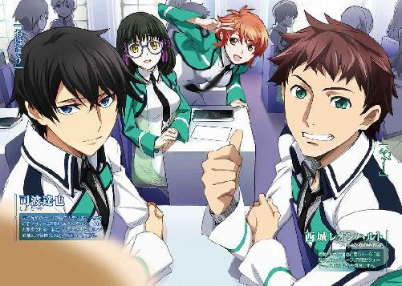
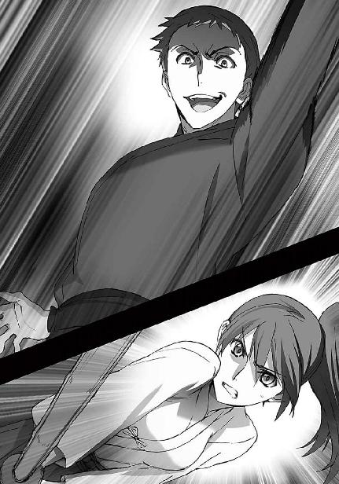

| 魔法科高校の劣等生(1) 入学編〈上〉 (電撃文庫) | |
| 佐島 勤 | |
| (2016) | |

本書（電子版）に掲載されているコンテンツ（ソフトウェア／プログラム／データ／情報を含む）の著作権およびその他の権利は、すべて株式会社ＫＡＤＯＫＡＷＡおよび正当な権利を有する第三者に帰属しています。
法律の定めがある場合または権利者の明示的な承諾がある場合を除き、これらのコンテンツを複製・転載、改変・編集、翻案・翻訳、放送・出版、公衆送信（送信可能化を含む）・再配信、販売・頒布、貸与等に使用することはできません。
［０］
魔法。
それが伝説や御伽噺の産物ではなく、現実の技術となったのは何時のことだったのか。
確認できる最初の記録は、西暦一九九九年のものだ。
人類滅亡の預言を実現しようとした狂信者集団による核兵器テロを、特殊な能力を持った警察官が阻止したあの事件が、近代以降で最初に魔法が確認された事例とされている。
当初、その異能は「超能力」と呼ばれていた。純粋に先天的な、突然変異で備わる能力であって、共有・普及可能な技術体系化は不可能と考えられていた。
それは、誤りだった。
東西の有力国家が「超能力」の研究を進めていく過程で、少しずつ、「魔法」を伝える者たちが表舞台に姿を見せた。「超能力」は「魔法」によって再現が可能となった。
無論、才能は必要だ。だが、高い適性を有する者のみがプロフェッショナルと呼べるレベルまで熟達できる、という意味では、芸術分野、科学分野の技能も同じ。
超能力は魔法によって技術体系化され、魔法は技能となった。「超能力者」は「魔法技能師」となった。
核兵器すらねじ伏せる強力な魔法技能師は、国家にとって兵器であり力そのものだ。
二十一世紀末──西暦二〇九五年を迎えても未だ統一される気配すら見せぬ世界の各国は、魔法技能師の育成に競って取り組んでいる。
国立魔法大学付属第一高校。
毎年、国立魔法大学へ最も多くの卒業生を送り込んでいる高等魔法教育機関として知られている。
それは同時に、優秀な魔法技能師（略称「魔法師」）を最も多く輩出しているエリート校ということでもある。
魔法教育に、教育機会の均等などという建前は存在しない。
この国にそんな余裕は無い。
それ以上に、使える者と使えない者の間に存在する歴然とした差が、甘ったれた理想論の介在を許さない。
徹底した才能主義。
残酷なまでの実力主義。
それが、魔法の世界。
この学校に入学を許されたということ自体がエリートということであり、入学の時点から既に優等生と劣等生が存在する。
同じ新入生であっても、平等ではない。
例え、血を分けた兄妹であっても。
［１］
「納得できません」
「まだ言っているのか......？」
第一高校入学式の日、だが、まだ開会二時間前の早朝。
新生活とそれがもたらす未来予想図に胸躍らせる新入生も、彼ら以上に舞い上がっている父兄の姿も、さすがに疎らだ。
その入学式の会場となる講堂を前にして、真新しい制服に身を包んだ一組の男女が何やら言い争っていた。
同じ新入生、だがその制服は微妙に、しかし明確に異なる。
スカートとスラックスの違い、男女の違い、ではない。
女子生徒の胸には八枚の花弁をデザインした第一高校のエンブレム。
男子生徒のブレザーには、それが無い。
「何故お兄様が補欠なのですか？ 入試の成績はトップだったじゃありませんか！
本来ならばわたしではなく、お兄様が新入生総代を務めるべきですのに！」
「お前が何処から入試結果を手に入れたのかは横に置いておくとして......魔法科学校なんだから、ペーパーテストより魔法実技が優先されるのは当然じゃないか。
俺の実技能力は深雪も良く知っているだろう？ 自分じゃあ、二科生徒とはいえよくここに受かったものだと、驚いているんだけどね」
激しい口調で食って掛かる女子生徒を、男子生徒が何とか宥めようとしている構図だった。女子生徒が「お兄様」と呼んでいるところから察するに兄妹なのだろう。近しい親戚、という可能性もゼロではないが。
兄妹だとするならば。
似ていない兄妹だった。
妹の方は人の目を惹かずにはおかない、十人が十人、百人が百人認めるに違いない可憐な美少女。
一方で兄の方は、ピンと伸びた背筋と鋭い目つき以外、取り立てて言い及ぶところのない平凡な容姿をしている。
「そんな覇気の無いことでどうしますか！ 勉学も体術もお兄様に勝てる者などいないというのに！ 魔法だって本当なら」
兄の弱気な発言を妹が厳しく叱咤する、が
「深雪！」
それ以上に強い口調で名前を呼ばれて、深雪はハッとした顔で口を閉ざした。
「分かっているだろ？ それは口にしても仕方のないことなんだ」
「......申し訳ございません」
「深雪......」
項垂れた頭にポンと手を置き、艶やかな癖の無い長い黒髪をゆっくり撫でながら、さて、どう機嫌をとろうか、と、兄であろう少年は少しばかり情けないことを考えていた。
「......お前の気持ちは嬉しいよ。俺の代わりにお前が怒ってくれるから、俺はいつも救われている」
「噓です」
「噓じゃない」
「噓です。お兄様はいつも、わたしのことを叱ってばかり......」
「噓じゃないって。
でも、お前が俺のことを考えてくれているように、俺もお前のことを思っているんだ」
「お兄様......そんな、『想っている』だなんて......」
（......あれっ？）
何故か、頰を赤らめる少女。
何かしら無視し得ない齟齬が生じているような気がしたが、少年は差し迫った問題の解決の為に、疑念を棚上げすることにした。
「お前が答辞を辞退しても、俺が代わりに選ばれることは絶対に無い。この土壇場で辞退したりすれば、お前の評価が損なわれることは避けられない。
本当は、分かっているんだろ？ 深雪、お前は賢い娘だから」
「それは......」
「それにな、深雪。俺は楽しみにしているんだよ。
お前は俺の自慢の妹だ。
可愛い妹の晴れ姿を、このダメ兄貴に見せてくれよ」
「お兄様はダメ兄貴なんかじゃありません！
......ですが、分かりました。我侭を言って、申し訳ありませんでした」
「謝ることでもないし、我侭だなんて思ってないさ」
「それでは、行って参ります。
......見ていてくださいね、お兄様」
「ああ、行っておいで。本番を楽しみにしているから」
はい、では、と会釈をした少女の姿が講堂へと消えたのを確認して、少年はやれやれとため息をついた。
（さて......俺はこれからどうすればいいんだろ？）
総代を渋る妹の付き添いでリハーサル前に登校した少年は、入学式が始まるまでの二時間をどう過ごすか、悩み、途方に暮れた。
◇ ◇ ◇
本棟、実技棟、実験棟の三校舎。
内部レイアウトが機械可変式の講堂兼体育館。地上三階・地下二階の図書館。二つの小体育館。更衣室、シャワー室、備品庫、クラブの部室として使われている準備棟。食堂兼カフェテリア兼購買も別棟になっており、それ以外にも大小様々な付属建築物が建ち並ぶ第一高校の敷地内は、高校と言うより郊外型の大学キャンパスの趣がある。
入場が始まるまでの待ち時間、少年は腰を落ち着ける場所を探して、煉瓦を模したソフトコート舗装の道を、左右を見ながら歩いていた。
学校施設を利用する為のＩＤカードは、入学式終了後に配られる段取りになっている。
来訪者の為のオープンカフェも、混乱を避ける為か今日は営業していない。
携帯端末に表示した構内図と見比べながら歩き回ること五分、視界を遮らない程度に配置された並木の向こう側に、ベンチの置かれた中庭を発見した。
雨じゃなくて良かった、と埒もないことを考えながら、三人掛けのベンチに腰を落ち着け、携帯端末を開いてお気に入りの書籍サイトにアクセスする。
この中庭は準備棟から講堂へ通じる近道のようだ。
式の運営に駆り出されているのだろうか。在校生（少年にとっては上級生）が少年の前を少し距離をとって横切って行く。彼ら、彼女たちの左胸には一様に、八枚花弁のエンブレム。
通り過ぎて行ったその背中から、無邪気な悪意が零れ落ちる。
──あの子、ウィードじゃない？
──こんなに早くから......補欠なのに、張り切っちゃって
──所詮、スペアなのにな
聞きたくもない会話が、少年の耳に流れ着く。
ウィードとは、二科生徒を指す言葉だ。
緑色のブレザーの左胸に八枚花弁を持つ生徒をそのエンブレムの意匠から「ブルーム」と呼び、それを持たない二科生徒を花の咲かない雑草（weed）と揶揄して「ウィード」と呼ぶ。
この学校の定員は一学年二百名。
その内百名が、第二科所属の生徒として入学する。
国立魔法大学の付属教育機関である第一高校は、魔法技能師育成の為の国策機関だ。
国から予算が与えられている代わりに、一定の成果が義務付けられている。
この学校のノルマは、魔法科大学、魔法技能専門高等訓練機関に、毎年百名以上の卒業生を供給すること。
残念ながら、魔法教育には事故が付き物だ。実習で、実験で、魔法の失敗は容易に「チョッとした」では済まされない事故へ直結する。生徒たちはその危険性を知りながらも、魔法という自らの才能、自らの可能性に己が未来を賭けて、魔法師への道を突き進む。
稀少な才能を持ち、それが社会的に高く評価されるものであるとき、その才能を捨てられる者は少ない。それが人格的に未成熟な少年少女であれば尚のこと。「輝かしい未来」以外の将来を思い描くことができなくなる。それは決して悪いことではないが、その固定化された価値観の故に少なくない子供たちが傷を負うのも、また事実だ。
幸いノウハウの蓄積により、死亡事故や身体に障碍が残るような事故はほぼ根絶されている。
だが魔法の才能は、心理的要因により容易にスポイルされてしまう。
事故のショックで魔法を使えなくなった生徒が、毎年少なからず退学していく。
その穴埋め要員が「二科生徒」。
彼らは学校に在籍し、授業に参加し、施設・資料を使用することを許可されているが、最も重要な、魔法実技の個別指導を受ける権利が無い。
独力で学び、自力で結果を出す。
それができなければ、普通科高校卒業資格しか得られない。
魔法科高校の卒業資格は与えられず、魔法科大学には進学できない。
魔法を教えられる者が圧倒的に不足している現状では、才能ある者を優先せざるを得ないのだ。二科生は最初から、教えられないことを前提として入学を許されているのである。
二科生を「ウィード」と呼ぶことは、建前としては禁止されている。
だがそれは、半ば公然たる蔑称として、二科生自身の中にも定着している。二科生自身が、自分たちをスペア部品でしかないと認識している。
それは、少年も同じだった。
だから、わざわざ聞こえよがしに思い知らせてくれる必要は無い。そんなことは百も承知で、この学校に入ったのだ。
本当に余計なお世話だ、と思いながら、少年は情報端末に落とした書籍データへ意識を向けた。
◇ ◇ ◇
開いていた端末に、時計が表示された。
読書に没頭していた意識が、現実に引き戻される。
入学式まで、あと三十分。
「新入生ですね？ 開場の時間ですよ」
愛用の書籍サイトからログアウトし、端末を閉じてベンチから立ち上ろうとしたちょうどその時、頭上から声が降って来た。
まず目に付いたのは制服のスカート。それから、左腕に巻かれた幅広のブレスレット。
普及型より大幅に薄型化され、ファッション性も考慮された最新式のＣＡＤだ。
ＣＡＤ──術式補助演算機（Casting Assistant Device）。
デバイス、アシスタンスとも呼ばれている。
この国ではホウキ（法機）という呼称も使われる。
魔法を発動する為の起動式を、呪文や呪符、印契、魔法陣、魔法書などの伝統的な手法・道具に代わり提供する、現代の魔法技能師に必須のツール。
一単語、あるいは一文節で魔法を使い分ける呪文は、今のところ開発されていない。呪符や魔法陣を併用したとしても、短くて十秒前後、ものによっては一分以上の詠唱が必要となるところを、ＣＡＤは一秒以下の簡易な操作で代替する。
ＣＡＤが無ければ魔法を発動できないというわけではないが、魔法発動を飛躍的に高速化したＣＡＤを使わない魔法技能師は皆無に等しい。一定の技能に特化することを代償として、念ずるだけで超常現象を引き起こすいわゆる「超能力者」も、起動式システムがもたらすスピードと安定性を求めてＣＡＤを愛用する者が主流となっているほどだ。
ただし、ＣＡＤがあれば誰でも魔法が使えるというわけでもない。
ＣＡＤは起動式を提供するだけであり、魔法を発動するのは魔法技能師自身の能力。
つまり、魔法を使えない者には無用の長物であり、ＣＡＤを所持するのはほぼ百パーセント、魔法に携わる者である。
そして少年の記憶によれば、生徒で学内におけるＣＡＤの常時携行が認められているのは、生徒会の役員と特定の委員会のメンバーのみ。
「ありがとうございます。すぐに行きます」
相手の左胸には当然、八枚花弁のエンブレム。
ブレザーを押し上げる胸のふくらみは、少年の意識に投影されない。
自分の左胸を隠す、ことはしない。
そんな卑屈さは、持ち合わせていない。
だが、劣等感が無いわけではない。
生徒会役員を務めるような優等生と、積極的に関わり合いになりたいとは思えなかった。
「感心ですね、スクリーン型ですか」
だが、相手はそう思わなかったようだ。少年の手で三つ折りに畳まれる携帯情報端末のフィルムスクリーンに目を遣りながら、何が楽しいのかニコニコ微笑んでいる。
少年はここに至り、ようやく相手の顔を見た。
相手の顔の位置は、ベンチから立ち上がった少年より、二十センチは低い。
少年の身長が一七五センチだから、女性としても小柄な方だろう。
目線が、彼が二科生徒であることを確認するには、ちょうどいい高さ。
だがその眼差しには、彼を見下す一切の色彩が含まれておらず、単純な、あるいは無邪気な、感嘆があった。
「当校では仮想型ディスプレイ端末の持込を認めていません。ですが残念なことに、仮想型を使用する生徒が大勢います。
でもあなたは、入学前からスクリーン型を使っているんですね」
「仮想型は読書に不向きですので」
彼の端末が年季の入ったものであることくらい誰にでも一目で分かるので、余計なことを訊き返したりはしなかった。
少年の言い訳じみた返事は、余り素っ気ないと、自分よりも妹の不利益になると考えた結果だ。新入生総代を務める彼の妹は間違いなく、生徒会に選ばれるだろうから。
そんな打算の産物に、その上級生は一層感心の色を濃くした。
「動画ではなく読書ですか。ますます珍しいです。
私も映像資料より書籍資料が好きな方だから、何だか嬉しいわね」
確かにバーチャルコンテンツの方がテキストコンテンツより好まれる時代だが、読書を好む人間がそこまで稀少ということは無い。
どうやらこの上級生は、珍しいくらい人懐こい性格らしい。口調と言葉遣いが、段々砕けたものになってきている点から見ても。
「あっ、申し遅れました。私は第一高校の生徒会長を務めています、七草真由美です。ななくさ、と書いて、さえぐさ、と読みます。
よろしくね」
最後にウインクが添えられていても不思議のない口調だった。美少女なルックス、小柄ながらも均整の取れたプロポーションと相まって、高校生になったばかりの男子生徒が勘違いしても仕方がない蠱惑的な雰囲気を醸し出していた。
それなのに、彼女の自己紹介を聞いて、少年は思わず顔を顰めそうになった。
（数字付き......しかも「七草」か）
魔法師の能力は遺伝的素質に大きく左右される。
魔法師としての資質に、家系が大きな意味を持つ。
そしてこの国において、魔法に優れた血を持つ家は、慣例的に数字を含む苗字を持つ。
数字付きとは優れた遺伝的素質を持つ魔法師の家系のことであり、七草家はその中でも、現在この国において最有力と見なされている二つの家のうちの一つだった。その、おそらくは直系の血を引き、この学校の生徒会長を務める少女。つまり、エリート中のエリートというわけだ。自分とは正反対と言ってもいい、かもしれない。
そんな苦みを伴う呟きを心の中に押し留め、何とか愛想笑いを浮かべて、少年は名乗り返した。
「俺、いえ、自分は、司波達也です」
「司波達也くん......そう、あなたが、あの司波くんね......」
目を丸くして驚きを表現した後、何やら意味ありげに頷く生徒会長。
まあ、どうせ新入生総代、主席入学の司波深雪の兄でありながら、まともに魔法が使えない落ちこぼれ、という意味の「あの」だろう。
そう思い、達也は礼儀正しい沈黙を選んだ。
「先生方の間では、あなたの噂で持ちきりよ」
黙り込んだ達也を気にした様子もなく、真由美は楽しそうな含み笑いの後、そう言った。
それは、ここまで出来の違う兄妹も珍しいだろう、と達也は思った。
だが不思議と、そういうネガティブな感情は伝わってこなかった。含み笑いに、嘲りのニュアンスは感じられなかった。
真由美の笑顔からは、親しみを込めたポジティブなイメージしか伝わってこない。
「入学試験、七教科平均、百点満点中九十六点。
特に圧巻だったのは魔法理論と魔法工学。合格者の平均点が七十点に満たないのに、両教科とも小論文を含めて文句なしの満点。
前代未聞の高得点だって」
手放しの称賛に聞こえるのは自分の気の所為に違いない、と達也は思った。何故なら、
「ペーパーテストの成績です。情報システムの中だけの話ですよ」
魔法科高校生の評価として優先されるのは、テストの点数ではなく、実技の成績だからだ。
苦い愛想笑いを浮かべながら、達也は自分の左胸を指差した。
その意味を生徒会長が知らないはずは無い。
しかし真由美は、達也の言葉に対して、笑顔で首を振った。
縦に、ではなく、左右に。
「そんな凄い点数、少なくとも、私には真似できないわよ？
私ってこう見えて、理論系も結構上の方なんだけどね。入学試験と同じ問題を出されても、司波くんのような点数はきっと、取れないだろうなぁ」
「そろそろ時間ですので......失礼します」
達也は、まだ何か話したそうにしている真由美にそう告げて、返事を待たずに背を向けた。
真由美の笑顔を、このまま彼女と会話し続けることを、彼は心の何処かで恐れていた。
自分が何を恐れているのか、自覚しないままに。
◇ ◇ ◇
生徒会長と話しこんでいた所為で、達也が講堂に入った時には、既に席の半分以上が埋まっていた。
座席の指定は無いから、最前列に座ろうが最後列に座ろうが真ん中に座ろうが端に座ろうが、それは自由だ。
今でも、学校によっては入学式前にクラス分けを発表してクラス別に並ばせる古風なところもあるが、この学校はＩＤカード交付時にクラスが判明する仕組になっている。
従って、クラス別に自然に分かれる、ということもない。
だが、新入生の分布には、明らかに規則性があった。
前半分が一科生。左胸に八枚花弁のエンブレムを持つ生徒。この学校のカリキュラムをフルに享受できる新入生。
後ろ半分が二科生。左胸のポケットが無地のままの生徒。補欠的な扱いでこの学校に入学を許された新入生。
同じ新一年生、同じく今日からこの学校の生徒となる身でありながら、前と後ろでエンブレムの有無が、きれいに分かれている。
誰に強制されたわけでもない、にも関わらず。
（最も差別意識が強いのは、差別を受けている者である、か......）
それも一種の生きる智恵であるのは確かだ。
あえて逆らうつもりもなかったので、達也は後ろ三分の一辺りの中央に近い空き席を適当に見つくろって座った。
壁の時計に目を向ける。
あと二十分。
通信制限の掛かっている講堂の中では文献サイトにアクセスできない。端末に保存したデータは読み古しているし、何よりこんな所で端末を広げるのはマナー違反だ。
今頃、最後のリハーサルをしているであろう妹の姿を思い浮かべようとして......達也は小さく頭を振った。
あの妹が、こんな直前にじたばたするはずがない。
結局、何もすることが無くなった達也は、クッションの効いていない椅子に深く座り直して目を閉じた。そのまま意識を睡魔に委ねようとした、のだが、
「あの、お隣は空いていますか？」
その直後、声が掛かった。
目を開けて確認すると、やはり、自分に掛けられた声。
声で分かるとおりの、女子生徒だ。
「どうぞ」
まだ空席は少なくないのに何故わざわざ見知らぬ男子生徒の隣に座りたがるのか、と訝しむ気持ちが無いでもなかったが、ここの椅子は座り心地はともかくサイズだけはゆったりと作ってあるし相手は少女としても細身の体型（横幅が、という注釈付きだが）だったので、隣に座られても達也としては不都合など無い。むしろ、むさ苦しい筋肉の塊に居座られるよりマシだ。
そう考えて、達也は愛想よく頷いた。
ありがとうございます、と頭を下げて腰掛ける少女。
その横に次々と三人の少女が腰を下ろす。
なるほど、と達也は納得した。
どうやら四人一続きで座れる場所を探していたらしい。
友人、なのだろうが、この難関学校に四人も同時に合格して、その全員が二科生というのも珍しいんじゃないか、と達也は思った。一人くらい、成績上位者がいてもおかしくない気がする。──別に、どうでもいいことではあるが。
「あの......」
偶然隣り合わせることになった同級生に対するそれ以上の関心を無くし、視線を正面に戻した達也に、また、声が掛けられた。
一体なんだろうか？
間違いなく知り合いではないし、肘が当たってるわけでも足が当たっているわけでもない。
自分で言うのも何だが、達也は姿勢が良い方だ。
クレームを受けるようなことは、何もしていないはずだが──
「私、柴田美月っていいます。よろしくお願いします」
と、首を傾げた達也に、予想外の自己紹介。気弱そうな口調と外見。人を見た目で判断するのは危険かもしれないが、アピールが得意なタイプとも思えない。
多分、無理をしているのだろう、と達也は判断した。誰からか、「ただでさえハンデを負っているのだから、二科生同士助け合わなければならない」などと、余計なことを吹き込まれたのかもしれない。
「司波達也です。こちらこそよろしく」
そう思ってなるべく柔らかな態度で自己紹介を返すと、大きなレンズの向こう側の瞳にホッとした表情が浮かんだ。
メガネをかけた少女は、今の時代、かなり珍しいといえる。
二十一世紀中葉から視力矯正治療が普及した結果、この国で近視という病は過去のものとなりつつある。
余程重度の先天性視力異常でもない限り、視力矯正具は必要ないし、視力矯正が必要な場合でも人体に無害で年単位の連続装着が可能なコンタクトレンズが普及している。
わざわざメガネを使う理由があるとすれば、単なる嗜好か、ファッションか、あるいは──
（霊子放射光過敏症か......）
少し意識を向けただけで、レンズに度の入っていないことが分かる。少なくとも、視力矯正を目的としたものではない。この少女の印象からして、ファッションでメガネを愛用しているというより、何か必要があってメガネを掛けているという方が、達也には自然に思えた。
霊子放射光過敏症は、見え過ぎ病とも呼ばれている「体質」のことで、意図せずに霊子放射光が見える、意識して霊子放射光を見えないようにすることができない、一種の知覚制御不全症だ。とは言っても病気ではなく、障碍でもない。
感覚が、鋭すぎるだけなのだ。
霊子と、想子。どちらも「超心理現象」──魔法もこれに含まれる──において観測される粒子で、物質を構成しているフェルミオン（フェルミ粒子）には該当せず、物質間に相互作用をもたらすボソン（ボース粒子）とも異なる非物理的存在だ。想子は意思や思考を形にする粒子、霊子は意思や思考を産み出す情動を形作っている粒子と考えられている。（残念ながら、まだ仮説段階だが）
通常、魔法に用いられるのは想子の方で、現代魔法の技術体系は想子の制御に力点が置かれている。魔法師はまず、想子を操作する技能から覚える。
ところが霊子放射光過敏症者は、先天的に霊子放射光──霊子の活動によって生じる非物理的な光に過敏な反応を示してしまう。
霊子放射光は、それを見ている者の情動に影響を及ぼす。それ故に霊子は情動を形成する粒子である、という仮説が立てられているわけだが、その為に、霊子放射光過敏症者は精神の均衡を崩しやすい傾向にある。
これを予防する為の手立ては、根本的には、霊子感受性をコントロールすることだが、それができない者には技術的な代替手段が提供されている。その一つが、オーラ・カット・コーティング・レンズと呼ばれる特殊なレンズを使ったメガネだ。
実は、魔法師にとって霊子放射光過敏症は、それほど珍しい体質ではない。霊子に対する感受性と想子に対する感受性は大体において正比例しているから、想子を認識し操作する魔法師に霊子放射光に対する過敏な感受性に悩む者が多く見られるのは仕方のないことだと言える。
だが、常時メガネで霊子放射光を遮断しなければならないほどの「症状」は、やはり珍しい。それが単に制御能力の低さに由来するものならばいいのだが、感受性が極端に強い所為であれば、達也にとって困ったことになる。（本人にとっては逆だろう）
達也には、隠している秘密がある。
普通なら見ても分からない、見られること自体を心配する必要のない秘密だが、霊子や想子を可視光と同じように知覚できる特殊な目を持っているとすれば、ふとしたはずみで気づかれてしまうかもしれない。
──彼女の前では、いつも以上に注意深い行動を心掛けておくべきだろうか。
「あたしは千葉エリカ。よろしくね、司波くん」
「こちらこそ」
達也の思惟は、美月の向こう側に座った少女の声で中断された。
ただそれは、タイミングのいいリリーフでもあった。
達也の視線は知らず美月を見詰める形となっていて、美月の羞恥心がそろそろ限界に近づいていたのだが、そのことに彼は気づいていなかった。
「でも面白い偶然、と言っていいのかな？」
こちらは友人と違って、物怖じも人見知りもしない性格らしい。
ショートの髪型や明るい髪の色やハッキリした目鼻立ちが、活発な印象を増幅している。
「何が？」
「だってさ、シバにシバタにチバでしょ？ 何だか語呂合わせみたいじゃない。チョッと違うけどさ」
「......なるほど」
確かにチョッと違うが、言いたいことは分かる。
（それにしても、千葉ね......また数字付きか？ あの千葉家に「エリカ」という名前の娘はいなかったと思うが、傍系という可能性もあるしな......）
彼がそんなことを考えている傍らで、ホントだ、とか、面白～い、とか、いささか場違いな笑声が放たれたが、周りから白い目を向けられるほどではない。
エリカの向こう側に座っている残り二人の自己紹介が終わったところで、達也は些細な好奇心を満たしてみたくなった。
「四人は、同じ中学？」
エリカの答えは、意外なものだった。
「違うよ、全員、さっき初対面」
意表をつかれた達也の表情が可笑しかったのか、エリカはクスクス笑いながら説明を続けた。
「場所が分からなくてさ、案内板と睨めっこしていたところに、美月が声をかけてくれたのがきっかけ」
「......案内板？」
それはおかしいだろう、と達也は思った。入学式のデータは会場の場所も含めて、入学者全員に配信されている。携帯端末に標準装備されたＬＰＳ（Local Positioning System）を使えば、仮に、式の案内を読んでいなくても、何も覚えていなくても、迷うことは無いはずだ。
「あたしたち、三人とも端末持って来てなくて」
「だって、仮想型は禁止だって入学案内に書いてあるんだもん」
「せっかく滑り込めたのに、入学式早々目をつけられたくないし」
「あたしは単純に忘れたんだけどね」
「そういうことか......」
本当は、納得したわけではなかった。自分の入学式なのだから、会場の場所くらい確認しておけよ、というのが偽らざる思いだったのだが、それを口にはしなかった。
無益な波風を立てる必要は無い──そう考えて、達也は自重した。
◇ ◇ ◇
深雪の答辞は、予想したとおり見事なものだった。
この程度のことで妹が躓くなどと、達也は微塵も考えていなかったが。
「皆等しく」とか「一丸となって」とか「魔法以外にも」とか「総合的に」とか、結構際どいフレーズが多々盛り込まれていたが、それらを上手く建前でくるみ、棘を一切感じさせなかった。
その態度は堂々としていながら初々しく慎ましく、本人の並外れて可憐な美貌と相乗して、新入生・上級生の区別無く、男たちのハートを鷲摑みだった。
深雪の身辺は、明日から、さぞかし賑やかだろう。
それもまた、いつものことだ。
何のかのと言いながら、世間一般の基準に照らしてシスコンと呼ばれる程度には深雪に甘い達也である。すぐにでも妹を労ってやりたかったが、生憎、式の終了に続いてＩＤカードの交付がある。
予め各人別のカードが作成されているわけではなく、個人認証を行ってその場で学内用カードにデータを書き込む仕組だから、どの窓口に行っても手続き可能なのだが、ここでもやはり、自然と壁が生まれてしまう。
深雪は多分、というか間違いなく、そんなものは無視してしまうだろうが、彼女は新入生を代表して、既にカードを授与されている。
そして今は、来賓と生徒会の人垣の中だ。
「司波君、何組？」
一塊で窓口に移動し一列最後尾でＩＤカードを受け取った達也に（つまりレディファーストの真似事をしてみたわけだ）、エリカがワクワク感を隠せない顔で問い掛ける。
「Ｅ組だ」
達也の答えに
「やたっ！ 同じクラスね」
飛び跳ねて喜ぶエリカ。少々オーバージェスチャーな気がしたが、
「私も同じクラスです」
アクションを伴わないだけで美月も似たような顔をしていたから、新高校一年生としてはこれが当たり前なのかもしれない。
「あたし、Ｆ組」
「あたしはＧ組だぁ」
だからといって、残る二人のあっさりした反応が薄情ということでもあるまい。要するに彼女たちは、高校入学というイベントに浮かれているのだった。
この学校は一学年八クラス、一クラス二十五人。
こういうところは平等だ。
もっとも、開花を期待されていない二科生の所属クラスはＥ組からＨ組と決まっており、大輪の花を期待されている一科生と同じ温室になることは無いのだが。
別クラスとなった女子生徒二人とは、ここで自然と別行動となった。二人とも、自分のホームルームへ向かうようだ。Ａ─Ｄ組とＥ─Ｈ組は使用する階段からして違うが、それでテンションを下げた様子はない。
二科生徒の全員が拘りを抱えているわけではないのだ。
チョッと背伸びした名門校に受かっちゃった、という意識の生徒も結構いる。
この学校は、魔法以外のレベルも全国上位クラスと評価されているからだ。
あの二人は多分、それぞれのクラスで一年間を共有する友人を探しに行ったのだろう。
「どうする？ あたしらもホームルームへ行ってみる？」
エリカが達也の顔を見上げてそう訊ねた。美月に訊ねなかったのは、彼女も達也の顔を見上げていたからだろう。
古い伝統を守り続けている一部の学校を除いて、今の高校に担任教師という制度は無い。
事務連絡にいちいち人手を使う必要はなく、そんな人件費の無駄遣いをする余裕のあるところも少なく、全て学内ネットに接続した端末配信で済まされる。
学校用端末が一人一台体制になったのは、何十年も前のことだ。
個別指導も、実技の指導でなければ、余程のことでない限り情報端末が使用される。
それ以上のケアが必要なら、専門資格を持つ複数多分野のカウンセラーが学校には必ず配属されている。
では何故ホームルームが必要かというと、実技や実験の授業の都合だ。実技や実験を時間内に終わらせ、かつ余剰時間を作らないようにするためには、人数を一定のレベルに保つ必要がある、ということだ。（それでも居残りは日常的に発生してしまうのだが）
それに、自分用の決まった端末があった方が、何かと利便性が高いという理由もある。
どんな背景があるにせよ、一つの部屋で過ごす時間が長ければ、自然と交流も深まる。
担任制度が無くなることで、クラスメイトの結びつきは、むしろ強くなる傾向にあった。
何はともあれ、新しい友人を作る為なら、ホームルームへ行くのが一番の近道であることは確かだ。が、達也はエリカの誘いに、頭を振った。
「悪い。妹と待ち合わせているんだ」
今日はもう授業も連絡事項もないと分かっている。
達也は諸手続きが終わったらすぐ、深雪と一緒に帰る約束をしていた。
「へぇ......司波くんの妹なら、さぞかし可愛いんじゃないの？」
エリカの感想とも質問とも取れる呟きは、何と答えればいいものか困ってしまうものだった。自分の妹なら可愛い、とはどういう意味だ、と達也は思う。理由と結論が上手くつながっていない気がする。
幸い、無理に答える必要もなかった。
「妹さんってもしかして......新入生総代の司波深雪さんですか？」
美月がもっと根本的な質問をしてくれたからだ。
今度は悩む必要がない。達也は一つ頷くことで確認の意味合いが強いその問いに答えた。
「えっ、そうなの？ じゃあ、双子？」
エリカがそう訊ねてきたのも、もっともだろう。達也にとっても、お馴染みの質問だ。
「よく訊かれるけど双子じゃないよ。俺が四月生まれで妹が三月生まれ。俺が前に一ヶ月ずれても妹が後ろに一ヶ月ずれても、同じ学年じゃなかった」
「ふーん......やっぱりそういうのって、複雑なもんなの？」
優等生な妹と同じ学年、複雑でないはずはなかったが、エリカも悪気があって訊いてきているのではない。達也は笑ってその質問を流した。
「それにしてもよく分かったね。司波なんてそんなに珍しい苗字でもないのに」
達也の反問に、二人の少女は小さく笑った。
「いやいや、十分珍しいって」
ただし、その色合いは随分違う。エリカが苦笑混じりの笑みだったのに対し、
「面差しが似ていますから......」
美月の笑みは、何処か自信なさげな、控え目なものだった。
「似てるかな？」
その美月の言葉に、達也は首を捻らずにいられなかった。先ほどのエリカのセリフと同じ土壌に根ざした指摘なのだろうが、達也には全く実感が無い。
というか、信じられない。
深雪は身内の贔屓目抜きに見ても稀有な美少女で、有り余る才能を抜きにしてもその場にいるだけで注目を集めずにはいられないという天性のアイドル、いや、スターだ。
妹を見ていると、天は二物を与えずという諺は噓だという事が嫌というほど理解できる。
翻って自分はというと、一応標準以上、中の上くらい、かな？ というのが達也の自己評価だった。
中学生時代、毎日のようにラブレター（というより、あれはファンレターだと達也は見ている）を押し付けられていた妹を傍目に、達也はその手の物をもらったことが一度も無い。
一部とはいえ同じ遺伝子を共有しているはずだが、達也が血のつながりを疑ったことも一度や二度ではないのだ。
「そう言われれば......うん、似てる似てる。司波君、結構イケメンだしさ。それ以上に顔立ちがどうとかじゃなくて、こう、雰囲気みたいなものが」
ところがエリカは、達也の問い掛けに、というより美月の言葉に、ウンウンと頷いていた。
「イケメンって、何時の時代の死語だ......それに顔立ちが別なら、結局似てないってことだろう」
エリカの言うことは多分に感覚的で少し分かりにくかったが、やはり顔が似ているということではないらしい。達也はそう解釈して、思わずつまらないツッコミを入れてしまう。
「そうじゃなくってさ、うーん、何て言えばいいのか......」
エリカ自身も、上手く表現できないようだ。
美月の助け船がなければ、そのまましばらく唸っていたかもしれない。
「お二人のオーラは、凛とした面差しがとてもよく似ています。さすがに兄妹ですね」
「そう！ オーラよ、オーラ」
膝を叩かんばかりの勢いで、エリカが大きく頷いた。
今度は達也が苦笑する番だった。
「千葉さん......君って実は、お調子者だろ」
お調子者ぉ？ ヒドーイ、という抗議はお約束どおり聞き流す。口調からして、エリカも本気で食って掛かって来ているわけではない。
「それにしても柴田さん、オーラの表情なんて、よくそんなものが分かるものだ。
......本当に、目が良いんだね」
それより、しみじみとした口調で紡がれた次のセリフの方にエリカは食いついてきた。
「えっ？ 美月、メガネ掛けてるよ？」
「そういう意味じゃないよ。それに、柴田さんのメガネには度が入っていないだろ？」
んっ？ という顔で、エリカが美月のメガネをのぞき込んだ。
そのレンズの向こう側で、美月が目を見開いて、固まっていた。
見抜かれたことに驚いたのか、隠していたかったことがばれてしまって悔やんでいるのか、どちらにしても、そんなに気にすることではないように、達也には思える。
何故そんな顔をしているのか、それを詮索する機会は無かったが。
ちょうど、時間切れだった。多分、この場はそれで「結果オーライ」だった。
◇ ◇ ◇
「お兄様、お待たせ致しました」
講堂の出口に近い隅っこで話をしていた達也たちの背後から、待ち人の声が聞こえた。
人垣に囲まれていた深雪が抜け出してきたのだ。
少し早いような気もしたが、妹の気質を考えれば頃合いかもしれない、と達也は思い直した。
社交性に欠ける訳ではないが、お世辞やお愛想を嫌う潔癖症の傾向は否めない。子供っぽさ、と言えなくはないが、幼い時分から誉められる機会には事欠かず、その分、妬み・やっかみ混じりの上辺だけの賞賛にさらされることも少なくなかった。
それを考えれば、チヤホヤされることに多少懐疑的になっても仕方がない。今日は、よく我慢した方だと言える。
振り返りながら「早かったね」と応えた、つもりだったが、言葉は予定通りでも、イントネーションが疑問形になってしまった。
予定されていた待ち人は、背後に予定外の同行者を伴っていた。
「こんにちは、司波くん。また会いましたね」
人懐こい笑顔と言葉遣いを多少取り繕ったセリフに、達也は無言で頭を下げた。
愛想に乏しい応対にも関わらず、生徒会長・七草真由美は微笑みを崩さない。それが一種のポーカーフェイスなのか、それともこの年上の少女の地なのか、会ったばかりの達也には判断がつかなかった。
だが彼の妹は、生徒会長に対する兄の微妙な反応よりも、兄の傍らに親しげに寄り添う（？）少女たちの方が気になったようだ。
「お兄様、その方たちは......？」
深雪は自分が一人じゃない事情の説明より先に、達也が一人ではない理由の説明を求めてきた。いささか唐突の感はあったが、隠す必要は全くない。達也はタイムラグゼロで答えた。
「こちらが柴田美月さん。そしてこちらが千葉エリカさん。
同じクラスなんだ」
「そうですか......早速、クラスメイトとデートですか？」
可愛らしく小首を傾げ、含むところなんてまるでありませんよ、という表情で深雪が問いを重ねる。唇には淑女の微笑み。ただし、目が笑っていない。
やれやれ、と達也は思った。
どうやら、式が終わった直後からずっと、歯の浮くお世辞の十字砲火にさらされて、ストレスが結構たまっているようだ。
「そんなわけないだろ、深雪。お前を待っている間、話をしていただけだって。
そういう言い方は二人に対して失礼だよ？」
彼にとっては妹のこんな拗ねた顔も可愛いのだが、紹介を受けて名乗りもしないのは、上級生や同級生の手前、外聞が余りよろしくない。達也が目に軽い非難の色を乗せると、一瞬だけハッとした表情を浮かべた後、深雪は一層お淑やかな笑顔を取り繕った。
「はじめまして、柴田さん、千葉さん。司波深雪です。
わたしも新入生ですので、お兄様同様、よろしくお願いしますね」
「柴田美月です。こちらこそよろしくお願いします」
「よろしく。あたしのことはエリカでいいわ。貴女のことも深雪って呼ばせてもらっていい？」
「ええ、どうぞ。苗字では、お兄様と区別がつきにくいですものね」
三人の少女が、改めて自己紹介を交わした。
深雪と美月の挨拶は、初対面として妥当なもの。だがエリカは最初から随分と（良く言えば）フレンドリーだった。
しかし、エリカの親しげな物言いに、戸惑いを覚えたのは達也の方だった。
深雪は馴れ馴れしさと紙一重の砕けた態度に、気にした様子も見せず頷いた。
「あはっ、深雪って見掛けによらず、実は気さくな人？」
「貴女は見た目通りの、開放的な性格なのね。よろしく、エリカ」
深雪の方はお世辞とお愛想にウンザリしていた後でエリカのざっくばらんな態度が余計に好ましかったという事情もあるのだろうが、それ以上に、二人は何やら通じ合うものがあったようだ。すっかり打ち解けた笑みを交わす深雪とエリカ。置いてきぼりの感を自覚せずにはいられない達也だったが、このまま突っ立っているわけにもいかない。妹についてきた生徒会長の一行が一緒だから邪魔者扱いされることはないが、だからこそ何時までもこうしていては、通行の邪魔だった。
「深雪。生徒会の方々の用は済んだのか？ まだだったら、適当に時間を潰しているぞ？」
「大丈夫ですよ」
達也の質問と提案に対する応えは、異なる相手から返された。
「今日はご挨拶させていただいただけですから。
深雪さん......と、私も呼ばせてもらってもいいかしら？」
「あっ、はい」
真由美に話し掛けられ、深雪は打ち解けた笑みを神妙な表情に替えて頷いた。
「では深雪さん、詳しいお話はまた、日を改めて」
真由美は笑顔で軽く会釈してそのまま講堂を出て行こうとした。だが、すぐ後ろに控えていた男子生徒が真由美を呼び止めた。その胸には当然の如く咲き誇る、八枚花弁のエンブレム。
「しかし会長、それでは予定が......」
「予めお約束していたものではありませんから。別に予定があるなら、そちらを優先すべきでしょう？」
なおも食い下がる気配を見せる男子生徒を目で制して、真由美は深雪に、そして達也に、意味有りげな微笑みを向けた。
「それでは深雪さん、今日はこれで。司波くんもいずれまた、ゆっくりと」
再度会釈して立ち去る真由美。その背後に続く男子生徒が振り返り、舌打ちの聞こえてきそうな表情で達也を睨んだ。
◇ ◇ ◇
「......さて、帰ろうか」
どうやら入学早々、上級生、しかも生徒会役員の不興を買ってしまったようだが、今のは不可抗力に近い。もとより、この程度でクヨクヨできるような順風人生を辿って来たわけではないのだ。まだ十六年に満たない人生だが、その程度のネガティブな強さを身につけるだけの経験は有している達也だった。
「すみません、お兄様。わたしの所為で、お兄様の心証を」
「お前が謝ることじゃないさ」
表情を曇らせた深雪のセリフを最後まで言わせずに、達也は首を横に振って、ポン、と妹の頭に手を置いた。そのまま髪を梳くように撫でると、沈んでいた表情が陶然の色を帯びる。傍で見ていると少々危ない兄妹に見えなくもなかったが、そこは初対面の遠慮もあってか、美月も、そしてエリカも、その事については何も言わなかった。
「せっかくですから、お茶でも飲んでいきませんか？」
「いいね、賛成！ 美味しいケーキ屋さんがあるらしいんだ」
代わりに投げ掛けられたのは、ティータイムのお誘い。
家族が待っているのではないか、と訊くつもりはない。こんなことを言い出した時点で、無用な気遣いだろう。それを言うなら達也たちも同様だ。
それよりも達也には、訊いてみたいことがあった。実にどうでもいいことなのだが、放置できない程度には気になってしまったのである。
「入学式の会場の場所はチェックしていなかったのに、ケーキ屋は知っているのか？」
少し、意地の悪い質問だったかもしれない。
「当然！ 大事なことでしょ？」
だがエリカは、僅かな躊躇もなく、自信たっぷりに頷いた。
「当然なのか......」
相槌のセリフが、呻き声になっていた。だが、それを誰が責められようか、と達也は他人事のように思った。
「お兄様、どういたしましょうか？」
しかしどうやら、エリカの暴言（？）にショックを受けているのは、達也だけだったらしい。
深雪も、式場より甘味処を優先した非常識に、気を留めている素振りがなかった。──もっとも深雪は、その経緯自体を知らないのだが。
「いいんじゃないか。せっかく知り合いになったことだし。同性、同年代の友人はいくらいても多過ぎるということはないだろうから」
とはいっても、同意の回答自体はほとんど考え込むことなく返された。特に急いで帰宅しなければならない用事もない。元々達也は、妹の入学祝いに何処か適当なところで昼を済ませて帰ろうか、とも考えていたのだ。
深く考えられたセリフではないので、そこには彼の何気ない本音が表れている。
本音だということがエリカと美月にも分かったから、こういう言葉が返ってきたのだろう。
「司波くんって、深雪のことになると自分は計算外なのね......」
「妹さん思いなんですね......」
褒められているのか呆れられているのか、配合がそれぞれに異なる眼差しを前に、達也は苦い顔で黙り込むことしかできなかった。
◇ ◇ ◇
エリカに連れて行かれた「ケーキ屋」は、その実「デザートの美味しいフレンチのカフェテリア」だったので、そこで昼食を済ませ、短くない時間お喋りに興じて（いたのは女性三人で、達也はほとんど聞いているだけだった）、家に帰り着いたのは夕暮れも近い時間になっていた。
出迎える者はない。
平均を大きく上回る広さのこの家は、ほとんど達也と深雪の二人暮らしのようなものだ。
自分の部屋に戻り、まず制服を脱ぐ。
こんな姑息な道具立てに影響されているとは思いたくないが、わざわざ「違い」を際立たせるように作られたブレザーを脱ぐと、少し、気分が軽くなったような気がした。そんな自分の心の動きに一度だけ舌打ちして、手早く着替えを済ませる。
リビングで寛いでいると、程なくして、部屋着に着替えた深雪が下りて来た。
素材は大きく進歩したが、服のデザインは百年前からほとんど変化していない。
今世紀初頭風の丈の短いスカートから綺麗な脚線をのぞかせながら、深雪が近づいて来る。
この妹のファッションはどういう訳か、家の中で露出が増える傾向にある。いい加減慣れてもよさそうだが、ここのところ随分と女性らしさを増して、達也としては目のやり場に困ってしまうこともしばしばだった。
「お兄様、何かお飲み物をご用意しましょうか？」
「そうだね、コーヒーを頼む」
「かしこまりました」
キッチンへ向かう華奢な背中で、緩く一本に編んだ髪が揺れる。水仕事をするのに、髪が邪魔にならないように、なのだが、普段は長い髪に隠れている白いうなじが、襟ぐりの広いセーターからチラチラと見え隠れして何とも言えぬ色香を醸し出していた。
ホーム・オートメーション・ロボット（ＨＡＲ／ハル）が普及している先進国では、台所に立つ女性は──無論男性も──どちらかと言えば少数派になっている。本格的な料理ならともかく、パンを焼く、コーヒーを淹れる程度のことに自分の手を使う者は、趣味でもなければほとんどいない。
そして深雪は、そのほとんどいない少数派に属している。
機械音痴というわけではない。
友人が遊びに来た時などは、大体ＨＡＲ任せだ。
しかし達也と二人のときは、決して手間を惜しまない。
ガリガリと豆を挽く音と、ブクブクとお湯が沸騰する音が達也の耳に小さく届く。
最も簡単なペーパードリップではあるが、旧式のコーヒーメーカーさえ使わないのは、何かの拘り有ってのことだろうか。
一度訊いてみたとき、そうしたいからです、という答えが返ってきたから、やはり趣味ということだろうか。それにしては、趣味なのか、と訊いたときには拗ねた顔で睨まれた憶えもあるが。
何にせよ、深雪の淹れるコーヒーが、達也の好みに一番合っていた。
「お兄様、どうぞ」
サイドテーブルにカップを置き、反対側に回って隣に腰を下ろす。
テーブルのコーヒーはブラック、手に持つカップの中身はミルク入りだ。
「美味い」
賞賛に多言は不要だった。
その一言で、深雪がニッコリと微笑む。
そして二口目を含む兄の満足げな顔を窺い見て、安堵の表情を浮かべて自分のカップに口を付ける──それが深雪の常だった。
そのままコーヒーを嗜む二人。
どちらも、無理に会話を作り出そうとはしない。
相手が、自分の隣にいることが気にならない。
無言の状態が続いて間が悪い思いをする、という経験は、この二人の間では絶えて久しい。
話すことならたくさんある。今日は入学式だったのだ。新しい友人もできたし、何やら気がかりな上級生も登場した。深雪は予想どおり生徒会に誘われている。思い出すことも、相談することも、一晩では足りないくらいにある。
だが兄妹は、二人きりの家で、二人で隣り合って、ただ静かにカップを傾けた。
「──すぐにお夕食のしたくをしますね」
空になったカップを持って、深雪が立ち上がった。妹が伸ばした手にコーヒーカップを預けて達也も立ち上がる。
兄妹二人、いつもどおりの、夜が更けていった。
［２］
高校生二日目の目覚めも、いつもと同じだった。
彼が高校に進学したからといって、地球の自転周期が変化するはずもない。
簡単に顔を洗い──後でもう一度、しっかりと洗顔することになるからだ──いつもの服に着替える。
ダイニングに下りると、既に深雪が朝食の準備を始めていた。
「おはよう、深雪。今朝は一段と早いな」
まだ空が白んだだけで、春の陽は顔を覗かせてもいない。
学校へは、当然早すぎる時刻だ。始業時刻は八時ちょうどで通学時間は徒歩を含めて約三〇分だから七時半前に家を出ればいいことになる。朝ご飯の準備をして、食べて、後片付けをして......と必要な時間を考えても、一時間以上は余裕が生まれる計算だ。
「おはようございます、お兄様......どうぞ」
「ありがとう」
差し出されたコップにはフレッシュジュース。
律儀に礼を述べてから一息に飲み干し、差し出された手にコップを返す。──達也の呼吸は、深雪によって完全に掌握されていた。
再び調理台に向かっている妹の背中に「行ってくる」と声を掛けようとしたちょうどその時、深雪が手を止めて身体ごと振り返った。
「お兄様、今朝はわたしもご一緒させていただこうかと思っているのですが......」
そう言い終えると同時に、サンドイッチを詰めたバスケットを抱え上げて見せる。どうやら、朝食を「作り始めた」ではなく、「作り終えかけていた」が正解だったらしい。
「それは構わないが......制服で行くのか？」
自分の着ているトレーナーと、エプロンの下から現れた制服を見比べながら達也が問う。
「先生にまだ、進学のご報告をしておりませんので......
それにわたしではもう、お兄様の鍛錬について行けませんから」
それが深雪の答えだった。
こんな早朝から制服に着替えていたのは、高校生姿を見せに行く為、というわけだ。
「分かった。別に朝練で深雪が俺と同じことをする必要はないんだが、そういうことなら師匠も喜ぶだろう。
......喜び過ぎて、たがが外れなきゃいいけどな」
「その時はお兄様、深雪を守ってくださいね」
可愛らしく片目をつぶる妹を前に、達也の顔には自然と笑みが浮かんでいた。
◇ ◇ ◇
まだ少し肌寒い、清々しい早朝の空気に長い髪とスカートの裾をなびかせて、ローラーブレードで坂道を滑り上る少女。
深雪は一度もキックを入れずに、重力に逆らって緩やかだが長い坂道を疾走する。
その速度は、時速六十キロにも届かんとしている。
その隣を併走する達也。
こちらはジョギングスタイルだが、一歩一歩のストライドが十メートルにも達している。
ただ、深雪に比べて表情に余裕がない。
「少し、ペースを落としましょうか......？」
「いや、それではトレーニングにならない」
クルリと身体の向きを変え、後ろ向きに片足滑走しながら問う深雪に、疲労をにじませながらも息を切らせることなく達也は答える。
二人とも、靴に何らかの動力を仕込んでいるわけではない。
言うまでもなく、このスピードは魔法によるものだ。
深雪が使っているのは重力加速度を低減する魔法と自分の身体を道の傾斜に沿って目的方向へ移動させる魔法。
達也が使っているのは路面をキックすることにより生じる加速力と減速力を増幅する魔法と、路面から大きく跳び上がらないように上向きへの移動を抑える魔法。
どちらも移動と加速の単純な複合術式だ。単純であるが故に、深雪はともかく、二科生にしかなれなかった達也にも継続的に発動し続けることができる。
この場合、ローラーブレードを履いている深雪と自分の足で走っている達也の、どちらがより難度が高いかは、一概には言えない。
一見、ローラーによって運動負荷が軽減されている深雪の方が楽に見えるが、自分の足を使わないということは移動ベクトルを全面的に魔法で制御しなければならないということだ。
それに対して達也は、走るという動作で移動の方向性を決定づけている。
一歩ごとに術式を起動し続けなければならない達也と、一瞬も術式のコントロールを手放すことのできない深雪。
二人は性質の異なる訓練を自分に課しているのだった。
◇ ◇ ◇
二人の目的地は家から十分程の距離にある──あのスピードで走って、だが──小高い丘の上にあった。
そこは、一言で表現するなら「寺」だ。
だが、そこに集う者たちの面構えは「僧侶」や「和尚」、あるいは「（小）坊主」にさえ、到底見えない。
あえて容れ物に相応しい存在を当てはめるとすれば、「修行者」、いや、「僧兵」の方が適当だろうか。
女性には敷居が高い、特に若い女の子は怯えて近づけないような雰囲気の中に、深雪はローラーブレードのまま躊躇なく入って行く。いつも礼儀正しい彼女には相応しからぬ作法だが、主が「構わない」と鬱陶しいくらい繰り返すので、いい加減馴れができてしまったのだ。
その時、達也は何をしていたのかというと、ペースについてこれなくなってまだ到着していない、のではなく、山門をくぐるなり、手荒い出迎えを受けていた。
出迎え、というのは、要するに稽古のことだが。
この寺に通い始めた当初は一人ずつの掛かり稽古だったのが、今では中級以下の門人約二十人による総掛かり──総当たり、ではない──に変わっていた。
「深雪くん！ 久し振りだねぇ」
人垣に埋もれてしまった兄を、本堂の前庭で心配そうに振り返って見ていた深雪に、死角から唐突に陽気な声が掛けられた。
「先生......っ。気配を消して忍び寄らないでくださいと、何度も申し上げておりますのに......」
なまじ感覚が鋭い為に、また同じような経験を繰り返して相応に警戒していただけ余計に、心臓に嫌なショックを受けて、無駄だと知りつつ深雪は抗議せずにおれなかった。
「忍び寄るな、とは、深雪くんも難しい注文を出してくれるんだねぇ。
僕は『忍び』だからね。忍び寄るのは性みたいなものなんだけど」
きれいに髪を剃り上げ細身の身体に墨染めの衣を着た姿はこの場に相応しいものだが、実年齢はともかく見た目と雰囲気は、まだそれほど老いていない。
飄々としてはいるが名状しがたい俗っぽさをにじませており、僧侶の格好をしていても何処と言えず噓くさかった。
「今時、忍者なんて職種はありません。そんな性は早急に矯正されることを望みます」
深雪の真面目な抗議にも、
「チッチッチ、忍者なんて誤解だらけの俗物じゃなくて、僕は由緒正しい『忍び』だよ。
職業じゃなくて伝統なんだ」
わざわざ舌打ちに合わせて指を振りながら答える有様だ。──とにかく、俗っぽい。
「由緒正しいのは存じております。ですから不思議でならないのですけど。
何故、先生がそんなに......」
軽薄なのか、とは、深雪はあえて口にしなかった。口にしても無駄だということは学習済みだった。
この僧侶もどき──といっても身分上は本物の僧侶なのだが──は、名を九重八雲といって、自称の通りの「忍び」だった。
より一般的な呼称は「忍術使い」。
本人が拘っていたとおり、身体的な技能が優れているだけの前近代の諜報員とは一線を画する、古い魔法を伝える者の一人だった。
魔法が科学の対象となり、世間からフィクションだと考えられていた魔法の実在が確認されたとき、忍術も単なる体術・中世的な諜報技術の体系だけでなく、奥義とされる部分は魔法の一種であることが明らかになった。
虚構と思い込んでいた、思い込まされていた妖しげな「術」こそが、真実の姿に近かったわけだ。
無論、他の魔法体系と同じく、言い伝えがそのまま真実ということではない。
講談の中での忍術の代表格とも言える「変化」は、幻影と高速移動の組み合わせであることが解明されている。忍術だけでなく、伝統的な魔法における変身系統の術は全てこの種のトリックによるもので、変身、変化、元素変換は現代魔法学では不可能とされている分野だ。
深雪が先生と呼び、達也が師匠と表現する九重八雲は、そんな忍術を昔ながらのノウハウで伝える古式魔法の伝承者だった。
しかし、僧形は別として（それすら噓くさいのだが）、そのたたずまいも立ち居振る舞いも、到底そのような由緒正しい存在には見えなくて──
「それが第一高校の制服かい？」
「はい、昨日が入学式でした」
「そうかそうか、う～ん、いいねぇ」
「......今日は、入学のご報告を、と存じまして......」
「真新しい制服が初々しくて、清楚な中にも隠しきれない色香があって」
「............」
「まるでまさに綻ばんとする花の蕾、萌え出ずる新緑の芽。
そう......萌えだ、これは萌えだよ！ ムッ？」
際限なくテンションをあげ、ソロソロと後退する深雪にジリジリと詰め寄っていた八雲が突然、身体を反転させつつ腰を落とし左手を頭上にかざした。
パシッ、という鈍い音をたてて、手刀が腕に防がれる。
「師匠、深雪が怯えてますんで、少し落ち着いてもらえませんか」
「......やるね、達也くん。僕の背中をとると、はっ」
左手で達也の右手を巻き込みながら右の突きを放つ八雲。
右手を八の字に振ることで極め技を逃れ、拳を包むように受けてそのまま脇に抱え込む。
逆らわず前転した八雲の足が達也の後頭部に襲い掛かり、それを達也は身を捻って躱した。
二人の間合いが離れる。
見物人から漏れるため息。
いつの間にか、対峙する二人を囲む人の輪ができていた。
再び交差する達也と八雲。
手に汗を握っているのは、深雪だけではなかった。
◇ ◇ ◇
達也が中学一年生の時から、正確にはその十月から続いている毎朝恒例の一騒動が終わり、境内は静けさを取り戻した。門人たちは自らの勤行へ戻り、本堂の前庭に残っているのは達也、深雪の兄妹と、八雲だけとなっていた。
「先生、どうぞ。お兄様もいかがですか」
「おお、深雪くん、ありがとう」
「......少し、待ってくれ」
汗を垂らしながらもまだまだ表情に余裕の見られる八雲が深雪からタオルとコップを笑顔で受け取る一方で、土の上に大の字になった状態で荒い息を整えていた達也は、片手を上げて返事をした後、苦労して地面から上体を引き剝がした。
「お兄様、大丈夫ですか......？」
身体を起こしたものの、座り込んだままの達也の傍らに、心配そうな表情を浮かべた深雪はスカートが汚れるのも厭わずに膝をつき、手にしたタオルで流れ落ちる汗を拭う。
「いや、大丈夫だ」
八雲の生温かい視線を気にしたわけでもなかったが、達也は深雪の手からタオルを引き取り、一息、気合いを入れて立ち上がった。
「すまない、スカートに土がついてしまったな」
そう言う達也のトレーナーこそ、土が付いているどころではない有様だったが、深雪からそれを指摘する言葉はなかった。
「このくらい、なんでもありません」
深雪は笑顔でそう応え、スカートの裾を払う代わりに、内ポケットから縦長の薄型携帯端末を取り出した。端末の表側ほぼ全面を占めるフォース・フィードバック・パネルから、淀みなく短い番号を入力する。
深雪が手にしているのは、携帯端末形態の汎用型ＣＡＤ。最も普及しているブレスレット形態の汎用型に対して、落下のリスクというデメリットはあるものの、慣れれば片手で操作可能というメリットがあり、両手が塞がることを嫌う現場肌の上級魔法師に好まれているタイプの物だ。
非物理の光で描かれた複雑なパターンが、ＣＡＤからそれを持つ左手へ吸い込まれ、魔法が、発動した。
現代の魔法師は、杖や魔道書、呪文や印契の代わりに、魔法工学の成果物たる電子機器、ＣＡＤを用いる。
ＣＡＤには感応石という名の、想子信号と電気信号を相互に変換する合成物質が組み込まれており、魔法師から供給されたサイオンを使って電子的に記録された魔法陣──起動式を出力する。
起動式は、魔法の設計図だ。その中には、長ったらしい呪文と、複雑なシンボルと、忙しく組み替えられた印を合わせたものと同等以上の情報量が存在する。
魔法師はサイオンの良導体である肉体を通じてＣＡＤが出力した起動式を吸収し、無意識下に存在し魔法師を魔法師たらしめている精神機構、魔法演算領域へ送り込む。魔法演算領域は起動式に基づき、魔法を実行する情報体、魔法式を組み上げる。
ＣＡＤはこうして、魔法の構築に必要な情報を一瞬で提供することができるのである。
何処からともなく出現した実体の無い雲が、深雪のスカートから黒のレギンスに包まれた脚、ローラーアタッチメントを外したブーツの爪先までまとわりつく。
更に空中から湧き出したほのかな粒子が、達也の背中から全身を流れ落ちて行く。
薄く微かに輝く霧が晴れた後には、土埃一つ無い清潔な制服とトレーナーが二人の身体を包んでいた。
「お兄様、朝ご飯にしませんか？ 先生もよろしければご一緒に」
それが当たり前のことであるかのように、ごく普通の口調で、バスケットを軽く掲げて見せる深雪。
実際、この程度の魔法は妹にとって「何でもないこと」だと、達也は良く知っていた。
◇ ◇ ◇
縁側に腰を下ろし、サンドイッチを頰張る達也と八雲。
深雪は一切れ口にしただけで、お茶を差し出したりお皿に取り分けたりと甲斐甲斐しく達也の世話を焼いている。
その様子を微笑ましげに、ただし何処か人の悪い表情で見ていた八雲が、坊主頭（剃髪済み）の弟子が差し出した手拭いで手と口の周りを清め、手を合わせて深雪に礼を述べてから、何やらしみじみとした口調で呟いた。
「もう、体術だけなら達也くんには敵わないかもしれないねぇ......」
それは紛れもない賞賛。
他の門人たちがこの場にいれば、羨望の眼差しは避けられなかっただろう。現に、八雲の隣に控えた弟子はその賞賛の言葉に嫉妬と羨望の入り交じった視線を達也に向けている。
深雪は我がことのように顔を輝かせている。
だが、達也の心には、その単純な賞賛が素直に響かなかった。
「体術で互角なのにあれだけ一方的にボコボコにされるというのも喜べることではありませんが......」
達也の愚痴とも取れる反駁に、八雲は呆れ気味に小さく笑った。
「それは当然というものだよ、達也くん。僕は君の師匠で、さっきは僕の得意な土俵で組手をしていたんだから。
君はまだ十五歳。半人前の君に後れをとるようでは、弟子に逃げられてしまいそうだ」
「お兄様はもう少し素直になられた方がよろしいかと存じます。先生が珍しく褒めてくださったのですから、胸を張って高笑いしていらしたらいいのだと思います」
深雪もまた、澄ました口調の傍らで、趣は違えど口元に笑みを浮かべている。
「......それはそれで、チョッと嫌な奴に見えると思うが......」
八雲も、深雪も、笑顔で冗談めかしているが、自分をたしなめ、励ましてくれているのだということが分からないほど、達也も頑なではない。
達也の浮かべた苦笑いは、苦々しさのないただの苦笑に変わっていた。
◇ ◇ ◇
通勤・通学の人並みが、停車中の小さな車体に次々と、整然と乗り込んで行く。
満員電車、という言葉は、今や死語となっている。
電車は依然として主要な公共交通機関だが、その形態はこの百年間で様変わりしていた。
何十人も収容できる大型車両は、全席指定の、一部の長距離高速輸送以外、使われていない。
キャビネットと呼ばれる、中央管制された二人乗りまたは四人乗りのリニア式小型車両が現代の主流だ。
動力もエネルギーも軌道から供給されるので、車両のサイズは同じ定員の自走車の半分程度。
プラットホームに並ぶキャビネットに先頭から順次乗り込み、チケット、パスから行き先を読み取って運行軌道へ進む。
運行軌道は速度別に３本に分かれており、車両間隔を交通管制システムでコントロールしながら低速軌道から順次高速軌道へと移動し、目的地に接近すると今度は高速軌道から低速軌道へシフト、到着駅のプラットホームへ進入する仕組となっている。
高速道路で車線変更をしながら走行するようなものだが、管制頭脳の進歩により高密度の運行が可能となり、何十両も連結された大型車両を走らせるのと同じ輸送量が確保されている。
これが都市間の中・長距離路線になると、キャビネットを収納して走るトレーラーが四番目の高速軌道を走っており、乗客はキャビネットを降りて大型トレーラーの設備を利用し寛ぐことができるようになっているのだが、通勤・通学に使われることはほとんどない。
昔の恋愛小説のように、電車の中で偶然の出会いが、などというシチュエーションは、現代の電車通学では起こり得ない。
友達と待ち合わせるということもできない代わりに、痴漢の被害に遭うなどということもない。
キャビネットの車内に監視カメラ・マイクの類はない。
走行中に座席を離れることはできないようになっているし、席と席を隔てる緊急隔壁も装備されている。それ以上は、プライバシーが優先されるというのが社会的コンセンサスだからだ。
電車は今や、自家用車と同じくプライベートな空間になっていた。
一人ずつしか乗り込むことができない防犯措置が施されているキャビネットは、二人乗りを一人で使うことも可能だが（四人乗りを二人以下で使うと追加料金が徴収される）、達也と深雪は当然、別々の車両を利用するようなことはなく、今日も隣り合せで通学電車に乗り込んだ。
「お兄様、実は......」
端末のスクリーンを展開してニュースに目を通していた達也は、躊躇いがちに話し掛けられて、急いで顔を上げた。
こういう歯切れの悪い口調は、この妹には珍しい。
何か良くない知らせなのだろうか。
「昨日の晩、あの人たちから電話がありまして......」
「あの人たち？ ああ......
それで、親父たちがまた何かお前を怒らせるようなことを？」
「いえ、特には......。
あの人たちも、娘の入学祝いに話題を選ぶくらいの分別はあったようです。
それで......お兄様には、やはり......？」
「ああ、そういうことか......いつも通りだよ」
兄の言葉に、顔を曇らせて俯く、と、次の瞬間には歯軋りの聞こえてきそうな怒気が、表情を隠す長い髪の下から漂い出ていた。
「そうですか......いくら何でも、と儚い期待を抱いておりましたが、結局、お兄様にはメールの一本も無しですか......あの人たちは、あの......」
「落ち着けって」
声にならないほどの激情に震える深雪を、隣り合う手を少し強く握り達也が宥める。
突如室温が低下し規定温度を下回った車内に、季節外れの暖房が作動し、温風の吹き出す音が無言のキャビンを満たした。
「......申し訳ありません。取り乱してしまいました」
魔法力の暴走が収まっているのを確認して、達也は深雪の手を放す。
その際にポン、ポンと軽く手を叩き、拘りがないことを示す笑顔で深雪と視線を合わせる。
「会社の仕事を手伝えという親父を無視して進学を決めたんだ。
祝いを寄越せるはずもない。
親父の性格はお前も知っているだろう？」
「自分の親がそんな大人げなくて情けない性格だということからして、腹が立つんです。だいたい、お兄様をわたしから引き離したいなら、まずわたしに、次に叔母様にお断りするのが筋というものですのに、その度胸もなくて。
そもそもあの人たちは、どれだけお兄様を利用すれば気が済むというのでしょうか。十五歳の少年が高校に進学するのは当たり前ではありませんか」
叔母に断りを入れる云々には強烈な違和感を覚えたが──誰かに命じられたからといって、達也は深雪を一人にするつもりなどなかったからだ──それは表に出さず、達也はわざとらしく、演技だと丸わかりな顔で、シニカルに笑って見せた。
「共通義務教育ではないのだから、当たり前でもないさ。
親父も小百合さんも、俺のことを一人前と認めているから利用しようという気にもなるんだろ。
当てにされていたんだと思えば腹も立たんよ」
「......お兄様がそう仰るのであれば......」
不承不承、ではあったが、深雪が頷いたのを見て、達也は胸を撫で下ろした。
深雪は、父親が開発本部長を務める魔法工学機器メーカー『フォア・リーブス・テクノロジー』の研究所で達也が何をさせられているのかを、正確には知らない。彼が作業の片手間に作り上げたもので、まともな仕事を任せられていると誤解しているだけだ。
本当は、研究試料のリカバリー装置としての扱いしか受けていないと知ったら、本気で交通システムを麻痺させかねない。
そんな彼の危惧を他所に、通学電車は順調に低速レーンへ移行した。
◇ ◇ ◇
登校したばかりの一年Ｅ組の教室は、雑然とした雰囲気に包まれていた。
多分、他の教室も似たようなものだろう。
昨日の内に顔合わせを済ませた生徒も多いようで、既に教室のそこかしこで雑談の小集団が形成されていた。
とりあえず親しく挨拶する相手もいないことだし、まず自分の端末を探そうと、机に刻印された番号へ目をやっていた達也は、思いがけず名前を呼ばれて顔を上げた。
「オハヨ～」
声の主は相変わらず陽気な活力に満ちたエリカだった。
「おはようございます」
その隣では、美月が控え目ながら打ち解けた笑みを向けて来ている。
すっかり仲が良くなったようで、エリカは美月の机に浅く腰掛けるような格好で手を振っている。多分、彼を見つけるまでは二人でお喋りしていたのだろう。
達也は片手を上げて挨拶を返すと、二人の方へ足を進めた。
シバとシバタ、偶然というより五十音順という要因が働いたのだろうが、達也の席は、美月の隣だった。
「また隣だが、よろしくな」
「こちらこそ、よろしくお願いします」
達也の言葉に美月が笑顔を返す。と、その隣で（上で、といっても間違いではない）エリカが不満そうな顔をしていた。──多分、わざとだが。
「何だか仲間はずれ？」
声も何処か、からかっているような響きがある。
もっとも達也に、それくらいで動揺するような可愛げは無かった。
「千葉さんを仲間はずれにするのはとても難しそうだ」
あっさりした声と口調に、エリカが半眼に閉じた目を向ける。今度はあながち、演技にも見えない。
「......どういう意味かな」
「社交性に富んでいるって意味だよ」
エリカのジトッとした視線を受けても、達也のすました顔は崩れない。むしろエリカの方が微妙に口惜しそうな表情を浮かべていた。
「......司波くんって、実は性格悪いでしょ」
こらえ切れずに美月が笑いをこぼしているのを横目に、達也は端末にＩＤカードをセットし、インフォメーションのチェックを始めた。
履修規則、風紀規則、施設の利用規則から、入学に伴うイベント、自治活動の案内、一学期のカリキュラムまで、高速でスクロールしながら頭に叩き込み、キーボードオンリーの操作で受講登録を一気に打ち込んで、一息入れる為に顔を上げると、前の席から目を丸くして手元をのぞき込んでいる男子生徒と視線が合った。
「......別に見られても困りはしないが」
「あっ？ ああ、すまん。
珍しいもんで、つい見入っちまった」
「珍しいか？」
「珍しいと思うぜ？ 今時キーボードオンリーで入力するヤツなんて、見るのは初めてだ」
「慣れればこっちの方が速いんだがな。視線ポインタも脳波アシストも、いまいち正確性に欠ける」
「それよ。すげースピードだよな。それで十分食ってけるんじゃないか？」
「いや......アルバイトがせいぜいだろう」
「そぉかぁ......？
おっと、自己紹介がまだだったな。
西城レオンハルトだ。親父がハーフ、お袋がクォーターな所為で、外見は純日本風だが名前は洋風、得意な術式は収束系の硬化魔法だ。志望コースは身体を動かす系、警察の機動隊とか山岳警備隊とかだな。
レオでいいぜ」
現代の若者感覚からすれば、高校入学時点で既に進路志望を決めているというのは珍しいと言えるが、魔法科高校の場合は別だ。魔法師（の卵、または雛鳥）は能力、いや、素質が進路と密接に結び付いている。だからレオが自己紹介の中に将来の希望職種を入れていても、達也はそれを意外には思わなかった。
「司波達也だ。俺のことも達也でいい」
「ＯＫ、達也。
それで、得意魔法は何よ？」
「実技は苦手でな、魔工技師を目指している」
「なーる......頭良さそうだもんな、お前」
魔工技師、あるいは魔工師は、魔法工学技師の略称で、魔法を補助・増幅・強化する機器を製造・開発・調整する技術者を指す。今や魔法師の必須ツールであるＣＡＤも、魔工技師による調整抜きでは埃をかぶった魔法書以下だ。
社会的な評価は魔法師より一段落ちるが、業界内では並みの魔法師より需要が高い。一流の魔工師の収入は、一流の魔法師を凌ぐほどだ。
そういう訳だから、実技が苦手な魔法科生が魔工師を目指すのは珍しいことではないのだが......
「え、なになに？ 司波くん、魔工師志望なの？」
「達也、コイツ、誰？」
まるでスクープを耳にしたようなハイテンションで首を突っ込んできたエリカを、やや引き気味に指差してレオは訊ねた。
「うわっ、いきなりコイツ呼ばわり？ しかも指差し？ 失礼なヤツ、失礼なヤツ！ 失礼な奴っ！ モテない男はこれだから」
「なっ？ 失礼なのはテメーだろうがよ！ 少しくらいツラが良いからって、調子こいてんじゃねーぞっ！」
「ルックスは大事なのよ？ だらしなさとワイルドを取り違えているむさ男には分からないかもしれないけど。
それにな～に、その時代を一世紀間違えたみたいなスラングは。今時そんなの流行らないわよ～」
「なっ、なっ、なっ......」
とりすました嘲笑を浮かべて斜に見下ろすエリカと、絶句が今にも唸り声へと移行しそうなレオ。
「......エリカちゃん、もう止めて。少し言い過ぎよ」
「レオも、もう止めとけ。今のはお互い様だし、口じゃ敵わないと思うぞ」
一触即発の空気に、達也と美月がそれぞれ仲裁に入る。
「......美月がそう言うなら」
「......分かったぜ」
お互い、顔は背けながら目は逸らさない。
同じような気の強さ、似たような負けず嫌いに、実はこの二人、気が合うのかもしれんな、と達也は思った。
◇ ◇ ◇
予鈴が鳴り、思い思いの場所に散らばっていた生徒たちが自分の席に戻る。
この辺りのシステムは、前世紀から変わっていないが、そこから先は趣が違う。
電源の入っていなかった端末が自動的に立ち上がり、既に起動していた端末はウィンドウがリフレッシュされる。同時に、教室前面のスクリーンにメッセージが映し出された。
〔──５分後にオリエンテーションを始めますので、自席で待機してください。ＩＤカードを端末にセットしていない生徒は、速やかにセットしてください──〕
達也にとっては全く意味のないメッセージだった。既に選択授業の登録まで終えてしまった段階で、過剰な視覚効果が盛り込まれたオンラインガイダンスなど退屈なだけの代物だ。一気にスキップして学内資料でも検索していようか、などと達也が考えていたところで、予想外の事態が起こった。
本鈴と共に、前側のドアが開いたのだ。
遅刻した生徒ではない。制服ではなく、スーツを着た若い女性だ。
誰が見ても、と言うほどではないにしろ、それなりに美人、そしてそれ以上に愛嬌の感じられるその女性は、せり上がってきた教卓の前に立つと、小脇に抱えていた大型携帯端末を卓上に置いて教室を見回した。
意外感に打たれたのは達也だけではなかったようで、教室に戸惑いが充満する。
卓上端末を利用したオンライン授業が採用されている学校では、教師が教壇に立つということは無い。授業を端末越しに行うのだから、それより優先順位が低い諸事項伝達に職員を教室まで派遣することは尚更無い。教室の職員用コンソールが使用されるのは、何か異例の事態が発生した場合のみ、というのがセオリーだったはずだ。
しかし、この女性が教職員であるのは、訊いてみるまでもないことだった。
「はい、欠席者はいないようですね。
それでは皆さん、入学、おめでとうございます」
つられてお辞儀を返している生徒が何人もいた──現に、知り合ったばかりの前の席の男子生徒は「あっ、どうも」なんて素で答えながら頭を下げている──が、達也はその女性の妙な振る舞いに首を捻るだけだった。
まず、出席を確認するのに、肉眼で見回す必要はない。着席状況は端末にセットされたＩＤカードにより、リアルタイムでモニターされている。
学校関係者があんなサイズの端末を持ち歩く必要もない。学内にはあちらこちらにコンソールが収納されている。現に今、床からせり上がって来た教卓にも、モニター付のコンソールが内蔵されているはずだ。
それに、そもそも、彼女は何なのだろうか？ この学校で、担任教師などという時代遅れのシステムを採用しているという情報は、入学案内にはなかったはずだが──
「はじめまして。私はこの学校で総合カウンセラーを務めている小野遥です。皆さんの相談相手となり、適切な専門分野のカウンセラーが必要な場合はそれを紹介するのが私たち総合カウンセラーの役目になります」
（......そういえば、いたな、そういうのが......）
悩み事を誰かに相談する、というアイデアがすっぽり欠如している達也は適当に読み飛ばしていたが、カウンセリング体制が充実しているというのもこの学校のセールスポイントだった。
「総合カウンセラーは合計十六名在任しています。男女各一名でペアになり、各学年一クラスを担当します。
このクラスは私と柳沢先生が担当します」
そこで言葉を切って、教卓のコンソールを操作すると、三十代半ばに見える男性の上半身が、教室前のスクリーンと各机のディスプレイに映し出された。
『はじめまして、カウンセラーの柳沢です。小野先生と共に、君たちの担当をさせていただくことになりました。どうかよろしく』
スクリーンに柳沢カウンセラーを映したまま、教壇の「小野先生」──遥は説明を再開した。
「カウンセリングはこのように端末を通してもできますし、直接相談に来ていただいても構いません。通信には量子暗号を使用し、カウンセリング結果はスタンドアロンのデータバンクに保管されますので、皆さんのプライバシーが漏洩することはありません」
そう言いながら遥は、達也が大型携帯端末と勘違いしていたブック型データバンクを持ち上げて見せた。
「本校は皆さんが充実した学生生活を送ることができるよう、全力でサポートします。
......という訳で、皆さん、よろしくお願いしますね」
それまでの生真面目な口調が、一転して砕けた、柔らかなものになる。
教室内に、脱力した空気が漂った。
緊張と弛緩、自分の容姿まで計算に入れた中々見事なエモーションコントロールだ。
若さに──大学出たてのような外見に似合わぬ、場数を感じさせる。
一対一でこれをやられたら、喋るつもりのないことまで喋ってしまうかもしれない。
カウンセラーにとって重要な資質なのだろうが、女スパイとしても十分やっていけそうだ。
油断ならない人だ、と達也は思った。──背後のスクリーンの中で、放置されたまま困惑顔になりつつあった年上の同僚にペコペコ頭を下げて画面を切り替える、という一幕がなければ、その印象はますます強いものだっただろう。
小さく咳払いして営業スマイル（？）を浮かべ直し、遥は何事もなかったように話を続けた。
「これから皆さんの端末に本校のカリキュラムと施設に関するガイダンスを流します。その後、選択科目の履修登録を行って、オリエンテーションは終了です。分からないことがあれば、コールボタンを押してください。カリキュラム案内、施設案内を確認済みの人は、ガイダンスをスキップして履修登録に進んでもらっても構いませんよ」
ここで教卓のモニターに目を落とした遥が、あらっ？ という表情を見せた。
「......既に履修登録を終了した人は、退室しても構いません。ただし、ガイダンス開始後の退室は認められませんので、希望者は今の内に退室してください。その際、ＩＤカードを忘れないでくださいね」
その言葉を待っていたかのように、ガタッ、と椅子が鳴った。
達也、ではなかった。
立ち上がったのは、窓側前列、少し離れた席の、神経質そうな顔立ちの細身の少年だった。
教卓に向かってその場で一礼し、教室の後ろに回って廊下へ出て行く。
顔を上げ、左右から窺い見られる視線を全く顧みず、傲然たる態で教室を出て行く姿が強がっているように見えて少し興味を引かれたが、それも一瞬のこと。それは達也だけでなく、教室の約半数がその少年の背中を目で追いかけていたが、すぐに卓上へ視線を戻していた。
他に途中退出者はいないようだ。達也もそんな目立つ真似をしてまで、この場にいたくないわけではなかった。
手元に目を戻し、さて、何を調べて時間をつぶそうか、とキーボード上で手を止めた達也は、ふと、視線を感じて顔を上げた。
教卓の向こう側から、遥が彼を見ていた。
視線が合っても彼女は目を逸らそうとせず、達也に向かってニッコリ微笑んだ。
（何だったんだろうな、あれは......）
あの後も気づいてみれば、遥が笑い掛けて来ていた。ずっと、というわけではなく、他の生徒に不審を抱かれない程度に短く、控え目に、だが、それが余計に秘密めかした雰囲気を醸し出していた。
初対面だとは、断言できる。
明らかに愛想笑いを超えた頻度だったので、達也は自分の記憶をひっくり返してみたのだ。
おかげで、暇つぶしにはなったが......
（リラックスさせようとしていた......わけではないよな？ あれじゃかえって落ち着きを奪うようなもんだし......
まさか教室で、教職ではないにしろ学校関係者が、生徒をナンパしようとしていたわけでもないだろうし......）
考えられる線としては、出て行った生徒と同じように登録を終えていたにもかかわらず、席に残った達也に興味を抱いた、ということだろう。しかし、それにしては随分親しげ──良く言えば──だったような気がする。
「達也、昼までどうする？」
一人で頭を捻っていたところに、前の席から声を掛けられた。
まるでそれがお決まりのポーズであるかのように、椅子をまたぎ背もたれに両腕を重ねその上に顎を載せる、さっきと全く同じ体勢でレオが達也へと顔を向けていた。
教室で食事をする、という習慣は、今の中学・高校にはない。耐水・耐塵性が向上したとはいえ、情報端末は精密機器だ。うっかり汁物でもこぼそうものなら、結構悲惨な羽目に陥らないとも限らない。
食堂へ行くか、中庭とか屋上とか部室とか、何処か適当な場所を見つけるか。
そして食堂が開くまで、まだ一時間以上ある。
「ここで資料の目録を眺めているつもりだったんだが......ＯＫ、付き合うよ」
楽しそうに輝いていた目が、達也のセリフで落胆に曇る。実に分かり易いレオの表情に、達也は苦笑して頷いた。
「それで、何を見に行くんだ？」
中学校まで、公立学校では魔法を教えない。魔法の素質を持つ子供には、公立の塾が放課後に魔法の基礎を手解きする。この段階では魔法の技術的優劣を評価せず、純粋に才能だけを伸ばし、魔法を生業とする道に進むだけの才能があるかどうか、本人と保護者に見極めさせる。一部の私立学校には課外活動の形で魔法教育を取り入れているところもあるが、魔法を成績に反映させないという点は徹底されている。
本格的な魔法教育は高校課程からであり、第一高校は魔法科高校中、最難関校に数えられているとはいえ、普通の中学校からの進学生も多い。魔法に関する専門課程には、そんな生徒たちが見たこともないような授業もある。
専門課程に馴染みの薄い新入生の戸惑いを少しでも緩和する為に、実際に行われている授業を見学する時間が今日・明日と設けられていた。
「工房に行ってみねえ？」
達也の質問に対するレオの答えは、これだった。
「闘技場じゃないのか？」
意表をつかれて問い返すと、レオはニンマリ笑った。
「やっぱ、そういう風に見えるのかね。
まあ、間違いじゃねえけどよ」
この学校に合格したのだから知的能力の水準が低いはずはないのだが、どうもこの少年は活気が溢れているというかアウトドア派というか、有態に言ってヤンチャな雰囲気がある。工房で精密機械をいじっているよりは、闘技場で暴れている方が似合っている、と感じてしまうのは、達也ばかりではないだろう。
しかしレオの次のセリフを聞いて、達也は自分の思い違いを認めた。
「硬化魔法は武器術との組み合わせで最大の効果を発揮するもんだからな。
自分で使う武器の手入れくらい、自分でできるようになっときたいんだよ」
「なるほど......」
レオの希望進路は警察官、それも機動隊員や山岳警備隊員だという。希望通りとなれば、警棒や楯、手斧、山刀のようなシンプルな武器を使う機会も多い。それらは硬化魔法と相性の良い道具であり、また硬化魔法は素材の性質を熟知しているかどうかで効き目が随分違ってくる。
このクラスメイトは見た目より遥かに、自分の適性、自分の進路についてしっかりした考え方を持っているようだ。
「工作室の見学でしたら一緒に行きませんか？」
二人の話がまとまったところに、隣の席から遠慮がちな同行の申し入れがあった。
「柴田さんも工房の？」
「ええ......私も魔工師志望ですから」
「あっ、分かる気がする」
美月の頭越しに乱入してきたのはエリカだ。先程と類似したパターンに、レオはわざとらしく顔を顰めた。
「オメーはどう見ても肉体労働派だろ。闘技場へ行けよ」
「あんたに言われたくないわよこの野性動物」
売り言葉に買い言葉。
「なんだとこら。息継ぎも無しで断言しやがったな？」
エリカとレオの口げんかは、打てば響くの感がある。
「二人とも止めろよ......会ったその日だぞ？」
実はやっぱり相性が良いんじゃないか？ と思いながら、ため息混じりに達也が仲裁に入ったが、そう簡単には止まらない。
「へっ、きっと前世からの仇敵同士なんだろうさ」
「あんたが畑を荒らす熊かなんかで、あたしがそれを退治するために雇われたハンターだったのね」
「さあ、行きましょう！ 時間が無くなっちゃいますよ」
美月はそこまで大人しく口出しを控えていたが、遂にこのままでは埒が開かないと見切りをつけて、強引に軌道修正を図った。
「そうだな！ 早くしないと、教室に残ってるのも俺たちだけになっちまう」
すかさず、達也が便乗する。早口でまくし立てる二人に遮られ、レオとエリカは不機嫌そうな眼差しで睨み合って、すぐに、互いに、そっぽを向いた。
◇ ◇ ◇
入学二日目にして早くも行動を共にするメンバーが固まりつつあった。
これを迅速と表現すべきか、拙速と表現すべきか、それとも当たり前のことなのか、達也には分からない。
ただ、アタリかハズレかでいうならば、十中八九アタリだろう、と彼は思う。
エリカもレオも明るく前向きで、美月も内気ながら屈託のない性格に見える。
自分がシニカルで沈み込みがちな性向と自覚しているだけに、高校生活最初の友人が彼女たちだったのは運が良かった、と達也は思っている。
しかし、十中八九は百パーセントではない。
残り十～二十パーセント。
卑屈にならないのはとても良いことだが、こういうのはどうにかならないものだろうか。達也はしみじみとそう感じていた。
「お兄様......」
その一方で、深雪は達也の制服の裾を指先でつかみ、困惑と不安が入り交じった眼差しで、兄の顔を見上げている。
「謝ったりするなよ、深雪。一厘一毛たりとも、お前の所為じゃないんだから」
達也はそんな妹を力づける為に、あえて強い語調で返事を返した。
「はい、しかし......止めますか？」
「......逆効果だろうなぁ」
「......そうですね。それにしても、エリカはともかく、美月があんな性格とは......予想外でした」
「......同感だ」
一歩引いた所から見守る──あるいは、眺める──兄妹の視線の先には、二手に分かれて一触即発の雰囲気で睨みあう新入生の一団がいた。その片方は深雪のクラスメイト、もう一方の構成メンバーは、言うまでもなく、美月、エリカ、レオだった。
第一幕は、昼食時の食堂だった。
第一高校の食堂は高校の学食としてはかなり広い方になるが、新入生が勝手知らずという事情から、この時期は例年混雑する。
しかし、専門課程の見学を早めに切り上げて食堂に来た達也たち四人は、それほど苦労することもなく四人がけのテーブルを確保した。
四人がけと言っても長椅子の対面式で、細身の女子生徒なら片側に三人は座れる。
半分ほど食べ終わった頃（レオはもう食べ終えていた）、男子女子両方のクラスメイトに囲まれて食堂に到着した深雪が、達也を見つけて急ぎ足で寄ってきた。
そこで一悶着あった。
達也と一緒に食べようとする深雪。クラスメイトとの交流を拒むような偏屈な性格ではないが、深雪にとって最優先すべき相手は達也だった。
このテーブルに座れるのはあと一人。クラスメイトと達也とどっちを選ぶか、深雪は考えることすらしなかった。
しかし、深雪のクラスメイト、特に男子生徒は、当然、彼女と相席を狙っていた。
最初は狭いとか邪魔しちゃ悪いとかそれなりにオブラートに包んだ表現だったが、深雪の執着が意外に強いと見るや、二科生と相席するのは相応しくないだの一科と二科のけじめだの、果ては食べ終わっていたレオに席を空けろと言い出す者まで出る始末。
身勝手で傲慢な一科生の言い種にレオとエリカはそろそろ爆発しかけていた。達也は急いで食べ終えると、レオに声を掛けまだ食べている最中のエリカと美月に断りを入れて席を立った。
深雪は達也たち四人に目で謝罪して、片側が空いたテーブルには座らず、達也と逆方向へ歩み去った。
第二幕は午後の専門課程見学中の出来事だった。
通称「射撃場」と呼ばれる遠隔魔法用実習室では、３年Ａ組の実技が行われていた。
生徒会長、七草真由美の所属するクラスだ。
生徒会は必ずしも成績で選ばれるものではないが、今期の生徒会長は遠隔精密魔法の分野で十年に一人の英才と呼ばれ、それを裏付けるように数多くのトロフィーを第一高校にもたらしていた。
その噂は、新入生も耳にしている。
そして噂以上にコケティッシュだった容姿も、入学式で見ている。
彼女の実技を見ようと、大勢の新入生が射撃場に詰め掛けたが、見学できる人数は限られている。こうなると、一科生に遠慮してしまう二科生が多い中で、達也たちは堂々と最前列に陣取ったのだった。
当然のように、悪目立ちした。
そして第三幕は、今まさに進行中、美月が啖呵を切っている最中だった。
「いい加減に諦めたらどうなんですか？ 深雪さんは、お兄さんと一緒に帰ると言っているんです。他人が口を挿むことじゃないでしょう」
相手は一年Ａ組の生徒。昼休みに食堂で見た面子だ。
つまりどういう状況かというと、放課後、深雪を待っていた達也に、深雪にくっついて来たクラスメイトが難癖を付けたというのが発端だ。ちなみにそのクラスメイトは女子。男子生徒はさすがに周囲の（あるいは深雪の）目が気になったのか最初の内は黙っていたが、既にそんな遠慮、あるいは良識はこの場から立ち去っていた。
「別に深雪さんはあなたたちを邪魔者扱いなんてしていないじゃないですか。一緒に帰りたかったら、ついてくればいいんです。何の権利があって二人の仲を引き裂こうとするんですか」
一科生の理不尽な行動に、意外なことに、最初に美月が切れた。
丁寧な物腰ながら、容赦なく正論を叩きつけた。
今も美月は一科生を相手に、一歩も引かず雄弁をふるっている。
そう、最初は正論だった、はずなのだが......
「引き裂くとか言われてもなぁ......」
少し離れた場所で、呟く達也。彼は、何かが決定的にずれてきているような気がしていた。
「み、美月は何を勘違いしているのでしょうね？」
兄の呟きを耳にして、深雪は何故か、慌てていた。
「深雪......何故お前が焦る？」
「えっ？ いえ、焦ってなどおりませんよ？」
「そして何故に疑問形？」
渦中の兄妹もいい塩梅に混乱し始めているのを横目に、思いやりにあふれた（？）友人たちはますますヒートアップしていた。
「僕たちは彼女に相談することがあるんだ！」
深雪のクラスメイト、男子生徒その一。
「そうよ！ 司波さんには悪いけど、少し時間を貸してもらうだけなんだから！」
深雪のクラスメイト、女子生徒その一。
彼らの勝手な言い分を、レオは威勢良く笑い飛ばした。
「ハン！ そういうのは自活（自治活動）中にやれよ。ちゃんと時間が取ってあるだろうが」
エリカも皮肉成分たっぷりの笑顔と口調で言い返す。
「相談だったら予め本人の同意をとってからにしたら？
深雪の意思を無視して相談も何もあったもんじゃないの。それがルールなの。高校生にもなって、そんなことも知らないの？」
相手を怒らせることが目的のようなエリカのセリフと態度に、注文通り、男子生徒その一が切れた。
「うるさい！ 他のクラス、ましてやウィードごときが僕たちブルームに口出しするな！」
差別的ニュアンスがある、という理由で「ウィード」という単語の使用は校則で禁止されている。半ば以上有名無実化しているルールだが、それでもこれだけ多くの耳目を集めている状況で使用される言葉ではない。
この暴言に真っ正面から反応したのは、やはりというか意外というか（多分「やはり」だろう）、美月だった。
「同じ新入生じゃないですか。あなたたちブルームが、今の時点で一体どれだけ優れているというんですかっ？」
決して大声を張り上げていたわけではなかったが、美月の声は、不思議と校庭に響いた。
「......あらら」
まずいことになった、という思考が、達也の口から短い呟きとなって漏れた。
彼の呟きは、一科生の押し殺した声にかき消されて、隣にいた深雪にしか聞こえなかった。
「......どれだけ優れているか、知りたいなら教えてやるぞ」
美月の主張は校内のルールに沿った正当なものだが、同時に、ある意味でこの学校のシステムを否定するものだ。
「ハッ、おもしれえ！ 是非とも教えてもらおうじゃねぇか」
一科生の威嚇とも最後通牒とも取れるセリフに、レオが挑戦的な大声で応じた。事ここに至れば今更だが、完全に「売り言葉に買い言葉」状態だ。
道理は美月にある。
それが分かっているからこそ、今のシステムに安住する者は、生徒、教師の区別なく、感情的に反発する。
ここで明確なルール違反があったとしても、それが美月たちの側のものでなければ、見て見ぬふりをする者が多数派だろう。
たとえそれが、学内のルール違反にとどまらない、法律違反であったとしても。
「だったら教えてやる！」
学校内でＣＡＤの携行が認められている生徒は生徒会の役員と一部の委員のみ。
学外における魔法の使用は、法令で細かく規制されている。
だが、ＣＡＤの所持が校外で制限されているわけではない。
意味が無いからだ。
ＣＡＤは今や魔法師の必携ツールだが、魔法の行使に必要不可欠、ではない。ＣＡＤが無くても魔法は使える。だから、ＣＡＤの所持そのものを、法令は禁じていない。
故に、ＣＡＤを所持している生徒は、授業開始前に事務室へ預け、下校時に返却を受ける、という手続きになっている。
またそれ故に、下校途中である生徒がＣＡＤを持っているのは、別におかしなことではない。
「特化型っ？」
だが、それが同じ生徒に向けられるとなれば、異常な事態、いや、非常事態だ。
向けられたＣＡＤが、攻撃力重視の特化型なら尚のことだった。
術式補助演算機には汎用型と特化型の二種類があり、汎用型は最大九十九種類の起動式を格納できる代わりに使用者にかかる負担が大きく、特化型は起動式を九種類しか格納できない代わりに使用者の負担を軽減するためのサブシステムが備わっており、より高速の魔法発動を可能とする。
その特質上、特化型のＣＡＤには攻撃的な魔法の起動式が格納されていることが多い。
見物人の悲鳴をＢＧＭに、小型拳銃を模した特化型ＣＡＤの「銃口」が、レオに突きつけられた。
その生徒は口先だけではなかった。
ＣＡＤを抜き出す手際、照準を定めるスピード、どちらも明らかに魔法師同士の戦闘に慣れている者の動きだった。
魔法は才能に負う部分が大きい。
それは同時に、血筋に依存するところ大であるということ。
優秀な成績でこの学校に入学した一科生であれば、学校における魔法教育を受けていなくても、親の、家業の、親戚の手伝いといった形で実戦経験のある者も決して少なくはない。
「お兄様！」
深雪の言葉が終わらぬ内に、達也は右手を突き出していた。
手を伸ばしても届かぬ距離に、手を伸ばす。それは何か意味のある動作なのか。それとも、思考の埒外に生じた無意味な反射的動作なのか。
それが何であったにせよ、この場では、何の結果も生まなかった。
何故ならば──
「ヒッ！」
悲鳴を上げたのは、銃口を突きつけていた一科生の方だった。
小型拳銃形態のＣＡＤは、彼の手から弾き飛ばされていた。
そしてその眼前では、どこからか取り出した伸縮警棒を振り抜いた姿勢で、エリカが笑みを浮かべていた。彼女の笑顔に、動揺や焦りの残り香はない。風格すらも漂わせる鮮やかな残心を見るだけで、そんなものは最初から無かったのだと解る。同じ事をあと百回繰り返しても、その百回ともエリカの警棒は一科生のＣＡＤを弾き飛ばすに違いなかった。それだけの確かな技量を窺わせる姿だった。
「この間合いなら身体を動かした方が速いのよね」
「それは同感だがテメエ今、俺の手ごとブッ叩くつもりだっただろ」
残心を解いた途端、軽い雰囲気に戻って得意げに説くエリカに答えたのは、ＣＡＤを摑みかけた手を危ういタイミングで引いたレオだった。
「あ～らそんなことしないわよぉ」
「わざとらしく笑ってごまかすんじゃねぇ！」
警棒を持つ手の甲を口元に当てて「オホホホホ」などと、ごまかす気があるのかどうかも定かでないごまかし笑いを振りまくエリカに、レオの堪忍袋は結構ギリギリだった。
「本当よ。かわせるか、かわせないかくらい、身のこなしを見てれば分かるわ。
アンタってバカそうに見えるけど、腕の方は確かそうだもの」
「......バカにしてるだろ？ テメエ、俺のこと頭からバカにしてるだろ？」
「だからバカそうに見える、って言ってるじゃない」
今や目の前の「敵」を忘れて、差し向かいでギャアギャアと漫才を繰り広げている二人に、達也も深雪も、誰もが呆気にとられていたが、いち早く我を取り戻したのは彼らと向かい合っていた深雪のクラスメイトの方だった。
特化型デバイスを叩き落とされた男子生徒ではない。その背後で、女子生徒が腕輪形状の汎用型ＣＡＤへ指を走らせた。
組み込まれたシステムが作動し、起動式の展開が始まる。
起動式とは魔法の設計図であり、直接的には魔法式を構築するためのプログラムだ。
式の展開が完了後、展開された起動式を無意識下に存在する魔法演算領域に読み込み、座標、出力、持続時間等の変数に目的とする数値を入力、起動式に記述された手順のとおりに想子情報体、魔法式を組み立てる。
人の内部世界である演算領域内で組み立てられた魔法式を、無意識領域の最上層にして意識領域の最下層たる「ルート」に転送、意識と無意識の狭間に存在する「ゲート」から、外部情報世界へ投射することにより、魔法式が投射対象たる「事象に付随する情報体」──これを現代魔法学では、ギリシャ哲学の用語を流用して「エイドス」と呼んでいる──に干渉し、対象の情報が一時的に書き換わる。
事象には情報が伴う。
情報が書き換われば、事象が書き換わる。
サイオン情報体に記述された事象の在り方が、現実世界の事象を一時的に改変する。
これが術式補助演算機を用いた魔法のシステムだ。
サイオン情報体を構築する速さが魔法の処理能力であり、構築できる情報体の規模が魔法のキャパシティであり、魔法式がエイドスを書き換える強さが干渉力。現在、この三つを総合して魔法力と呼ばれている。
魔法式の設計図である起動式も、サイオン情報体の一種だ。ただし、起動式自体に事象を改変する効果はない。
使用者から注入されたサイオンを、信号化して使用者に返す。
大まかに言えば、これがＣＡＤの機能であり、ＣＡＤから提供されたサイオン情報体＝起動式を元に、魔法師は事象を書き換えるサイオン情報体＝魔法式を構築する。
特化型が銃の形をしていることが多いのは、銃身に相当する部分の照準補助システムを使って起動式展開の時点で座標情報を埋め込み、使用者の演算負担を軽減する為で、銃口からサイオン波が放出されている訳ではない。
魔法師からＣＡＤへ、そしてＣＡＤから魔法師へ。
このサイオンの流れを妨害されると、ＣＡＤを用いた魔法は機能しなくなる。
例えば、展開中あるいは読み込み中の起動式に外部からサイオンの塊を撃ち込まれると、起動式を形成するサイオンのパターンが攪乱され、効力のある魔法式が構築されず、魔法は未発のまま霧散する。
今のように。
「止めなさい！ 自衛目的以外の魔法による対人攻撃は、校則違反である以前に、犯罪行為ですよ！」
女子生徒のＣＡＤが展開中だった起動式が、サイオンの弾丸によって砕け散っていた。
サイオンそのものを弾丸として放出する、魔法としては最も単純な形態ながら、起動式のみを破壊し術者本人には何のダメージも与えない精緻な照準と出力制御は、射手の並々ならぬ技量を示している。
声の主の姿を認めて、エリカたちを攻撃しようとしていた女子生徒は、魔法によるもの以外の衝撃で蒼白となった。よろめいたその女子生徒の背中を、別の女子生徒が抱き留めている。
警告を発し、サイオン弾で魔法の発動を阻止したのは、生徒会長・七草真由美だった。
常に──達也が目にしている限りにおいて──にこやかだった顔は、こんな時であっても、それほど厳しさを感じさせない。
だが魔法を行使する者の目には瞭然たる、並みの魔法師を大きく上回る規模の、活性化したサイオン光がその小柄な体を後光のように包み、一種の冒しがたい威厳を彼女に与えていた。
「あなたたち、一─Ａと一─Ｅの生徒ね。
事情を聞きます。ついて来なさい」
冷たい、と評されても仕方のない、硬質な声でこう命じたのは、真由美の隣に立った女子生徒。入学式の生徒会紹介によれば、彼女は風紀委員長、渡辺摩利という名の三年生だ。
摩利のＣＡＤは既に起動式の展開を完了している。
ここで抵抗の素振りでも見せれば、即座に実力が行使されることは想像に難くない。
レオも、美月も、深雪のクラスメイトも、言葉無く、硬直している。
反抗心から動かないのではなく、雰囲気に吞まれて動けなくなった同級生を横にして、
傲然と虚勢に胸を張ることもなく、
悄然と萎縮し項垂れることもなく、
達也は泰然とした足取りで、しずしずと背後に付き従う深雪と共に、摩利の前へ歩み出た。
突然出て来た一年生に、摩利は訝しげな視線を向けた。
摩利の視野において、達也たちは当事者に見えていなかったようだ。
達也はその眼差しを動ずることなく受け止め、礼儀を損なわない範囲で軽く一礼した。
「すみません、悪ふざけが過ぎました」
「悪ふざけ？」
唐突に思えるそのセリフに、摩利の眉が軽く顰められる。
「はい。
森崎一門のクイックドロウは有名ですから、後学の為に見せてもらうだけのつもりだったんですが、あんまり真に迫っていたもので、思わず手が出てしまいました」
レオにＣＡＤを突きつけた男子生徒が、目を丸くして驚いている。
他の一年生も今までとは別の意味で絶句する中、摩利は、エリカが手にする警棒と、地面に転がった拳銃形態のデバイスを一瞥し、視線を巡らせ違法にＣＡＤを使おうとした男女二人の新入生を震え上がらせてから、達也を見て冷笑を浮かべた。
「ではその後に一─Ａの女子が攻撃性の魔法を発動しようとしていたのはどうしてだ？」
「驚いたんでしょう。条件反射で起動プロセスを実行できるとは、さすが一科生ですね」
真面目くさった表情で答えていたが、その声は何処となく、白々しかった。
「君の友人は、魔法によって攻撃されそうになっていたわけだが、それでも悪ふざけだと主張するのかね？」
「攻撃といっても、彼女が発動しようと意図したのは目くらましの閃光魔法ですから。それも、失明したり視力障碍を起こしたりする程のレベルではありませんでしたし」
再び、息を吞む気配。
冷笑が、感嘆に変わる。
「ほぅ......どうやら君は、展開された起動式を読み取ることができるらしいな」
起動式は、魔法式を構築するための膨大なデータの塊だ。
魔法師は、魔法式がどのような効果を持つものであるかについては、直感的に理解することができる。
魔法式がエイドスに干渉する過程で、改変されまいとするエイドス側からの反作用により、魔法式がどのような改変を行おうとしているのかを読み取ることが可能だ。
だがそれ単独ではデータの塊に過ぎない起動式は、その情報量の膨大さ故に、それを展開している魔法師自身にも、無意識領域内で半自動的に処理することができるのみ。
起動式を読む、ということは、画像データを記述する文字の羅列から、その画像を頭の中で再現するようなものだ。
意識して理解することなど、普通はできない。
「実技は苦手ですが、分析は得意です」
だが達也は事も無げに、その非常識な技能を、「分析」の一言で片付けた。
「......誤魔化すのも得意なようだ」
値踏みするような、睨みつけるような、その中間の眼差し。
ただ一人、矢面に立っていた兄を庇う様に、深雪が進み出る。
「兄の申したとおり、本当に、ちょっとした行き違いだったんです。
先輩方のお手を煩わせてしまい、申し訳ありませんでした」
こちらは微塵の小細工もなく、真正面から深々と頭を下げられて、毒気を抜かれた表情で摩利は目を逸らした。
「摩利、もういいじゃない。
達也くん、本当にただの見学だったのよね？」
いつの間にか名前で呼ばれているよ、と達也は思ったが、せっかく差し向けられた真由美の助け舟を無碍にはできない。
今までどおり、真面目くさった表情で頷くと、真由美は何となく、得意げに見える──まるで「貸し一つ」とでも言いたげな──笑みを浮かべた。
「生徒同士で教え合うことが禁止されているわけではありませんが、魔法の行使には、起動するだけでも細かな制限があります。
このことは一学期の内に授業で教わる内容です。
魔法の発動を伴う自習活動は、それまで控えた方がいいでしょうね」
真面目な表情に戻って訓示を垂れる真由美の後を受けて、摩利もまた、形式を意識した言葉遣いで審判を下した。
「......会長がこう仰られていることでもあるし、今回は不問にします。以後このようなことの無いように」
慌てて姿勢を正し、呉越同舟ながら一斉に頭を下げる一同に見向きもせず、摩利は踵を返した。
が、一歩踏み出したところで足を止め、背中を向けたまま問いかけを発した。
「君の名前は？」
首だけで振り向いた切れ長の目は、その端に達也の姿を映している。
「一年Ｅ組、司波達也です」
「覚えておこう」
反射的に「結構です」と答えそうになった口をつぐんで、達也はため息を吞み込んだ。
◇ ◇ ◇
「......借りだなんて思わないからな」
役員の姿が校舎に消えたのを見届けて、最初に手を出した、つまり達也に庇われた形になったＡ組の男子生徒が、棘のある視線を向け、同じく棘のある口調で、達也へ向けてそう言った。
達也は、やれやれ、という表情を浮かべて背後を見た。
友人たち全員が、彼と似たような顔をしていた。
無用にエキサイトするキャラクターが、少なくともこの場ではいなかったことに安堵しながら、達也は棘を生やしたＡ組男子生徒へ視線を戻した。
「貸してるなんて思ってないから安心しろよ。
決め手になったのは俺の舌先じゃなくて深雪の誠意だからな」
「お兄様ときたら、言い負かすのは得意でも、説得するのは苦手なんですから」
「違いない」
わざとらしい非難の眼差しに、苦笑で返す。
「......僕の名前は森崎駿。お前が見抜いたとおり、森崎の本家に連なる者だ」
兄妹の、見ようによってはほのぼのとしたやり取りに気を殺がれたのか、やや敵意の薄れた顔で、少年が名乗りを上げる。
「見抜いたとか、そんな大袈裟な話じゃないんだが。
単に模範実技の映像資料を見たことがあっただけで」
「あっ、そういえばあたしもそれ、見たことあるかも」
「で、テメエは今の今まで思い出しもしなかった、と。やっぱ、達也とは出来が違うな」
「何を偉そうに。起動中のホウキを素手で摑もうなんてするバカに、頭の出来を云々されたかないわよ」
「あぁ？ バカとはなんだバカとは」
「あの......本当に危ないんですよ。他の魔法師のサイオンで作り出された起動式は、魔法演算領域に拒否反応を起こしかねないんですから......」
「という訳なのよ。分かった？」
「エリカちゃんもよ？ 直接手で触らなくたって、干渉を受ける可能性はあるんだから」
「大丈夫。これ、シールド済みだから」
背後では友人たちの話がそれなりに意味のある方向へ発展していたが、達也は森崎と目線を合わせたまま、動かない。
「僕はお前を認めないぞ、司波達也。司波さんは、僕たちと一緒にいるべきなんだ」
森崎はそう捨てゼリフを残して、達也の返事を待たずに背を向けた。返事を必要としないからこそ捨てゼリフなのだろうが、相手を意識しているからこそ、のものでもある。
「いきなりフルネームで呼び捨てか」
だから、独り言のように、ただしっかり聞こえる音量で呟いた達也の言葉に、森崎はピクッと背中を震わせた。そこで立ち止まらず、そのまま立ち去ったのはある種の意地が作用したのだろう。
聞こえよがしの呟きを放った達也の隣では、深雪が困惑を浮かべている。
自省的な性格の癖に、敵を作るのを躊躇わない自己破滅型の無鉄砲さは、兄の大きな欠点だと彼女は以前から気に病んでいた。
もっともそれ以上に、森崎の思い込みに辟易している部分があったのだが。
「お兄様、もう帰りませんか？」
「そうだな。レオ、千葉さん、柴田さん、帰ろう」
とにかく精神的に疲れた、という実感を共有していた二人は、どちらからともなく頷きあって、その場を離れることにした。
行く手を遮るように、事態を悪化させかけたあのＡ組の女子生徒が立っていたが、今日はもうこれ以上関わりたくないというのが本音だった。
深雪に目配せして、そのまま通り過ぎようとする。
兄の意を汲んで、また明日、と挨拶をしようとした深雪だったが、それより先に、相手が口を開いた。
「光井ほのかです。さっきは失礼なことを言ってすみませんでした」
いきなり頭を下げられて、正直なところ、達也は面食らっていた。
先程までは控え目に言ってもエリート意識を隠しきれていなかった少女のこの態度は、豹変と言えた。
「庇ってくれて、ありがとうございました。森崎君はああ言いましたけど、大事にならなかったのはお兄さんのおかげです」
「......どういたしまして。でも、お兄さんは止めてくれ。これでも同じ一年生だ」
「分かりました。では、何とお呼びすれば......」
思い込みが激しそうな目をしている。
厄介なことにならなければいいが、と思いながらも、不機嫌な口調にならないよう注意しながら達也は答えた。
「達也、でいいから」
「......分かりました。
それで、その......」
「......なんでしょうか？」
素早いアイコンタクトの結果、深雪がほのかの前に出る。
「......駅までご一緒してもいいですか？」
恐る恐る、だが何かある種の決意を秘めた顔で、同行を請うほのか。
ほのかのセリフそのものよりその表情に意外感を覚えて、エリカは美月と、お互いの顔を見合わせていた。
とは言っても、二人にもレオにも、もちろん達也・深雪の兄妹にも、拒む理由はなかったし、拒める道理もなかった。
◇ ◇ ◇
駅までの帰り道は、微妙な空気だった。
メンバーは達也、美月、エリカ、レオのＥ組の四人と、深雪、ほのか、そして同じくＡ組の北山雫という名の、先ほど真由美の登場によろめいたほのかを抱き留めていた女子生徒。
達也の隣には深雪、そしてその反対側には何故か、ほのかが陣取っている。
「......じゃあ、深雪さんのアシスタンスを調整しているのは達也さんなんですか？」
「ええ。お兄様にお任せするのが、一番安心ですから」
ほのかの質問に対して、我が事のように得意げに、深雪が答える。
「少しアレンジしているだけなんだけどね。深雪は処理能力が高いから、ＣＡＤのメンテに手が掛からない」
「それだって、デバイスのＯＳを理解できるだけの知識が無いとできませんよね」
深雪の隣からのぞき込む様に顔を出して、美月が会話に参加してきた。少し苦笑い気味の達也のフォローは、あまり効果がなかったようだ。
「ＣＡＤの基礎システムにアクセスできるスキルもないとな。大したもんだ」
「達也くん、あたしのホウキも見てもらえない？」
振り返りながら、レオ、エリカ。
エリカの呼びかけが「司波くん」から「達也くん」に変わっているのは、光井さんに名前で呼ばせているんだからいいでしょ、との一方的な宣言によるもの。その代わり、あたしのこともエリカでいいから、というありがたい交換条件付だ。当然、美月も同じ取引を主張して、早くも既成事実化している。
「無理。あんな特殊な形状のＣＡＤをいじる自信はないよ」
「あはっ、やっぱりすごいね、達也くんは」
達也の返事は本気なのか謙遜なのか分かりにくいものだったが、エリカの反応は裏表のない賞賛だった。
「何が？」
「これがホウキだって分かっちゃうんだ」
達也に問われて、柄の長さに縮めた警棒のストラップを持ってクルクル回しながら、エリカが陽気に笑う。
ただ、その目の奥には、単純な笑み以外の光がある。
「えっ？ その警棒、デバイスなの？」
果たして、それが注文通りだったのか、美月が目を丸くしたのを見て、エリカは満足げに二度、ウンウンとばかり頷いた。
「普通の反応をありがとう、美月。
みんなが気づいていたんだったら、滑っちゃうとこだったわ」
その遣り取りを聞いて、レオが更に、訝しげに問う。
「......何処にシステムを組み込んでるんだ？ さっきの感じじゃ、全部空洞ってわけじゃないんだろ？」
「ブーッ。柄以外は全部空洞よ。刻印型の術式で強度を上げてるの。硬化魔法は得意分野なんでしょ？」
「......術式を幾何学紋様化して、感応性の合金に刻み、サイオンを注入することで発動するって、アレか？
そんなモン使ってたら、並みのサイオン量じゃ済まないぜ？ よくガス欠にならねえな？
そもそも刻印型自体、燃費が悪過ぎってんで、今じゃあんまり使われてねえ術式のはずだぜ」
レオの指摘に、エリカは少し目を開いて、驚き半分、感心半分を表現した。
「おっ、さすがに得意分野。
でも残念、もう一歩ね。
強度が必要になるのは、振り出しと打ち込みの瞬間だけ。その刹那を捉まえてサイオンを流してやれば、そんなに消耗しないわ。
兜割りの原理と同じよ。......って、みんなどうしたの？」
逆に感心と呆れ顔がブレンドされた空気にさらされて、居心地悪げに訊ねたエリカに、
「エリカ......兜割りって、それこそ秘伝とか奥義とかに分類される技術だと思うのだけど。
単純にサイオン量が多いより、余程すごいわよ」
全員を代表して、深雪が答えた。
何気ない指摘だった。
だがエリカの強張った顔は、彼女が本気で焦っていることを示していた。
「達也さんも深雪さんもすごいけど、エリカちゃんもすごい人だったのね......
うちの高校って、一般人の方が珍しいのかな？」
「魔法科高校に一般人はいないと思う」
だが、美月の天然気味な発言と、それまで押し黙っていた北山雫がボソッと漏らした的確すぎるツッコミで、色々と訳ありの空気は核心が見えぬまま霧散した。
［３］
第一高校生が利用する駅の名前はずばり「第一高校前」。
駅から学校まではほぼ一本道だ。
途中で同じ電車に乗り合う、ということは、電車の形態が変わったことにより無くなってしまったが、駅から学校までの通学路で友達と一緒になる、というイベントは、この学校に関して言えば頻繁に生じる。
入学二日目の昨日もそういう事例を数多く見たし、今朝も先程から、そういう実例を何度も目にしている。
しかし、いきなりこれはないだろう、と達也は思った。
「達也さん......会長さんとお知り合いだったんですか？」
「一昨日の入学式の日が初対面......の、はず」
美月の疑問に、達也本人も一緒になって首を捻っている。
「そうは見えねえけどなぁ」
「わざわざ走ってくるくらいだもんね」
記憶力に割と自信のある達也は、自分と七草真由美は一昨日が初対面だと断言できる。しかし、レオとエリカが言うように、とても知り合ったばかりの態度には見えない。
「......深雪を勧誘に来ているんじゃないか？」
「......お兄様の名前を呼んでいらっしゃいますけど」
彼の周りには美月、エリカ、レオの、既に「いつもの」と表現しても違和感のない面々。
昨日と同じく、そしてこれまでずっとそうしてきたとおり、深雪と二人で登校した達也を、まるで待ち構えていたかのように、駅の構内で、駅から出てすぐに、その直後に、彼女たちは次々と声を掛け合流してきた。
そのことに関しては、別に悪いことではない。
一日の始まりとしては、悪くない。
だが、五人で校門までのそれ程長くない道をのんびりと歩む背後から、「達也く～ん」と客観的に見れば割と恥ずかしいに違いない呼び声と共に、軽やかに駆けて来る小柄な人影を認めた瞬間、今日も波乱の一日になるに違いない、と達也は根拠のない確信を抱いた。
「達也くん、オハヨ～。
深雪さんも、おはようございます」
深雪に比べて随分扱いがぞんざいだ、と達也は感じたが、相手は三年生で生徒会長だ。
「おはようございます、会長」
それなりに丁寧な対応を心掛けなければならない。
達也に続いて深雪が丁寧に一礼する。他の三人も、一応礼儀正しく挨拶を述べたが、やや引き気味なのはやむを得ないだろう。気後れする方が普通のシチュエーションだ。
「お一人ですか、会長？」
見れば分かることをわざわざ訊ねたのは、このまま一緒に来るのか、という問いかけでもある。
「うん。朝は特に待ち合わせはしないんだよ」
肯定は、言外の質問に対する肯定でもある。
しかしそれにしても......馴れ馴れしい。
「深雪さんと少しお話したいこともあるし......ご一緒しても構わないかしら？」
これは深雪に向けられた言葉。それなりに砕けた口調ではあるが、砕け方の程度が違う。
どうやら、達也の気の所為ではないようだ。
「はい、それは構いませんが......」
「あっ、別に内緒話をするわけじゃないから。
それとも、また後にしましょうか？」
そう言って、微笑みながら目を向けたのは、一歩離れたところに固まっている三人の方。
「会長......一人だけ扱いが違うような気がするのは、俺の勘違いでしょうか？」
滅相もない、と言葉と身振りで意思表示する三人にこぼれるような笑みで会釈した真由美に相対して、達也は憮然とした表情を隠しきれない。
「えっ？ そうでしたか？」
今更のように言葉遣いが変わったが、白を切っても、口調や表情が裏切っていた。
「お話というのは、生徒会のことでしょうか？」
この程度のことで達也は切れたりしないが、それでもストレスを感じないわけではない。
深雪は急いで、話の流れを自分の方へ引き寄せた。
「ええ。一度、ゆっくりご説明したいと思って。
お昼はどうするご予定かしら？」
「食堂でいただくことになると思います」
「達也くんと一緒に？」
「いえ、兄とはクラスも違いますし......」
昨日のことを思い出したのだろう。
やや俯き加減で答えた深雪に、何やら訳知り顔で真由美は何度も頷く。
「変なことを気にする生徒が多いですものね」
チラッと横を見る達也。
案の定、美月がウンウンと頷いている。昨日の一件を、結構引きずっているようだ。
しかし会長、貴女が言うと、それは問題発言なのでは？ と達也は心の中で呟いた。
「じゃあ、生徒会室でお昼をご一緒しない？ ランチボックスでよければ、自配機があるし」
「......生徒会室にダイニングサーバーが置かれているのですか？」
物に動じない深雪が、驚きを隠せず問い返す。
呆れ気味でもある。
空港の無人食堂や長距離列車の食堂車両に置かれている自動配膳機が、何故高校の生徒会室に置かれているのだろうか。
「入ってもらう前からこういうことは余り言いたくないんだけど、遅くまで仕事をすることもありますので」
真由美は、ばつ悪げに照れ笑いを浮かべながら、深雪に対する勧誘を続けた。
「生徒会室なら、達也くんが一緒でも問題ありませんし」
その時、一瞬、真由美の笑顔が人の悪い、遠慮なく言えば邪悪な笑みに変わったのは、達也の見間違いだろうか。
例え見間違いであっても、頭の痛い言い種であることに変わりはなかったが。
「......問題ならあるでしょう。副会長と揉め事なんてゴメンですよ、俺は」
生徒会のことで妹に干渉するつもりはなかったが、達也はやむなく口を挿んだ。
入学式の日、真由美の背後から彼を睨みつけていた男子生徒は二年生の副会長だったはずだ。
あの視線は、誤解しようのないものだった。
彼が気安く生徒会室で昼食など摂っていようものなら、喧嘩を売りつけられること、ほぼ間違いなしである。
しかし、達也の言うことが、真由美にはすぐに思い当たらなかったようだ。
「副会長......？」
真由美はちょこんと首を傾げ、すぐに、芝居じみた仕草でポンッと手を打った。
「はんぞーくんのことなら、気にしなくても大丈夫」
「......それはもしかして、服部副会長のことですか？」
「そうだけど？」
この瞬間、真由美にあだ名を付けられるような事態は絶対に避けよう、と達也は固く決心した。
「はんぞーくんは、お昼はいつも部室だから」
達也のそんな思いとは無関係に──当たり前だが──ニコニコと笑みを絶やさず真由美は勧誘を続ける。
「何だったら、皆さんで来ていただいてもいいんですよ。生徒会の活動を知っていただくのも、役員の務めですから」
しかし、真由美の社交的な申し出を、正反対の口調で謝絶した者がいた。
「せっかくですけど、あたしたちはご遠慮します」
遠慮した、にしては、やけにキッパリとした返答、拒絶。
エリカの示した意外な態度に、気まずい空気が流れる。
だが、彼女の真意が解らない以上、それをひっくり返すことも、フォローすることもできない。
「そうですか」
ただ一人、真由美の笑顔は変わらない。
鈍い、というより、自分たちの知らない事情を弁えている......。
理由はないが、達也にはそんな風に感じられた。
「じゃあ、深雪さんたちだけでも」
どうしましょう、と深雪が眼差しで問い掛けてくる。
さっきまでなら断っても良かったが、エリカのとった態度を考えると、角を立てずに断ることは難しい。
「......分かりました。深雪と二人でお邪魔させていただきます」
「そうですか。よかった。じゃあ、詳しいお話はその時に。
お待ちしてますね」
何がそんなに楽しいのか、くるりと背を向けた真由美は、スキップでもしそうな足取りで立ち去った。
同じ校舎へ向かうというのに、見送った五人の足取りは重い。
達也の口からため息が漏れた。
◇ ◇ ◇
そして早くも昼休み。
足が重かった。
たかが二階分階段を上ったくらいでへばってしまうような、やわな鍛え方はしていない。
本当に重いのは気分で、足が重いというのは比喩でしかないのだが、前に進みたくなくなるという意味では同じだ。
達也とは対照的に、深雪の足取りは軽い。
まあ、何が楽しみなのか分からないほど、彼も鈍くはなかったので、改めて問うようなことはしなかったが。
四階の廊下、突き当りが目的地。
見た目は他の教室と同じ、合板の引き戸。
違いは中央に埋め込まれた木彫りのプレートと、壁のインターホン、そして巧妙にカムフラージュされているであろう数々のセキュリティ機器。
プレートには「生徒会室」と刻まれていた。
招かれたのは深雪で、達也はそのオマケだ。ノックの役目は深雪に譲られた。（もちろん比喩的な意味で、実際にあるのはノッカーではなくドアホンだ）
淑やかに入室を請う深雪の声に、明るい歓迎の辞がインターホンのスピーカーから返された。
耳をそばだてていないと気がつかない程度の、微かな作動音と共にロックが外れる。
引き戸の取っ手に達也が指を掛け、妹を庇う様に体を傾けながら戸を開く。
別段、警戒すべきことは何もないはずと、判っては、いる。
これは、彼ら兄妹の身体に染み付いた癖だった。
──もちろん、何も起こらなかった。
「いらっしゃい。遠慮しないで入って」
正面、奥の机から声が掛けられた。
何がそんなに楽しいんだろう、と一度訊いてみたくなる笑顔で、真由美が手招きしている。
深雪を先に通し、達也はその後に続く。達也はドアから一歩、深雪はドアから二歩の位置に立ち止まった。
手を揃え、目を伏せ、深雪が礼儀作法のお手本のようなお辞儀を見せた。
こういう洗練された仕草は、達也には真似できない。
妹の作法や言葉遣いは、達也とほとんど触れ合うことのなかった、亡き実母に仕込まれたものだ。
「えーっと......ご丁寧にどうも」
宮中晩餐会でも通用しそうな所作を見せられ、真由美も少したじろいでいる様子だった。
他にも二名の役員が同席していたが、すっかり雰囲気に吞まれている。
もう一人、役員以外で唯一同席している風紀委員長は平静な表情を保っているが、それが少し無理をしたポーカーフェイスであることは、達也でなくともわかっただろう。
うちの妹は、随分気合いが入っているようだ、と達也は思った。
ただ、何故深雪がこんな威嚇じみた真似をしたのかまでは、彼には理解できなかった。
「どうぞ掛けて。お話は、お食事をしながらにしましょう」
深雪の先制攻撃にペースを崩されたのか、真由美の、良く言えば打ち解けた、悪く言えば馴れ馴れしい口調が影を潜めている。
指し示されたのは、多分、会議用の長机。
今時、情報端末が埋め込みになっていないのは、飲食用途を見越してのことなのか。
なんにせよ、学校の備品としては珍しい重厚な木製の方卓に、椅子を引いて深雪を座らせ、自分はその隣、下座に腰掛ける。
いつもは断固として兄を上座に座らせようとする妹ではあるが、今日は自分の方が主役だと弁えて、何とか我慢しているようだ。
「お肉とお魚と精進、どれがいいですか？」
呆れたことに、自配機があるのみならず、メニューも複数あるらしい。
達也が精進を選び、深雪が同じ物を、と頼んだのを受けて、二年生──確か、書記の中条あずさという女子生徒だ──が、壁際に据えつけられた和簞笥ほどの大きさの機械を操作した。
あとは待つだけだ。
ホスト席に真由美、その隣、深雪の前に三年生の女子生徒、その隣、達也の前に風紀委員長、その隣にあずさという順番で席につくと、多少、調子を取り戻した真由美が話を切り出した。
「入学式で紹介しましたけど、念の為、もう一度紹介しておきますね。
私の隣が会計の市原鈴音、通称リンちゃん」
「......私のことをそう呼ぶのは会長だけです」
整ってはいるが顔の各パーツがきつめの印象で、背が高く手足も長い鈴音は、美少女というより美人と表現する方が相応しい容姿の女の子だ。
確かに「リンちゃん」より「鈴音さん」の方がイメージに合っているだろう。
「その隣は知ってますよね？ 風紀委員長の渡辺摩利」
会話が成り立っていない、が、誰も気にした様子がないのはいつもの事、だからだろうか。
「それから書記の中条あずさ、通称あーちゃん」
「会長......お願いですから下級生の前で『あーちゃん』は止めてください。わたしにも立場というものがあるんです」
彼女は真由美よりも更に小柄な上に童顔で、本人にそのつもりが無くても上目遣いの潤んだ瞳は、拗ねて今にも泣き出しそうな子供に見える。
なるほど、これは「あーちゃん」だろう、と達也は思った。本人には、気の毒だが。
「もう一人、副会長のはんぞーくんを加えたメンバーが、今期の生徒会役員です」
「私は違うがな」
「そうね。摩利は別だけど。
あっ、準備ができたようです」
ダイニングサーバーのパネルが開き、無個性ながら正確に盛り付けられた料理がトレーに乗って出てきた。
合計五つ。
一つ足りない......と思いつつ、自分が口を挟むことではない、どうするのかと達也が見ている前で、摩利がおもむろに弁当箱を取り出した。
あずさが立ち上がったのを見て、深雪も席を立つ。自動配膳機はその名の通り、自動的に配膳する機能もついているのだが、自配機対応のテーブルでなければ人の手を使った方が速い。
あずさがまず自分の分を机に置き、真由美と鈴音の分を両手に持つ。
続いて深雪が自分と達也の分を運んで、奇妙な会食が始まった。
まずは当たり障りのない話題。
とは言え、達也たちと真由美たちの間に、共通の話題は無いに等しい。
会話は自然と今食べている料理のことになる。
自動調理だからレトルトになるのは仕方が無いのだが、最近の加工食品は普通の料理に比べてもそれほど遜色が無い。とは言うもののそれは「平均的な」料理に比べてのことであり、物足りなさは否めない。
「そのお弁当は、渡辺先輩がご自分でお作りになられたのですか？」
深雪の意図は、単に会話を円滑にするためのセリフで、他意は無かったはずだ。
「そうだ。......意外か？」
しかし、深雪に問われ、頷いた後、少し意地の悪い口調で摩利は答えにくい質問を返した。
本気で嫌味を言ったわけではなく、出来過ぎに見える下級生を軽くからかっただけだったが、
「いえ、少しも」
本人を狼狽させる前に、その隣から間髪を容れず否定の言葉を打ち返された。
「......そうか」
達也の目は、摩利の手元──指を見ている。機械任せか、自分で料理しているのか、どのくらい料理ができるのか、できないのか......全て見透かされているような気分になって、摩利は気恥ずかしさを覚えた。
「わたしたちも、明日からお弁当に致しましょうか」
深雪のさり気ない一言で、達也も自然に視線を外す。
「深雪の弁当はとても魅力的だが、食べる場所がね......」
「あっ、そうですね......まずそれを探さなければ......」
二人の会話は──交わされる言葉そのものよりも、会話している時の空気は、この年頃の異性の肉親同士にしては、少し親しすぎるものに見える。
「......まるで恋人同士の会話ですね」
鈴音がにこりとも笑わず、爆弾発言を投下した。
「そうですか？ 血のつながりが無ければ恋人にしたい、と考えたことはありますが」
しかし、達也に軽く返され、爆弾は不発に終わる。
いや、この場合は誤爆か。
「......もちろん、冗談ですよ」
本気で赤面しているあずさに、これまたニコリともせず達也は淡々と告げた。そこに、焦りの色は皆無だった。
「面白くない男だな、君は」
つまらなさそうに評する摩利に、
「自覚しています」
棒読みで回答する達也。
「はいはい、もう止めようね、摩利。口惜しいのは分かるけど、どうやら達也くんは一筋縄じゃ行かないようよ？」
このままではキリが無いと見たのか、真由美が苦笑混じりに割って入った。
「......そうだな。
前言撤回。君は面白い男だよ、達也くん」
ニヤリと笑い──美人な女子生徒なのに、随分と男前な笑みだった──評価を翻す摩利。
会長に続き、風紀委員長。
名前で呼ばれるのもいい加減、慣れてきそうだった。
「そろそろ本題に入りましょうか」
少し唐突な感はあるが、高校の昼休みにそう時間的な余裕があるわけでもない。
既に食べ終わっていたことでもあるし、フォーマルな口調に直した真由美の言葉に、達也と深雪は揃って頷いた。
「当校は生徒の自治を重視しており、生徒会は学内で大きな権限を与えられています。
これは当校だけでなく、公立高校では一般的な傾向です」
相槌の意味で達也は頷いた。管理重視と自治重視は、寄せては返す渚の波のようなもので、大小の違いはあれ交互に訪れる風潮だ。三年前の沖縄防衛戦における完勝とその後の国際的発言力の向上以来、それ以前の劣勢な外交環境に起因する内政動揺を反映した過度の管理重視風潮への反動から、過度に自治を重視する社会的な傾向がある。更にその反動として、管理が厳格な一部の私立高校が父兄の人気を集めていたりもするのだから、世の中は単純には計れない。
「当校の生徒会は伝統的に、生徒会長に権限が集められています。大統領型、一極集中型と言ってもいいかもしれません」
この台詞を聞いて不安に駆られたのは、多分、真由美に対して失礼なことなのだろう。
達也は心の手綱を引き絞った。
「生徒会長は選挙で選ばれますが、他の役員は生徒会長が選任します。解任も生徒会長の一存に委ねられています。各委員会の委員長も一部を除いて会長に任免権があります」
「私が務める風紀委員長はその例外の一つだ。
生徒会、部活連、教職員会の三者が三名ずつ選任する風紀委員の互選で選ばれる」
「という訳で、摩利はある意味で私と同格の権限を持っているんですね。
さて、この仕組上、生徒会長には任期が定められていますが、他の役員には任期の定めがありません。
生徒会長の任期は十月一日から翌年九月三十日まで。その期間中、生徒会長は役員を自由に任免できます」
そろそろ話が見えてきたが、口を挿むことはせず、達也は理解の印に再度、頷いてみせた。
「これは毎年の恒例なのですが、新入生総代を務めた一年生は生徒会の役員になってもらっています。趣旨としては後継者育成ですね。そうして役員になった一年生が全員生徒会長に選ばれる、というわけではありませんが、ここ五年間はこのパターンが続いてます」
「会長も主席入学だったんですね？ さすがです」
「あ～、まあ、そうです」
目を泳がせ、微かに頰を染め、歯切れ悪く答える真由美。
達也の質問は一種のお愛想だった。答えは最初から分かっていたのだが、こんなことは言われ慣れているだろうに、真由美は律儀に照れて見せた。
演技でなく本当に照れているのは、すれていないというべきか......せいぜい同い年くらいに見える。──もしかしたら、この程度のことに本気で照れているように見せる、それこそが演技かもしれないが。
「コホン......深雪さん、私は、貴女が生徒会に入ってくださることを希望します」
この場合の「生徒会に入る」とは、言うまでも無く生徒会の役員になるという意味だ。
「引き受けていただけますか？」
一呼吸、深雪は手元に目を落とし、達也へと振り向いて眼差しで問い掛けた。
達也はその背中を押す意思を込めて、小さく頷いた。
再び俯き、顔を上げた深雪は、何故か、思い詰めた瞳をしていた。
「会長は、兄の入試の成績をご存知ですか？」
「──っ？」
全く予想外の展開に、達也は危うく叫び声を漏らしそうになった。
急に何を言い出すつもりだろうか、この妹は。
「ええ、知っていますよ。すごいですよねぇ......
正直に言いますと、先生にこっそり答案を見せてもらったときは、自信を無くしました」
「......成績優秀者、有能の人材を生徒会に迎え入れるのなら、わたしよりも兄の方が相応しいと思います」
「おいっ、み......」
「デスクワークならば、実技の成績は関係ないと思います。むしろ、知識や判断力の方が重要なはずです」
相手の言い終える前に、自分の言葉を被せて発言するのは、深雪には滅多に無いことだった。
それが達也であるなら、尚のこと、ほとんど無い。
「わたしを生徒会に加えていただけるというお話については、とても光栄に思います。喜んで末席に加わらせていただきたいと存じますが、兄も一緒というわけには参りませんでしょうか？」
達也は、顔を覆って、天を仰ぎたい気分だった。
自分はここまで妹に悪影響を与えていたのか。
身贔屓もここまで過ぎたものになると、不快感しか与えないと、分からない娘ではないのに。
これは盲目的というより、確信犯的な振る舞いだ。
「残念ながら、それはできません」
回答は、問われた生徒会長ではなく、隣の席からもたらされた。
「生徒会の役員は第一科の生徒から選ばれます。これは不文律ではなく、規則です。
この規則は生徒会長に与えられた任免権に課せられる唯一の制限事項として、生徒会の制度が現在のものとなった時に定められたもので、これを覆す為には全校生徒の参加する生徒総会で制度の改定が決議される必要があります。決議に必要な票数は在校生徒数の三分の二以上ですから、一科生と二科生がほぼ同数の現状では、制度改定は事実上不可能です」
淡々と、どちらかと言えばすまなそうに、鈴音が告げる。
彼女も、一科生と二科生をブルーム・ウィードと差別している現在の体制に、ネガティブな考え方を持っているということが十分に分かる声音だった。
「......申し訳ありませんでした。分を弁えぬ差し出口、お許しください」
だから深雪も、素直に謝罪することもできたのだろう。
立ち上がり、深々と頭を下げる深雪を咎める者も無い。
「ええと、それでは、深雪さんには書記として、今期の生徒会に加わっていただくということでよろしいですね？」
「はい、精一杯務めさせていただきますので、よろしくお願い致します」
もう一度、今度は少し控え目に頭を下げた深雪に、真由美は満面の笑顔で頷いた。
「具体的な仕事内容はあーちゃんに聞いてくださいね」
「ですから会長......あーちゃんはやめてくださいと......」
「もし差し支えなければ、今日の放課後から来ていただいてもいいですか？」
泣きそうな抗議にも取り合わず、自分のペースで話を進めた真由美の言葉に対し、
「深雪」
ちらっと振り返った妹が何かを口にするより先に、短い言葉に込めた少し強い語調によって、達也は首肯することを勧めた。
瞳で頷いた深雪は、改めて真由美へと向き直った。
「分かりました。放課後は、こちらにうかがいましたらよろしいでしょうか？」
「ええ、お待ちしてますよ、深雪さん」
「あの～どうしてわたしが『あーちゃん』で、司波さんが『深雪さん』なのでしょうか......？」
ある意味当然な疑問だったが、またしてもスルーされた。
......達也は、あずさがかわいそうになってきた。
「......昼休みが終わるまで、もう少しあるな。
ちょっといいか」
もっとも、イジメとか悪ふざけとかいう理由ではなく、おもむろに手を挙げた摩利に皆の注意が奪われた所為ではあったが。
「風紀委員会の生徒会選任枠のうち、前年度卒業生の一枠がまだ埋まっていない」
「それは今、人選中だと言っているじゃない。まだ新年度が始まって一週間も経っていないでしょう？ 摩利、そんなに急かさないで」
真由美が摩利の性急さを不満げにたしなめるが、摩利はそれに取り合わなかった。
「確か、生徒会役員の選任規定は、生徒会長を除き第一科生徒を任命しなければならない、だったよな？」
「そうよ」
しかたないわね、という顔で真由美が頷く。
「第一科の縛りがあるのは、副会長、書記、会計だけだよな？」
「そうね。役員は会長、副会長、書記、会計で構成されると決められているから」
「つまり、風紀委員の生徒会枠に、二科の生徒を選んでも規定違反にはならないわけだ」
「摩利、貴女......」
真由美が大きく目を見開き、鈴音、あずさも啞然とした顔をしている。
この提案も、先の深雪の発言と同じく、随分突拍子も無いことらしい。
この渡辺摩利という三年生は、相当悪ふざけが好きな性格をしているようだ、と達也は思った。
──のだが。
「ナイスよ！」
「はぁ？」
真由美の予想外な歓声に、思わず、達也の口から間の抜けた声が漏れてしまった。
「そうよ、風紀委員なら問題無いじゃない。
摩利、生徒会は司波達也くんを風紀委員に指名します」
いきなり過ぎる展開に動転したのは一瞬のこと。
「ちょっと待ってください！ 俺の意思はどうなるんですか？
大体、風紀委員が何をする委員なのかも説明を受けていませんよ」
論理的思考に基づくと言うより、直感的な危機感に従って、達也は抗議の声を上げた。
「妹さんにも生徒会の仕事について、まだ具体的な説明はしておりませんが？」
「......いや、それはそうですが......」
──が、達也の抗議は、鈴音によっていきなり出鼻を挫かれてしまった。
「まあまあ、リンちゃん、いいじゃない。
達也くん、風紀委員は、学校の風紀を維持する委員です」
「............」
「............」
「......それだけですか？」
「聞いただけでは物足りないかもしれないけれど、結構大変......いえ、やりがいのある仕事よ？」
取り敢えず、笑ってごまかした部分についてはスルー。
それよりも根本的な意思疎通の齟齬がある。
「そういう意味ではないんですが」
「はい？」
とぼけているわけではないようだ。
達也は、視線を右にスライドさせた。
鈴音の目には、同情があった。
だが、助け船を出す気はないようだ。
その隣。
摩利は、面白がっている。
その隣。
視線を合わせると、あずさの目に狼狽が浮かんだ。
じっと見る。
あたふたと左右に彷徨う瞳を捉えて外さず、覗き込む。
「あ、あの、当校の風紀委員会は、校則違反者を取り締まる組織です」
──外見を裏切らない気弱さだった。
「風紀といっても、服装違反とか、遅刻とか、そういうのは自治委員会の週番が担当します」
控え目に言っても個性の強そうなこの生徒会で、彼女はやって行けているのだろうか。
自分で仕向けたことながら、達也は少し心配になった。
「......あの、何か質問ですか？」
「いえ、続きをお願いします」
「あ、はい。
風紀委員の主な任務は、魔法使用に関する校則違反者の摘発と、魔法を使用した争乱行為の取り締まりです。
風紀委員長は、違反者に対する罰則の決定にあたり、生徒側の代表として生徒会長と共に、懲罰委員会に出席し意見を述べます。
いわば、警察と検察を兼ねた組織ですね」
「すごいじゃないですか、お兄様！」
「いや、深雪......そんな『決まりですね』みたいな目をするのはちょっと待ってくれ......
念の為に確認させてもらいますが」
「何だ？」
達也は、説明させていたあずさではなく、摩利へ視線を向けた。
「今のご説明ですと、風紀委員は喧嘩が起こったら、それを力ずくで止めなければならない、ということですね？」
「まあ、そうだな。魔法が使われていなくても、それは我々の任務だ」
「そして、魔法が使用された場合、それを止めさせなければならない、と」
「できれば使用前に止めさせる方が望ましい」
「あのですね！ 俺は、実技の成績が悪かったから二科生なんですが！」
達也はとうとう大声を出してしまった。
それは、魔法で相手を捩じ伏せられる力量を前提にした職務ではないか。
どう考えても、魔法技能に劣った二科生に与える役職ではない。
だが、難詰された摩利は、涼しい顔で簡潔すぎる返事をあっさりと返した。
「構わんよ」
「何がですっ？」
「力比べなら、私がいる......っと、そろそろ昼休みが終わるな。
放課後に続きを話したいんだが、構わないか？」
確かにもうすぐ昼休みは終わるし、確かに有耶無耶ではすませられない話だ。
「......分かりました」
再度ここに出頭するとなると、もう外堀も内堀も埋められた必至の状態になってしまう気がしたが、達也には他に返事の選択肢が無かった。
「では、またここに来てくれ」
理不尽感を押し殺して頷く達也の横で、深雪は兄の感情を気遣いながらも、喜びを押し隠せずにいた。
◇ ◇ ◇
教育用端末の普及により、学校不要論が流行ったことがある。
ネットワークで授業ができるのだから、わざわざ長時間掛けて通学するのは時間の無駄だし、エネルギー資源の無駄でもある、というわけだ。
結局、学校不要論は流行以上のものにはならなかった。
どれほどインターフェイスが進歩しても、仮想体験は所詮、現実ではない。実習や実験は、リアルタイムの質疑応答を伴う現実体験でなければ十分な学習効果が得られないこと、同年代が集団で学ぶことそのものに学習促進効果があること、この二点が人体実験まがいの試行錯誤により立証されたからだ。
一年Ｅ組は、まさにその実習授業の真っ最中だった。
とは言っても、リアルタイムに質疑応答を行うべき教師はいない。学術的研究の成果が、必ずしも合理的に採用されるとは限らないという分かり易い実例がここにはある。
Ｅ組の生徒たちは壁面モニターに表示される操作手順に従い、据置型の教育用ＣＡＤを操作している。今日の授業内容は入門編中の入門編として、授業に使うこの機械の操作を習得することだった。
事実上のガイダンス、といっても、やはり課題は出ている。監督している教師がいないのだから、課題の提出が唯一、履修の目安になる。今日の課題はこのＣＡＤを使って三十センチほどの小さな台車をレールの端から端まで連続で三往復させる、というものだった。言うまでもなく、台車には手を触れずに、である。
「達也、生徒会室の居心地はどうだった？」
ＣＡＤの順番待ちの列で、背中を突かれた、と思ったらレオがそんなことを訊いてきた。
その顔に含むところは見られない。単に興味津々といった様子だ。
「奇妙な話になった......」
「奇妙、って？」
達也の前に並んでいるエリカがクルリと振り返って首を傾げた。
「風紀委員になれ、だと。
いきなり何なんだろうな、あれは」
達也もエリカと一緒になって首を傾げる。本当に、「何なんだろうな」としか言いようがない気分だった。
「確かにそりゃ、いきなりだな」
レオも唐突に感じているようだ。
「でもすごいじゃないですか、生徒会からスカウトされるなんて」
しかし美月の感じ方は違ったようで、再チャレンジのために（といっても失敗したわけではない）最後尾へ戻る足を止めて、感じ入った目を達也に向けていた。左右の列で小さなざわめきが起こっているのは、多分、他のクラスメイトたちも美月と同じように感じたのだろう。
「すごいかなぁ？ 妹のオマケだよ？」
しかし、達也は美月の賞賛を素直に受け取れなかった。
頑固なまでに懐疑的な達也の態度に、エリカが軽く苦笑する。
「まぁまぁ、そう自虐的にならなくても。それで、風紀委員って何をするの？」
エリカに問われ、達也があずさに聞いた話をかいつまんで説明するにつれて、三人とも目が丸くなっていった。
「そりゃまた、面倒そうな仕事だな......」
嘆息するレオの横で、美月が打って変わって心配そうな表情を浮かべた。
「危なくないですか、それって......エリカちゃん、どうしたの？」
エリカは不機嫌、と言うか、何故か怒っているような顔をしていた。
「......まったく、勝手なんだから......」
視線が微妙に外れている。虚空を睨みながら呟かれたセリフは、ここにいない誰かをなじるものか。
「エリカちゃん？」
「えっ、あっ、ゴメン。ホントにひどい話よね。達也くん、そんな危ない仕事、断っちゃえ」
険しい表情を悪戯っぽい笑顔に変え、わざと明るい口調で、唆すエリカ。
「えぇっ、面白そうじゃねえか！ 受けろよ、達也。応援するぜ」
冗談に紛らせようとしているのは分かったが、何を誤魔化そうとしたのか。
「でも、喧嘩の仲裁に入るってことは、攻撃魔法のとばっちりを受けるかもしれないんですよ？」
何となく、「勝手な人」が誰を指すのか、分かる気はする。
「そうよ。きっと、逆恨みする連中だって出てくるし」
だが、それを確かめられるような雰囲気ではなかったし、
「でもよぉ、威張りくさった一科生にしゃしゃり出られるよりは、達也の方が良いと思わねぇか？」
ずかずかと踏み込むつもりも無かった。
「う～ん......それは、そうかも」
「エリカちゃん、納得しないで！ そんなの、喧嘩しなければいいでしょう？」
「でも美月、こっちにその気が無くても、火の粉を払わなきゃならない時だってあるんじゃない？ 昨日みたいにね」
「うっ、それは......」
「世の中には濡れ衣とか冤罪とか、いくらでもまかり通っているしね」
むしろ、いつの間にか逆風気味の風向きに流れを断ち切る必要を達也は感じた。
「ほら、エリカの番だぞ」
「あっ、ゴメンゴメン」
達也に促されて、少し慌て気味にエリカがポジションについた。後ろ姿だけでも、結構気合いが入っていると分かる。無駄話気分を引きずっている様子はない。どうやら彼女は、キチンと気持ちの切替ができるタイプのようだ。軽そうに見えても、本質は真面目なタイプなのかもしれない。
エリカの背中が小さく上下したのは、すうっと息を吸い込んだのだろう。
一拍おいて、肉眼には見えない、だが魔法師には知覚できる光、想子の波動がエリカの背中越しに「見えた」。起動式の展開とそれに続く魔法式の発動で、使い切れずに余った想子の光だ。技巧に優れた魔法師ほど余剰想子光は少ないが、高校一年生としては悪くないレベルだろう。余剰想子光が一定レベルを超えると光子干渉により物理的な発光現象まで伴うことになるが、それが無かった分、力をキチンと制御できていると言えるかもしれない。
ＣＡＤの前に置かれた台車が走り出し、折り返して戻ってくる。それが、三回。本人にとっても満足の行く結果だったのか、「よしっ」とばかり右手をコッソリ握っていたのがすぐ後ろにいた達也には見えた。確かに前回のプラクティスより台車の動きがキビキビしていた。具体的には、加速度と減速度が大きかった。
この実習はレールの中央地点まで台車を加速し、そこからレールの端まで減速して停止、逆向きに加速・減速......を三往復行うというものである。ＣＡＤに登録されている起動式は加速・減速を六セット実行する魔法式の設計図だ。加速度の大きさ自体の指定はないから、その部分は生徒の力量が反映されることになる。台車が勢い良く動いたということは、それだけ魔法が上手く行ったという意味だ。
エリカはこっそりガッツポーズをとったことなどまるきり窺わせないすました顔で列の最後尾、美月の後ろへ移動した。入れ替わりに、達也が据置型のＣＡＤの前に立った。
ペダルスイッチでＣＡＤを支える脚の高さを調節し、サイドワゴン大の筐体の上面全体を占める白い半透明のパネルに掌を押し当て、サイオンを流す。
返ってきたノイズ混じりの起動式に眉を顰めたくなるのを堪え、魔法式を構築する。
台車は二、三度つまずくような挙動を見せた後、無事に動き出した。
今日の実技はあくまでも、実習用ＣＡＤに慣れることを目的としており、タイムは取っていない。
だからそれは、達也本人以外には分からなかったことだ。
台車が動き出すまでの時間が、エリカより明らかに遅かった。いや、エリカだけではない。Ｅ組二十五人の内、後ろから数えた方が早かっただろう。
台車の勢い自体は、他の生徒に見劣りするものではない。だから、特に目立たなかった。
しかし達也本人は、ため息をつきたくなるその結果を、しっかり自覚していた。
◇ ◇ ◇
妬み、嫉みを受けないのはありがたい。
だが「頑張ってねぇ～」と送り出されるのも、調子が狂うというか、逆に気が滅入ってしまう。
達也本人は全く乗り気でないのだから、尚更だった。
放課後、昼休み時以上に重い足を引きずって、達也は生徒会室へ来ていた。
雰囲気的に少し情けない構図だが、彼の屈折した心情が理解できるだけに、深雪は口をつぐんでいる。
既にＩＤカードを認証システムへ登録済みなので（風紀委員会入りが既定事実扱いされているのに抵抗はあったが、真由美と摩利に押し切られた）、そのまま中に入る。
と、明確な敵意をはらんだ鋭い視線に迎えられた。発生源は、壁に埋め込まれたワークステーションのコンソール、の向かい側。昼休みには空いていた席だ。
「失礼します」
悲しいかな、また自慢できることではないが、達也はこの手の視線や雰囲気には慣れている。彼がポーカーフェイスを保って軽く黙礼すると、敵意は噓のように霧散した。とはいっても、達也に対する敵意が解消されたわけではなく、入れ替わる形で前に立った深雪に関心が移っただけだ、ということは、誰に説明される必要もないことだった。
視線の主が立ち上がり兄妹へ近づいてくる。いや、深雪の許へ近づいてくる、という方が正確か。達也はその顔に見覚えがあった。入学式の時、真由美のすぐ後ろに控えていた二年生、つまり生徒会の副会長だ。
副会長の身長は達也とほぼ同じ。横幅はやや細身。
整ってはいるが特筆すべき程のものではない容貌と、これといって特徴の無い体つき。肉体的にはそれほど強い印象を与えないが、身の周りの空気を侵食するサイオンの輝きは、この少年の魔法力が卓越したものであることを示している。
「副会長の服部刑部です。司波深雪さん、生徒会へようこそ」
少し神経質そうな声だったが、年齢を考えれば十分に抑制が効いているといえるだろう。
右手が小さく動いたのは、握手をしようとして思い留まったからか。
何故止めたのかを、達也は詮索する気にならなかった。
服部はそのまま達也を完全に無視して席に戻った。深雪の背中からムッとした気配が伝わってきたが、一瞬で消える。すぐ後ろに立っていた達也以外に気づいたものはいなかったはずだ。何とか自制してくれたようだ、と達也は密かに胸を撫で下ろした。
そんな彼の気苦労も知らず──会ったばかりの気心が知れない間柄でそれは仕方のないことだが──その原因を作った副会長の行為に触れることもなく、気安い挨拶が二つ、飛んできた。
「よっ、来たな」
「いらっしゃい、深雪さん。達也くんもご苦労様」
既に完全な身内扱いで気軽に手を挙げて見せたのは摩利、ナチュラルに違う扱いを見せたのは真由美。もっとも、それが癇に障ったかというと、そうでもない。達也も、この二人に関しては気にしても仕方がないという境地に早くも到達していた。
「早速だけど、あーちゃん、お願いね」
「......ハイ」
こちらも既に諦めの境地なのだろう。一瞬、哀しそうに目を伏せ、ぎこちない笑顔で頷くと、あずさは深雪を壁際の端末へ誘導した。
「じゃあ、あたしらも移動しようか」
一日も経たない間に話し方が随分変わっているような気がするが、おそらく、この蓮っ葉な方が摩利の地なのだろう、と達也は思った。
「どちらへ？」
しかし達也も、話し方を気にするほど上品な育ちではない。簡潔に、告げられたことについてのみ応える。
「風紀委員会本部だよ。色々見てもらいながらの方が分かりやすいだろうからね。
この真下の部屋だ。といっても、中でつながっているんだけど」
摩利の答えに、達也の返事は一呼吸遅れた。
「......変わった造りですね」
「あたしもそう思うよ」
そう言いながら、席を立つ。が、腰を浮かせたところで制止が入った。
「渡辺先輩、待ってください」
呼び止めたのは服部副会長。摩利はその声に、今時耳慣れない名称で応じた。
「何だ、服部刑部少丞範蔵副会長」
「フルネームで呼ばないでください！」
達也は思わず真由美の顔を見てしまった。
彼の視線に、真由美は「んっ？」という感じで小首を傾げる。
まさか「はんぞー」が本名だったとは......完全に、予想外だった。
「じゃあ服部範蔵副会長」
「服部刑部です！」
「そりゃ名前じゃなくて官職だろ。お前の家の」
「今は官位なんてありません。学校には『服部刑部』で届が受理されています！ ......いえ、そんなことが言いたいのではなく！」
「お前が拘っているんじゃないか」
「まあまあ摩利、はんぞーくんにも色々と譲れないものがあるんでしょう」
その発言主、真由美に、一斉に視線が突き刺さる。
お前が言うな、と。
だが、彼女は全くこたえた様子がなかった。
気づいてもいないのかもしれない。
そして何故か、服部も、何も言わない。
苦手としている、とは、ちょっと違う。
服部の、摩利に対するものとは異なる感情が垣間見えて、達也には中々に興味深かった。
──第三者として見物している限りでは。
しかし、観客でいられたのは、ほんの短い時間だった。
「渡辺先輩、お話ししたいのは風紀委員の補充の件です」
顔に昇った血の気が一気に引いている。コマ落としの動画を見るように、服部は落ち着きを取り戻していた。
「何だ？」
「その一年生を風紀委員に任命するのは反対です」
冷静に、あるいは感情を押し殺して、服部が意見を述べる。
摩利が眉を顰めたのは、あながち演技でも無さそうだった。その表情が意外感を表すものか、ウンザリしてのものか、どんな感情を反映してのものなのか、それは分からなかったが。
「おかしなことを言う。司波達也くんを生徒会選任枠で指名したのは七草会長だ。例え口頭であっても、指名の効力に変わりはない」
「本人は受諾していないと聞いています。本人が受け容れるまで、正式な指名にはなりません」
「それは達也くんの問題だな。生徒会としての意思表示は、生徒会長によって既になされている。決定権は彼にあるのであって、君にあるのではないよ」
摩利は、達也と服部を交互に見ながら言う。
服部は、達也を見ようとしない。あえて無視している。
そんな二人を、鈴音は冷静に、あずさはハラハラしながら、そして真由美は感情の読めないアルカイックスマイルで見ている。
深雪は、神妙な顔で壁際に控えている。だが、いつ妹が爆発してしまうか、達也はあずさと別の意味でハラハラしていた。
「過去、二科生を風紀委員に任命した例はありません」
服部の反論に含まれた蔑称に、摩利は軽く、眉を吊り上げて見せた。
「それは禁止用語だぞ、服部副会長。風紀委員会による摘発対象だ。委員長である私の前で堂々と使用するとは、いい度胸だな」
摩利の叱責とも警告とも、その両方とも取れるセリフに、服部は怯んだ様子を見せなかった。
「取り繕っても仕方がないでしょう。それとも、全校生徒の三分の一以上を摘発するつもりですか？
一科生と二科生の間の区別は、学校制度に組み込まれた、学校が認めるものです。そして一科生と二科生には、区別を根拠付けるだけの実力差があります。
風紀委員は、ルールに従わない生徒を実力で取り締まる役職だ。実力に劣る二科生には務まらない」
傲慢とも言える服部の断言口調に、摩利は冷ややかな笑みで応えた。
「確かに風紀委員会は実力主義だが、実力にも色々あってな。
力づくで抑えつけるだけなら、私がいる。
相手が十人だろうが二十人だろうが、私一人で十分対処できる。
この学校で私と対等に戦える生徒は七草会長と十文字会頭だけだからな。
君の理屈に従うなら、実戦能力に劣る秀才は必要ない。それとも、私と戦ってみるかい、服部副会長」
摩利の言葉は、自信と実績に裏打ちされていた。しかし、たじろぎ、気圧されながらも、服部に白旗を揚げるつもりはないようだった。
「私のことを問題にしているのではありません。彼の適性の問題だ」
何より服部は、自分の主張が正しいことを確信していた。力に劣る二科生に、実力行使が要求される風紀委員は務まらない。そのことは、これまで二科生が風紀委員に選ばれたことは無いという事実が証明している。
しかし、摩利の自信は、服部以上の強度を有していた。
「実力にも色々ある、と言っただろう？ 達也くんには、展開中の起動式を読み取り発動される魔法を予測する目と頭脳がある」
「......何ですって？」
予想外の言葉を聞かされて、服部は反射的に問い返していた。予想外と言うより、信じられないと言った方が妥当かもしれない。
起動式を読み取る。そんなことが、できるはずはなかった。
それは、彼にとって「常識」だった。
「つまり彼には、実際に魔法が発動されなくても、どんな魔法を使おうとしたかが分かる」
しかし、摩利の答えは変わらなかった。それが事実でありそれが可能であると、彼女は疑いもなく語っていた。
「当校のルールでは、使おうとした魔法の種類、規模によって罰則が異なる。
だが真由美がやるように、魔法式発動前の状態で起動式を破壊してしまうと、どんな魔法を使おうとしたのかが分からなかった。
だからといって、展開の完了を待つのも本末転倒だ。起動式を展開中の段階でキャンセルできれば、その方が安全だからな。
彼は今まで罪状が確定できずに、結果的に軽い罰で済まされてきた未遂犯に対する強力な抑止力になるんだよ」
「......しかし、実際に違反の現場で、魔法の発動を阻止できないのでは......」
ショックを隠せない口調で、服部が何とか反論を試みるも、
「そんなものは、第一科の一年生でも同じだ。二年生でも同じ、魔法を後から起動して、相手の魔法発動を阻止できるスキルの持ち主が一体何人いるというんだ？
それに、私が彼を委員会に欲する理由はもう一つある」
摩利はそれを一蹴したばかりか、他にも理由があると言う。
服部もさすがに、言い返す言葉をすぐには見つけられずにいた。
「今まで二科の生徒が風紀委員に任命されたことはなかった。それはつまり、二科の生徒による魔法使用違反も、一科の生徒が取り締まってきたということだ。
君の言うとおり当校には、一科生と二科生の間に感情的な溝がある。
一科の生徒が二科の生徒を取り締まり、その逆は無いという構造は、この溝を深めることになっていた。
私が指揮する委員会が、差別意識を助長するというのは、私の好むところではない」
「はぁ......すごいですね、摩利。そんなことまで考えていたんですか？
私はてっきり、達也くんのことが気に入っただけかと」
「会長、お静かに」
真由美によって空気が壊れかかったが、鈴音によって制止された。
責めるような眼差し。
首を横に振る。
前者が真由美で、後者が鈴音だった。
感情的な対立は、有耶無耶にされぬまま、毒素をなお、吐き出す。
「会長......私は副会長として、司波達也の風紀委員就任に反対します。
渡辺委員長の主張に一理あることは認めますが、風紀委員の本来の任務はやはり、校則違反者の鎮圧と摘発です。
魔法力の乏しい二科生に、風紀委員は務まりません。この誤った登用は必ずや、会長の体面を傷つけることになるでしょう。
どうかご再考を」
「待ってください！」
達也は慌てて振り返った。
恐れていたとおり、遂に深雪が耐えられなくなったのだ。
摩利の弁舌に引き込まれて、牽制のタイミングを計りきれなかった。
慌てて制止しようとしたが、既に喋り始めていた深雪の方が早かった。
「僭越ですが副会長、兄は確かに魔法実技の成績が芳しくありませんが、それは実技テストの評価方法に兄の力が適合していないだけのことなのです。
実戦ならば、兄は誰にも負けません」
確信に満ちた言葉に、摩利が軽く目を見開いた。真由美も曖昧な笑みを消して、真面目な眼差しを深雪と、達也に向けている。
だが深雪を見返す服部の目は、真剣味が薄かった。
「司波さん」
服部が話しかけた相手は、言うまでもなく深雪だ。
「魔法師は事象をあるがままに、冷静に、論理的に認識できなければなりません。
身内に対する贔屓は、一般人ならばやむを得ないでしょうが、魔法師を目指す者は身贔屓に目を曇らせることのないように心掛けなさい」
親身に教え諭す口調に、含みは感じられない。多分、彼は、同じ一科生に対しては、独善的な面はあっても面倒見のいい優秀な「先輩」なのだろう。──この場合、こういう言い方は逆効果になると、深雪が反論してきた時点で分かりそうなものではあるが。
案の定、深雪はますますヒートアップした。
「お言葉ですが、わたしは目を曇らせてなどいません！ お兄様の本当のお力を以ってすれば──」
「深雪」
冷静さを完全に失いかけていた深雪の前に、手が翳される。
深雪がハッとした顔になり、羞恥に後悔を混ぜて口を閉ざし、俯く。
言葉と手振りで妹を止めた達也が、服部の正面に移動した。
深雪は確かに言いすぎた。言ってはならないことを、言おうともした。だが、深雪にそこまで言わせたのは服部だ。深雪ばかりを悪者にする気は、達也には無かった。
「服部副会長、俺と模擬戦をしませんか」
「なに......？」
意外な申し出に言葉を失ったのは、挑まれた服部だけではなかった。
真由美も摩利も、予想外の大胆な反撃に、呆気に取られた顔で二人を見詰めている。
全員の視線が集まる中、服部の身体がブルブルと震え始めた。
「思い上がるなよ、補欠の分際で！」
小さく悲鳴を上げたのは、あずさか。
他の三人は、さすがに上級生だけあって、平静を保っている。
そして、罵倒を受けた本人は、困ったような顔で薄っすらと苦笑を浮かべている。
「何がおかしい！」
「魔法師は冷静を心掛けるべき、でしょう？」
「くっ！」
自分のセリフで揶揄されて、服部が口惜しげに息を詰まらせる。
達也の舌は、止まらない。止める気が、彼には無い。
「あるがまま、の対人戦闘スキルは、戦ってみなければ分からないと思いますが。
別に、風紀委員になりたいわけじゃないんですが......妹の目が曇っていないと証明する為ならば、やむを得ません」
独り言のような呟きだった。
それが服部には余計に、挑発的に聞こえた。
「......いいだろう。身の程を弁えることの必要性を、たっぷり教えてやる」
動揺を長引かせないのは、彼が口だけではない証拠か。抑制された口調が逆に、憤怒の深さを物語っていた。
すかさず、真由美が口を挿んだ。
「私は生徒会長の権限により、二年Ｂ組・服部刑部と一年Ｅ組・司波達也の模擬戦を、正式な試合として認めます」
「生徒会長の宣言に基づき、風紀委員長として、二人の試合が校則で認められた課外活動であると認める」
「時間はこれより三十分後、場所は第三演習室、試合は非公開とし、双方にＣＡＤの使用を認めます」
模擬戦を、校則で禁じられている暴力行為──喧嘩沙汰としないための措置。
真由美と摩利が厳かと形容して構わない声で宣言すると、あずさが慌しく端末を叩き始めた。
◇ ◇ ◇
「入学三日目にして、早くも猫の皮が剝がれてきてしまったか......」
生徒会長印の捺された許可証（こういう物は未だに紙が使われている）と引き換えにＣＡＤのケースを受け取ってきた達也が第三演習室の扉の前でぼやくと、後ろから泣きそうな声が聞こえてきた。
「申し訳ありません......」
「お前が謝ることじゃないさ」
「ですが、わたしの所為でまたお兄様にご迷惑が......」
振り返り、半歩進んで、達也は妹の頭に手を翳した。
深雪はビクッと身体を震わせて目を閉じた。が、優しく頭を撫でられる感触に、おずおずと顔を上げる。
その目からは、今にも涙が零れ落ちそうだった。
「入学式の日にも言っただろ？
怒ることのできない俺の代わりに、お前が怒ってくれるから、俺はいつも救われているんだ。
......すみません、とは言うなよ。今、相応しいのは別の言葉だ」
「はい......頑張ってください」
指で涙をぬぐい笑顔で告げる深雪に、同じく、笑顔で頷き、達也は演習室の扉を開けた。
「意外だったな」
扉を開けるなり、この一言。
「何がですか？」
演習室で達也を出迎えたのは、審判に指名された摩利だった。
「君が案外好戦的な性格だったということが、さ。他人の評価など余り気にしない人間だと思っていたからね」
意外と言いながらも、彼女の目は期待に輝いている。喉元までこみ上げてきていた深いため息を、達也は鋼の自制心で──と言うと大袈裟かもしれないが──とにかく、吞み込んだ。
「こういう私闘を止めさせるのが風紀委員の仕事だと思っていましたが」
ため息の代わりに、多少嫌味な発言が飛び出したのは、仕方のないことだろう。
摩利には、全くこたえた様子が見られなかったが。
「私闘じゃないさ。これは正式な試合だ。
真由美がそう言っただろう？
実力主義というのは、一科と二科の間にのみ適用されるものではないんだよ。むしろ、同じ一科生の間にこそ適用されるものだ。
もっとも、一科生と二科生の間でこういう決着方法がとられるのは初めてだろうがね」
なるほど、口で決着がつかなければ力づくで決着をつけることが、かえって奨励されているというわけだ。
「先輩が風紀委員長になってから、『正式な試合』が増えたんじゃありませんか？」
「増えているな、確かに」
何の悪びれもない態度は、達也だけでなく、彼の後ろに控えている深雪にまで苦笑を浮かべさせた。
と、急に真面目な表情になって、摩利が顔を近づけてきた。
「それで、自信はあるのか？」
息遣いの聞こえる距離で、囁き声の問いかけ。
近すぎるその距離に深雪が柳眉を逆立てていたが、視界一杯を摩利の意味ありげな笑顔に占められた達也に、妹の過剰な反応は幸いにして（？）見えなかった。
頭半分低い、上目遣いに見上げる切れ長の双眸に、微かに漂って来る甘い匂いに、性的な興奮を感じている自分を、達也は自覚した。
自覚した瞬間、それは自分という客体、自分の中に生じている現象となって、彼自身から切り離される。彼の興奮は、彼の中で、単なる情報に変換された。
「服部は当校でも五本の指に入る遣い手だ。どちらかと言えば集団戦向きで、個人戦は得意とはいえないが、それでも一対一で勝てるヤツはほとんどいない」
色気のないセリフを、艶のあるアルトで囁く摩利。
「正面から遣り合おうなんて考えていませんよ」
しかし達也は動揺の欠片もない、素っ気ないというより機械的な声で、応えを返した。
「落ち着いているね......少し、自信を無くしたぞ」
そう言いながら、摩利は明らかに面白がっていた。
「はぁ」
他に返事のしようもなく、達也は曖昧に頷いた。
「こういう時に赤面するくらいの可愛げがあった方が、力を貸してくれる人間が増えると思うがね」
ニヤッと笑って後退ると、摩利はそのまま中央の開始線へ歩いて行った。
「困った人だ......」
あれは治にあって乱を求め、乱にあって治をもたらすタイプだろう、と達也は思った。
平穏に暮らしている人間には単なるトラブルメーカーだ。
入学以来、めっきり波乱含みとなった人間関係に今度こそため息を漏らしながら、ＣＡＤのケースを開ける。
黒いアタッシュケースの中には、拳銃形態のＣＡＤが二丁収められていた。
そのうちの一方を取り、実弾銃で弾倉に当たる部分・形状のカートリッジを抜き出して、別の物に交換する。
その様子を、深雪を除く全員が、興味深げに見詰めていた。
「お待たせしました」
「いつも複数のストレージを持ち歩いているのか？」
特化型のＣＡＤは使用できる起動式の数が限られている。汎用型ＣＡＤが系統を問わず九十九種類の起動式を格納できるのに対して、特化型ＣＡＤは系統の組み合わせが同じ起動式を九種類しか格納できない。その欠点を補う為に、起動式を記録するストレージを交換可能としたＣＡＤが開発されたが、元々特化型は特定の魔法式を得意とする魔法師が好んで使用するデバイスで、魔法のバリエーションを増やすニーズは余り高くなかった。複数のストレージを携帯しても、結局使うのは一種類だけ、というケースがほとんどだ。
だが、好奇心を丸出しにした摩利の問い掛けに対する達也の回答は、彼が少数派に属していることを示していた。
「ええ。汎用型を使いこなすには、処理能力が足りないので」
正面に立つ服部が、それを聞いて冷笑を浮かべたが、達也の意識には小波一つ生じなかった。
「よし、それではルールを説明するぞ。
直接攻撃、間接攻撃を問わず相手を死に至らしめる術式は禁止。回復不能な障碍を与える術式も禁止。
相手の肉体を直接損壊する術式も禁止する。ただし、捻挫以上の負傷を与えない直接攻撃は許可する。
武器の使用は禁止。素手による攻撃は許可する。蹴り技を使いたければ今ここで靴を脱いで、学校指定のソフトシューズに履き替えること。
勝敗は一方が負けを認めるか、審判が続行不能と判断した場合に決する。
双方開始線まで下がり、合図があるまでＣＡＤを起動しないこと。
このルールに従わない場合は、その時点で負けとする。あたしが力づくで止めさせるから覚悟しておけ。以上だ」
達也と服部、双方が頷き、五メートル離れた開始線で向かい合う。
共に嘲笑も挑発も無い引き締まった表情をしているが、服部の顔には余裕が垣間見えた。
手を伸ばしても届かない間合い。相手にプロフットボーラー並みの突進力があっても、この距離ならば魔法の方が早い。魔法による試合なのだから、魔法による攻撃が有利に設定されているのは当然のことだ。
この種の勝負は通常、先に魔法を当てた方が勝つ。一撃でノックアウトできなかったとしても、ダメージは免れない。魔法によるダメージを受けながら冷静に魔法を構築できる精神力の持ち主など、そうはいない。魔法による攻撃を喰らった時点で構成中の魔法は霧散し、追撃を畳み掛けられてジ・エンドだ。
そして、同時にＣＡＤを始動するルールで、一科生である自分が、二科生である生意気な新入生に負けるはずがない、と服部は確信していた。ＣＡＤは魔法を最速で発動するツール。合図の前にＣＡＤ以外の手段をこっそり用いたとしても、ＣＡＤのスピードには敵わない。そしてＣＡＤを使って魔法を発動する速さが、魔法実技の成績を決める上で最大の評価ポイントなのだ。イコール、一科生と二科生を分ける最大のポイントとも言える。
達也が拳銃形態の特化型ＣＡＤ。
服部はオーソドックスな腕輪形態の汎用型ＣＡＤ。
特化型ＣＡＤはスピードに優れ、汎用型ＣＡＤは多様性に優れる。
しかし、汎用型よりスピードに勝る特化型を使ったとしても、一科生と二科生の差は埋まらない。ましてや相手は新入生。自分に負ける要素はない、と服部が考えていても、自惚れとも油断とも言えなかった。
達也はＣＡＤを握る右手を床に向けて、
服部は左腕のＣＡＤに右手を添えて、
摩利の合図を待つ。
場が静まり返る。
静寂が完全なる支配権を確立した、その瞬間。
「始め！」
達也と服部の「正式な試合」、その火蓋が切って落とされた。
服部の右手がＣＡＤの上を走る。
単純に、三つのキーを叩くだけとはいえ、その動作には一切の淀みがない。
彼が本来得意とする術式は、中距離以上の広範囲を攻撃する魔法。
近距離、一対一の試合は、どちらかといえば苦手としている。
だがそれも「どちらかといえば」であり、第一高校入学以来の丸一年間、負け知らずだ。
個人戦・集団戦を問わない対人戦闘のスペシャリストとも言える摩利や、驚異的な高速・精密銃撃魔法を駆使する真由美、『鉄壁』の異名を取る部活連会頭の十文字、この三巨頭には一歩譲るかもしれないが、他の者には生徒ばかりか教師陣にも引けは取らないと自負している。
それは必ずしも彼の思い込みではない。
スピードを重視した単純な起動式は即座に展開を完了し、一瞬とも言える速度で服部は魔法の発動態勢に入った。
その直後、彼は危うく、悲鳴を上げそうになった。
対戦相手の、身の程を知らない一年生が、視界を覆い尽くす近距離に迫っていたのだ。
慌てて座標を修正し、魔法を放とうとする。
基礎単一系統の移動魔法。
魔法式に捉えられた相手は、十メートル以上を吹き飛ばされ、その衝撃で戦闘不能となる、はずだった。
だが、魔法は、不発に終わった。
起動式の処理に失敗したのではない。
敵の姿が、消えたのだ。
魔法式の座標はそれほど厳密性を要するものではないが、視界内の対象物が視界から、つまり認識から消失すれば、エラーの発生は避けられない。
対象物の運動状態を改変するはずの想子情報体が効果を発することなく霧散し、慌てて左右を見回す服部を側面から激しい「波」が揺さぶった。
連続して三波。
別々の波動が服部の体内で重なり合い、大きなうねりとなって、彼の意識を刈り取った。
勝敗は、一瞬で決した。
秒殺、という表現があるが、今の試合には五秒もかかっていない。
達也が向けるＣＡＤの銃口の先で、服部の身体が崩れ落ちる。
「......勝者、司波達也」
摩利による勝ち名乗りは、むしろ控え目だった。
勝者の顔に、喜悦はない。
ただ淡々と、為すべきことを為した顔だった。
軽く一礼して、ＣＡＤのケースを置いた机に向かう。
ポーズではなく、自分の勝利に何の興味も持っていないことが明らかだった。
「待て」
その背中を、摩利が呼び止める。
「今の動きは......自己加速術式を予め展開していたのか？」
彼女の問い掛けに、真由美、鈴音、あずさの三人も、今の勝負を思い返した。
試合開始の合図と同時に、達也の身体は服部の目前まで移動していた。
そして次の瞬間、彼の身体は服部の右側面数メートルの位置にあった。
瞬間移動と見間違える程の、速力。
生身の肉体には、為し得ない動きに見えた。
「そんな訳がないのは、先輩が一番良くお分かりだと思いますが」
だがこれは、達也の言うとおりだった。摩利は審判として、ＣＡＤがフライングで起動されていないかどうか、注意深く観察していた。見えているＣＡＤだけでなく、隠し持つＣＡＤの存在も想定して、サイオンの流れを注視していたのだ。
「しかし、あれは」
「魔法ではありません。正真正銘、身体的な技術ですよ」
「わたしも証言します。あれは、兄の体術です。兄は、忍術使い・九重八雲先生の指導を受けているのです」
摩利が、息を吞む。対人戦闘に長じた彼女は、九重八雲の名声を良く知っていた。摩利ほど八雲のことを知らない真由美や鈴音も、身体的技能のみで魔法による補助と同等の動きを実現する古流の奥深さに驚きを隠せずにいた。
もっとも、驚いてばかりではなかった。真由美が新たに、魔法を学ぶ者としての見地から疑問を呈する。
「じゃあ、あの攻撃に使った魔法も忍術ですか？
私には、サイオンの波動そのものを放ったようにしか見えなかったんですが」
とは言っても、声も言葉遣いも硬いのはやはり、隠しきれない驚愕の故か。
他の魔法師が使った非公開の術式について、その仕組みを詮索することは、魔法師にとってマナー違反とされている。しかし、自身の得意魔法としてサイオンの弾丸を駆使する真由美は、物理的な作用を持たないはずのサイオンそのものを武器としたように見える達也の攻撃が一体どのようなメカニズムで服部にダメージを与えたのか、興味を抑えられないようだ。
「忍術ではありませんが、サイオンの波動そのものという部分は正解です。あれは振動の基礎単一系統魔法で、サイオンの波を作り出しただけですよ」
「しかしそれでは、はんぞーくんが倒れた理由が分かりませんが......」
「酔ったんですよ」
「酔った？ 一体、何に？」
首を傾げた真由美に、面倒臭そうな素振りも見せず、達也は淡々と説明を続けた。
「魔法師はサイオンを、可視光線や可聴音波と同じように知覚します。それは魔法を行使する上で必須の技術ですが、その副作用で、予期せぬサイオンの波動に曝された魔法師は、実際に自分の身体が揺さぶられたように錯覚するんですよ。その錯覚が肉体に影響を及ぼしたのです。催眠術で、『火傷をした』という暗示を与えることにより、実際に火ぶくれが生じるのと同じメカニズムですね。この場合は『揺さぶられた』という錯覚によって、激しい船酔いのようなものになったというわけです」
「そんな、信じられない......魔法師は普段から、サイオンの波動に曝されて、サイオン波に慣れているはずよ。無系統魔法はもちろんのこと、起動式だって魔法式だってサイオン波動の一種だもの。それなのに、魔法師が立っていられないほどのサイオン波なんて、そんな強い波動を、一体どうやって......？」
真由美の疑問に答えたのは、鈴音だった。
「波の合成、ですね」
「リンちゃん？」
その一言だけでは、聡明な真由美にも理解できなかったようだ。無論、鈴音の説明はそれで終わりではなかった。
「振動数の異なるサイオン波を三連続で作り出し、三つの波がちょうど服部君と重なる位置で合成されるように調整して、三角波のような強い波動を作り出したんでしょう。
よくもそんな、精密な演算ができるものですね」
「お見事です、市原先輩」
鈴音は達也の演算能力に呆れているが、それを初見で見抜いた鈴音の方が凄いのではないか、と達也は思った。
しかし、鈴音の本当の疑問点は、もっと別にあったようだ。
「それにしても、あの短時間にどうやって振動魔法を三回も発動できたんですか？
それだけの処理速度があれば、実技の評価が低いはずはありませんが」
正面から成績が悪いと言われ、達也としては苦笑することしかできない。
その代わり、先程からチラチラと落ち着き無く達也の手元を繰り返しのぞき込んでいたあずさが、怖ず怖ずと推測の形で答えてくれた。
「あの、もしかして、司波くんのＣＡＤは『シルバー・ホーン』じゃありませんか？」
「シルバー・ホーン？ シルバーって、あの謎の天才魔工師トーラス・シルバーのシルバー？」
真由美に問われ、あずさの表情はパッと明るくなった。
時に「デバイスオタク」と揶揄されることもあるあずさは、嬉々として語り出した。
「そうです！ フォア・リーブス・テクノロジー専属、その本名、姿、プロフィールの全てが謎に包まれた奇跡のＣＡＤエンジニア！
世界で始めてループ・キャスト・システムを実現した天才プログラマ！
あっ、ループ・キャスト・システムというのはですね、通常の起動式が魔法発動の都度消去され、同じ術式を発動するにもその都度ＣＡＤから起動式を展開し直さなければならなかったのを、起動式の最終段階に同じ起動式を魔法演算領域内に複写する処理を付け加えることで、魔法師の演算キャパシティが許す限り何度でも連続して魔法を発動できるように組まれた起動式のことで、理論的には以前から可能とされていたんですが魔法の発動と起動式の複写を両立させる演算能力の配分がどうしても上手く行かなかったのを......」
「ストップ！ ループ・キャストのことは知ってるから」
「そうですか......？
それでですね、シルバー・ホーンというのは、そのトーラス・シルバーがフルカスタマイズした特化型ＣＡＤのモデル名なんです！
ループ・キャストに最適化されているのはもちろん、最小の魔法力でスムーズに魔法を発動できる点でも高い評価を受けていて、特に警察関係者の間では凄い人気なんですよ！
現行の市販モデルであるにもかかわらず、プレミアム付で取引されているくらいなんですから！ しかもそれ、通常のシルバー・ホーンより銃身が長い限定モデルですよねっ？ 何処で手に入れたんですかっ？」
「あーちゃん、チョッと落ち着きなさい」
息が切れたのか、胸を大きく上下させながら、あずさは目をハート型にして達也の手元を見詰めている。真由美にたしなめられていなければ、顔をくっつけんばかりの至近距離まで詰め寄っていたかもしれない。
一方、真由美は新たな疑問に、またしても首を傾げていた。
「でも、リンちゃん。それっておかしくない？ いくらループキャストに最適化された高性能のＣＡＤを使ったからって、そもそもループキャストじゃ......」
話を振られて、鈴音も頷く代わりに真由美同様、首を傾げる。
「ええ、おかしいですね。
ループ・キャストはあくまでも、全く同一の魔法を連続発動する為のもの。
同じ振動魔法といえども、魔法師の設定する波長や振動数が変われば、それに合わせて起動式も微妙に異なります。同じ起動式を自動生成して繰り返し使用するループキャストでは、『波の合成』に必要な振動数の異なる複数の波動を作り出すことはできないはずです。
振動数を定義する部分を変数にしておけば同じ起動式で『波の合成』に必要な、振動数の異なる波動を連続で作り出すこともできるでしょうけど、座標・強度・持続時間に加えて、振動数まで変数化するとなると......まさか、それを実行しているというのですか？」
今度こそ驚愕に言葉を失った鈴音の視線に、達也は軽く、肩をすくめた。
「多変数化は処理速度としても演算規模としても干渉強度としても評価されない項目ですからね」
真由美と摩利がマジマジと見詰めるその先で、達也はそれまでと変わらぬ醒めた口調でそう嘯いた。
「......実技試験における魔法力の評価は、魔法を発動する速度、魔法式の規模、対象物の情報を書き換える強度で決まる。
なるほど、テストが本当の能力を示していないとはこういうことか......」
呻き声を上げながら、達也のシニカルな言葉に応えたのは、半身を起こした服部だった。
「はんぞーくん、大丈夫ですか？」
「大丈夫です！」
少し腰を屈めて、のぞき込むように身を乗り出してきた真由美に対し、寄せられて来た顔から逃げるように、服部は慌てて立ち上がった。
「そうですね。ずっと気がついていたようですし」
今の服部の台詞は、彼女たちの話を聞いていなければ出てくるはずのなかったものだ。
屈めていた身体を起こして納得顔で頷く真由美に向かって、
「いえ、最初は本当に意識がなかったんです！」
赤くなった顔のまま、更に慌てて言い訳を始める姿は、
「意識を取り戻した後も朦朧としていて......身体を動かせるようになったのはたった今なんですよ！」
何と言うか......ある種の感情が容易に推測できるものだった。
「そうですか......？ それにしては、私たちが話していたことをしっかり理解しているようですけど？」
「......ええと、それはですね！ こう、朦朧としながらも、耳に入って来たと言いますか......」
そしてどうやら、真由美自身、服部が自分に向けている感情を、しっかり理解しているようだった。
悪女？ と思ったが、言葉の持つイメージと彼女の持つ雰囲気に何処かそぐわないものを感じて、達也はそこで考えるのを止めた。
実にどうでもいいことだと、気づいた所為でもある。
達也は摩利に呼び止められたことで中断していた行為を再開した。
......と言うほど大袈裟なことでもなく、単にＣＡＤをケースへ戻すだけなのだが。
物欲しそうに自分の手元を見詰めるあずさの視線には、気づかないふりをする。
手伝いたそうにしている妹の視線も、今回は無視だ。何故なら深雪は、余り機械に強い方ではないからだ。メカ音痴、あるいはハイテクアレルギーというほど酷くはないが、彼のＣＡＤは色々と特殊なチューニングを施した結果、並の高校生程度では扱いきれない代物になっている（逆に学校の実技用ＣＡＤのように、最低限のチューニングしか施されていないＣＡＤでは、達也はスキルを発揮できない）。深雪に手伝わせても、かえって時間が掛かる結果になってしまうこと確実だった。
カートリッジを入れ替えたりセキュリティを再設定したりとゴソゴソやっている達也の背中に、足音と気配が近づいてきた。
ようやく言い訳を終えたらしい。
今やっている作業は別に後回しでも構わないものだったが、達也はあえて振り向かなかった。
「司波さん」
「はい」
歯切れの悪いテノールに、深雪が答える。
この部屋に男性は達也を含めて二人しかいないのだから、声の調子が今までと別人のように異なっていても、相手が誰か、間違えようもない。
「さっきは、その、身贔屓などと失礼なことを言いました」
また、声の主が話しかけた相手が誰であるかも、間違えはしない。
「目が曇っていたのは、私の方でした。許して欲しい」
「わたしの方こそ、生意気を申しました。お許しください」
深々とお辞儀をしているのが、背中越しでも手に取るように分かる。
どちらが兄か姉か分からない大人の対応にこっそり口の端を吊り上げながら、達也はケースをロックした。
おもむろに振り返る。
一瞬、たじろいだ表情を見せるも、服部はすぐに、強気な顔を取り戻した。
息継ぎは、和解の準備か、再戦の前触れか。
可能性は、現実とならぬまま、消えた。
結局、服部は、達也と視線をぶつけ合っただけで踵を返した。
隣でムッとする気配が生じたので、軽く肩を叩いておく。
今日から同じ生徒会で仕事をするのだから、感情的なしこりを残しておくのは、何より深雪自身の為にならない。
そんな彼の意図が伝わったのか、深雪はすぐに落ち着きを取り戻した。
「生徒会室に戻りましょうか」
真由美の一声で、全員が移動を開始した。
鈴音、あずさ、服部を背後に従えた真由美の顔には「しょうがないなぁ」とでも言いたげな表情が浮かんでいる。
その後ろで、達也の視線に気づいた摩利が、他の四人に気づかれないよう肩をすくめていた。
◇ ◇ ◇
事務室にＣＡＤを預け直し、達也が再び生徒会室を訪れると、いきなり摩利に腕を捕られた。
壁際であずさからワークステーションの操作を教わっていた深雪が、こちらを見て眉を吊り上げたのに対し、不可抗力だとアイコンタクトのメッセージを送る......が、理解されたかどうかは疑わしい。
投げ飛ばそうと反射的に動いた身体を強制停止させた隙をつかれた、とはいえ、摩利は体術の方もかなりのレベルのようだ。
「さて、色々と想定外のイベントが起こったが、当初の予定通り、委員会本部へ行こうか」
そんな達也の内心（主に困惑）はお構いなしに、摩利が達也の腕を引っ張る。
達也が何となく迷惑そうな顔をしているのを確認して、深雪がようやく端末へ視線を戻した。渋々と、だが。
服部は達也が入室してから一度も顔を上げていない。
どうやら、彼のことは無視するという方向で、自分の感情と折り合いを付けたようだ。それは、達也にとってもありがたいことだった。
真由美は能天気に手首の先だけで手を振っている。一体何がしたいのか、あるいは言いたいのか......彼女は達也が出会った中で、最も不可解な人物かもしれない。
それも、今は後回しだ。
苦労して（主に口先で）腕を振り解き、達也はおとなしく、摩利の後に続いた。
部屋の奥、普通なら非常階段の設置されている場所に、風紀委員会本部への直通階段があった。
消防法は無視なのか？
とも達也は思ったが、生徒＝見習い、あるいは卵とはいえ、優秀な魔法師が使用する施設で消防法を遵守することに余り意味がないのも確かだ。振動減速の魔法を使えば火は消えるし、煙は収束・移動の複合魔法で排出できる。実際に、超高層建築の大規模火災は、魔法師にとって最も華々しい活躍の場の一つだ。
エレベーターでなかった分だけ許容範囲内ということにしておこう、と思い直した。
彼女に続いて裏口を通り抜け、本部室へ足を踏み入れた達也に、摩利は長机の前の椅子を指差した。
「少し散らかっているが、まあ適当に掛けてくれ」
少し、なのだろう。確かに、足の踏み場がないとか椅子が荷物でふさがっているとか、そこまで散らかってはいない。
だが、とても綺麗に整理されていた生徒会室から直行すると、少しという表現に抵抗を感じてしまうのも、仕方のないことではないだろうか。
書類とか本とか携帯端末とかＣＡＤとか、とにかく色々な物で埋め尽くされた長机の前に、半分引き出された状態の椅子があったので、軽く位置を直してから達也は腰を下ろした。
「風紀委員会は男所帯でね。整理整頓はいつも口を酸っぱくして言い聞かせているんだが......」
「誰もいないのでは、片付かないのも仕方がありませんよ」
皮肉なのか慰めているのか、どちらともとれる達也の発言に、摩利の眉がピクッ、と動いた。
「......校内の巡回が主な仕事だからな。部屋が空になるのも仕方がない」
現在、この部屋にいるのは二人きり。委員会の定員は九名ということだが、その倍は入れそうな広さでこの閑散とした空気は、物が散らばっていることによる無秩序感をむしろ増幅していた。
もっとも、達也が注意を向けていたのは、室内全体の整頓状況では無く、目の前の、机の上に置かれた雑多な荷物だった。
「それはそうと、委員長、ここを片付けてもいいですか？」
「なに......？」
唐突な達也の申し出に、摩利は片方の眉を上げて意外感を示した。──案外、芝居っ気の多い先輩である。
「魔工技師志望としては、ＣＡＤがこんな風に乱暴に放置されている状態は、耐え難いものがあるんですよ。サスペンド状態でほったらかしになっている端末もあるようですし」
だからといって、達也の対応が変わるわけでもなかったが。
「魔工技師志望？ あれだけの対人戦闘スキルがあるのに？」
達也のセリフに、摩利は本気で首を傾げた。さっきの試合は、一見あっさり終わったようでいて、実態は超が付くくらい高等な対人戦闘技術が使用されていたのだ。
「俺の才能じゃ、どう足搔いてもＣ級までのライセンスしかとれませんから」
しかし、他人事のように淡々と返された自虐の回答に反論しようとして、反論すべき言葉が見つからないことに摩利は愕然とした。
多くの国において、魔法師はライセンス制の下に管理されている。ライセンス発行に国際基準を導入しているところも多く、この国もその一つだ。企業に勤めるにしても官公庁に勤めるにしても個人で営業するにしても、仕事の難度に応じて必要とされるライセンスが指定されており、ランクの高いライセンスを持つ魔法師ほど高い報酬を得られる仕組になっている。
国際ライセンスの区分はＡからＥの五段階。
選定基準は魔法式の構築・実行速度、規模、干渉力、つまり、学校の実技評価と同じ。と言うより、学校の実技評価基準が国際ライセンスの評価基準に沿って設定されているのである。
警察や軍のように特殊な基準を採用しているところもあるが、その場合も評価はあくまで「警官として」「軍人として」であり、魔法師としての評価ではない。
「......それで、ここを片付けても構いませんか？」
「あ？、ああ、あたしも手伝おう。話は手を動かしながら聞いてくれ」
慌てて立ち上がった彼女は、見た目以上に気配りの人かもしれない。
座ったまま目の前の書類整理から始めた達也の方が図太いのかもしれないが。
もっとも、気持ちと成果が必ずしも一致しないのが、世の中というものだった。
手を動かす速度は両者同じだが、達也の手元にどんどんスペースができているのに対し、摩利の前は何故か一向に長机の天板が見えてこない。
チラッと達也が目を動かす。
小さく、ため息。
摩利は諦めて手を止めた。
「すまん。こういうのはどうも苦手だ」
この部屋の現状は、彼女に最大の責任があるのではないかと達也は思った。
思っただけで、口にしない程度には、彼も大人だったが。
「それにしても良く分かるな」
「何がでしょう？」
「書類の仕分けだよ。適当に積んでいるだけかと思ったら、きちんと分類されているじゃないか」
「......すみません、机に座るのはちょっと......」
開き直ったのか、彼が場所を空けた机の上に、摩利はもたれ掛かるように腰掛けて書類の束をパラパラと見ている。スカートの裾が彼の腕に触れそうな密着具合だ。太腿を微妙に隠すスカートから、すらりと形の良い脛とふくらはぎが伸びている。いくらレギンスで素肌が見えないとはいえ形は分かるわけで、精神衛生上あまり好ましくない位置関係だった。
「ああ、悪い」
少しも悪いと思っていない口調だったが、これも指摘する必要のないことだった。──もしわざとやっているのであれば逆効果に違いないのだし、沈黙は金という、ありがたい諺もある。達也は無言で椅子を動かして、次のエリアに取り掛かった。
紙束の中からブックスタンドを掘り起こして本を立てて行く。今時分、紙の本もブックスタンドもかなり珍しいものだ。
ましてそれが、魔法書ともなれば。
「君をスカウトした理由は──そういえば、さっきほとんど説明してしまったな。
未遂犯に対する罰則の適正化と、二科生に対するイメージ対策だ」
「憶えていますが、イメージ対策の方はむしろ逆効果ではないかと。......中を見てもいいですか？」
本を並び終え、端末の整理に取り掛かる。作業中のデータを見てもいいかどうか摩利に訊ね、首を縦に振る仕草で了解を取ると、サスペンド状態の端末は作動状態に復帰させてから電源を切り、電源の切れていた端末はそのまま収納形態に戻して、一箇所にまとめていく。
「どうしてそう思う？」
「自分たちは今まで口出しできなかったのに、同じ立場のはずの下級生にいきなり取り締まられることになれば、面白くないと感じるのが普通でしょう」
席を立ち、壁際のキャビネットを物色する。
空いている棚に端末を積み上げる背後から「それもそうか」という無責任な返事が聞こえた。
「だが同じ一年生は歓迎すると思うがね。クラスメイトに話くらいしたんじゃないのか？」
「それはそのとおりですが......」
端末を並べ終えて、別のキャビネを漁る。
「一科生の方には歓迎に倍する反感があると思いますよ」
目当ての物を見つけて、達也は屈めていた腰を伸ばし肩を一回、グルリと回すと、上着を脱いでシャツの袖を捲り上げた。
「反感はあるだろうさ。だが入学したばかりの今なら、まだそれほど差別思想に毒されていないんじゃないか？」
「どうですかねぇ？」
達也がごそごそとキャビネの中の物を並べ替えて取り出したのは、ＣＡＤのケースだった。
「昨日はいきなり『お前を認めないぞ』宣言を投げつけられましたし」
袖を捲った手首にアース用のリストバンドを巻いて、一塊にしたＣＡＤの山に手を伸ばす。
「よくそんな物を持っていたな......森崎のことか」
「結構便利ですよ、これ......彼のことを知っているんですか？」
「教職員推薦枠でうちに入ることになっている」
「えっ？」
ＣＡＤの状態をチェックしていた手から力が抜けた。
机の上に落としそうになるのを、慌てて持ち直す。
「君でも慌てることがあるんだな」
「そりゃそうですよ」
ニヤニヤと笑みを浮かべた摩利に、達也はため息混じりの応えを返した。
変な対抗意識を持つのは止めて欲しいものだ。
「昨日騒ぎを起こしたんで、推薦を取り下げさせることもできるし、実際、取り下げさせるつもりだったんだが、昨日の一件は君も無関係ではないからね」
「当事者です」
「そう、自称当事者の君をスカウトしているのに、彼を断るのは難しいだろ」
「いっそ、どちらも入れないというのはどうです？」
「嫌なのか？」
いきなりストレートな質問を向けられ、再び達也の手が止まる。
とりあえず、手に持つＣＡＤをケースにしまい、顔を上げた。
机に腰掛けこちらを見下ろす摩利の顔に、笑みはなかった。
切れ長の眼が射抜くように彼を見ていた。
「......正直なところ、面倒だ、と思っています」
「フン......それで？」
「面倒ですが、今更引き下がれないとも思っていますよ」
摩利の顔に、にんまりと人の悪い笑みが再び浮かんだ。
その悪どさが、彼女のシャープな美貌を二割り増しに見せている。
「難儀な人ですね、先輩も......」
「屈折してるな、君も」
残念ながら、一本取られたことを認めざるを得ない、と達也は思った。
◇ ◇ ◇
「......ここ、風紀委員会本部よね？」
階段を下りてきた真由美の、開口一番がこのセリフだった。
「いきなりご挨拶だな」
「だって、どうしちゃったの、摩利。
リンちゃんがいくら注意しても、あーちゃんがいくらお願いしても、全然片付けようとしなかったのに」
「事実に反する中傷には断固抗議するぞ、真由美！
片付けようとしなかったんじゃない、片付かなかったんだ！」
「女の子としては、そっちの方がどうかと思うんだけど」
真由美が目を細めて斜に睨むと、摩利は咄嗟に顔を背けた。
「別にいいけどね......ああ、そういうこと」
固定端末のメンテナンスハッチを開いて中をのぞき込んでいる達也の姿を目に留めて、真由美は納得顔で頷いた。
「早速役に立ってくれてる訳か」
「まあ、そういうことです」
背中を向けたまま答えた後、ハッチを閉じて、達也は振り向いた。
「委員長、点検終わりましたよ。痛んでいそうな部品を交換しておきましたから、もう問題ないはずです」
「ご苦労だったな」
鷹揚に頷いて見せる摩利だったが、心なし、こめかみの辺りが汗ばんでいるようにも見える。
冷や汗で。
「ふーん......摩利を委員長、って呼んでるってことは、スカウトに成功したのね」
「最初から俺に拒否権は無かったように思いますが......」
諦念をにじませ投げ遣りな声で、人の悪い笑みを浮かべている真由美を見ようともせず達也は応える。
その態度が、真由美にはお気に召さなかったようだ。彼女は、片手を腰に当て、片手の人差し指を立て、頰を膨らませて拗ねた目で睨み付けるという、考えつく限りのわざとらしさを尽くした態度のおまけ付きで、達也に抗議した。
「達也くん、おねーさんに対する対応が少しぞんざいじゃない？」
......とりあえず達也が真由美に言いたかったのは、自分に姉はいないということだった。それを言うとドツボにはまりそうな気がしたので、実際、口にはしなかったが。
何から何まで典型的すぎて、逆に工夫が無い。
ぞんざいなのは自分に対する真由美の態度だと、達也は心の底から思った。
同じような印象を受けた場面でこれまでは流してきたが、今回は何故か、スルーできないものを達也は感じた。
「会長、念の為にといいますか、確認しておきたいことがあるんですが」
「んっ、何かな？」
「会長と俺は、入学式の日が初対面ですよね？」
それにしては馴れ馴れしくないですか、という意思を込めて放たれた達也の問い掛けに、真由美の目は丸くなった。が、それが段々と元の大きさに戻り、更に細められていくにつれて、邪な、としか表現しようのない笑みがその蠱惑的な顔を覆った。
自分がとんでもない悪手を打ってしまったことを達也は悟った。
さっき、摩利が同じような笑みを浮かべていたのを思い出して、なるほど、類が友を呼んだんだな、と達也は現実逃避気味にそう思った。
「そうかぁ、そうなのかぁ......ウフフフフ」
小悪魔、という言葉がピッタリの笑顔だ。
「達也くんは、私と、実はもっと前に会ったことがあるんじゃないか、と思っているのね？
入学式の日、あれは、運命の再会だったと！」
「いえ、あの、会長？」
何なのだろうか、このテンションの高さは。
「遠い過去に私たちは出会っていたかもしれない。運命に引き裂かれた二人が、再び運命によってめぐり合った、と！」
本気で陶酔しているのなら単なるアブナイ人だが、いちいち芝居がかっていてそれが意識的な演技だと分かるようにやっているところが、なおさら性質が悪かった。
「......でも残念ながら、あの日が初対面ね、間違いなく」
「......そうだと思っていました」
「ねっ、ねっ、もしかして、運命感じちゃった？」
胸の前で両手を握って拳を作り、顔を見上げる格好で迫ってくる真由美。──ノリノリである。実に、あざとかった。それがまた、似合っているあたり......本当に、性質が悪い。
「......すみません、何故そんなに楽しそうなんでしょうか？」
質問に質問で返しても、答えは得られない。
期待に満ちた眼差しを向けられるだけだ。
彼女はＳ気質だ、と達也は心のメモ帳に書き加えた。
とにかく、答えなければなるまい。
ため息を紫煙代わりに、間を取って、達也は答えた。
「......これが運命なら『Ｆａｔｅ』じゃなくて『Ｄｏｏｍ（凶運）』ですね、きっと」
達也の回答に、真由美が顔を曇らせて背中を向けた。「そっかぁ......」という寂しそうな呟きが達也の耳に届いた。
後ろ姿に哀愁が漂っている。
達也にも相当酷いことを言ったという自覚はある。真由美が全面的にふざけていたと判断したからこそのセリフだったが、もし僅かなりと本気が混じっていたなら、謝罪しなければならないと達也は思った。
しかし。
罪悪感、を感じさせられた時間は、幸いにもか、不幸にもか、長くなかった。
迷っていたのが功を奏した、のだろう、この場合。
「......チッ」
しょんぼりと肩を落としていた真由美の口元から、根負けしたように漏れ出たもの。
今度は達也が目を見開く番だった。
微かではあったが、この余り上品でない、はっきり言って下品な音は、舌打ち？
「あの、会長？」
「はい、何でしょう」
正面に戻された顔には、新入生男子一同を魅了した上品な微笑み。
「......何だか会長のことが分かってきた気がしますよ」
脱力する達也に、真由美が仮面を脱いで元の素顔を見せた。
即ち、あの、人の悪い笑顔を。
「そろそろ冗談は止めようか。達也くん、あんまりノリが良くないし」
罪の意識皆無で全て冗談だったと言い放つ真由美に、
「服部のようには行かないな、真由美。お前の色香もコイツには通用しないか」
ここぞとばかり、摩利が茶々を入れる。
「人聞きの悪いことを言わないで頂戴。それじゃまるで、私が手当たり次第に下級生を弄んでいるみたいじゃない」
さすがに聞き捨てならなかったらしく、真由美がムッとした顔で言い返した。
「ええとですね、俺が訊きたかったのは」
不用意な質問をしたことを後悔しながら、達也は場の収拾にかかった。これ以上この二人の毒気に当てられていると、自分の方がボロを出しそうだった。
「真由美の態度が違うのは、君のことを認めているからだよ、達也くん。
君に何か、自分と相通ずるものを感じたのだろう。
この女はとにかく猫被りだからな。自分が認めた相手にしか、素顔は見せない」
いきなり真面目な表情になった摩利に、達也は失調感を覚えた。
「摩利の言うことを信じちゃダメよ、達也くん。
でも、認めているというのは当たりかな？
何だか他人って気がしないのよね。
運命を感じちゃってるのは、実は私の方なのかも」
舌でも出しそうな悪戯っぽい、真由美の憎めない笑顔に、ますますペースが狂っていく。
どうもこの二人には、正面から挑んでも勝ち目は薄そうだ、と達也は思った。
◇ ◇ ◇
真由美が降りてきたのは、今日はもうすぐ生徒会室を閉めるということを伝える為だった。そのついでに達也の様子を見に来た、という次第だが、ついでの方がメインになっていたのは、気の所為ではあるまい。
入学式が終わったばかりで、色々と忙しかったのが一段落したところらしい。「じゃあ、お先にね」、と手を振って、真由美は生徒会室へ引き揚げていった。
明日からは各クラブ一斉の新入部員獲得競争で騒がしくなり、風紀委員会の出番も増えるということで、達也と摩利の間でも今日はこれで切り上げよう、という話になった。
今の情報システムは、昔のように立ち上げ処理や終了処理に時間を要しない。
スイッチを切るだけなので何ヶ月もほったらかしに等しい扱いでも狂うことはないし、仮にスイッチを切り忘れても自動的に休止状態になる。
散々整理整頓した後なので、後はセキュリティを設定するだけ、だったが、ちょうどタイミング良く──か、悪くか、委員会本部に二人の男子生徒が入って来た。
「ハヨースッ」
「オハヨーございまス！」
威勢のいい掛け声が部屋に響く。
「おっ、姐さん、いらしたんですかい」
ここは何処で、何時の時代だろう、と達也は思った。
上背は然程でもないが、やけにゴツゴツした体つきの、ねじり鉢巻が似合いそうな短髪の男が、とても板についた口調で「姐さん」と呼んだ、その相手は──
（渡辺先輩のことなんだろうなぁ......）
当の本人は、と見ると、微妙に恥ずかしそうだった。
彼女がまともな神経を（少しでも）持っていたことに、場違いな安堵を感じる。
「委員長、本日の巡回、終了しました！ 逮捕者、ありません！」
もう一人の方は、比較的普通の外見と、比較的普通の言葉遣いだが、とにかくやたら、威勢がいい。直立不動で報告する姿は、軍人か、警官か、あるいは今も変わらぬ体育会系かといった風情だ。
「......もしかしてこの部屋、姐さんが片付けたんで？」
変わり果てた（？）室内の様子を訝しげに見回していたごつい方の男が、呆気に取られている達也の方へ歩いてくる。
体重もそれ程ではないはずだが、不思議と、のっしのっし、という形容が似合う歩き方だ。
その行く手に摩利が、さり気なく立ちはだかった、と見るや──
「ってぇ！」
スパァン！ という小気味いい音と共に、男が頭を抑えて蹲っている。
摩利の手には、何時の間に取り出したのか、硬く丸めたノート。
一体何処から出したのだろうか？
「姐さんって言うな！ 何度言ったら分かるんだ！ 鋼太郎、お前の頭は飾りか！」
そんな達也の疑問など知る由もなく、摩利は頭を押さえる男子生徒を怒鳴りつけた。
「そんなにポンポン叩かねえでくださいよ、あ......いえ、委員長。ところでそいつは？ 新入りですかい？」
それほど痛がっている様子もなく、鋼太郎と呼ばれた男子生徒がぼやいた。しかし、電光石火で目の前に突きつけられた丸い紙筒に、慌てて肩書きを取り替えた。
鋼太郎の緊張に強張った顔を前に、摩利は肩を落としてため息をついた。
「......こいつはお前の言うとおり新入りだ。一年Ｅ組の司波達也。生徒会枠でウチに入ることになった」
「へぇ......紋無しですかい」
鋼太郎は興味深げに達也のブレザーを眺め、次に達也の身体つきを見回す。
「辰巳先輩、その表現は、禁止用語に抵触するおそれがあります！ この場合、二科生と言うべきかと思われます！」
もう一人の男子生徒も、そう言いながら、冷やかすような、値踏みするような態度自体を注意しようとはしない。
「お前たち、そんな単純な了見だと足下をすくわれるぞ？
ここだけの話だが、さっき服部が足下をすくわれたばかりだ」
だが、ニヤニヤと、からかうように摩利から告げられた事実に、二人の表情は急に真剣味を増した。
「......そいつが、あの服部に勝ったってことですかい？」
「ああ、正式な試合でな」
「何と！ 入学以来負け知らずの服部が、新入生に敗れたと？」
「大きな声を出すな、沢木。ここだけの話だと言っただろう」
まじまじと見られて居心地悪いことこの上なかったが、相手はどうやら上級生で、風紀委員会の先輩だ。ここは我慢する以外の選択肢はない。
「そいつは心強え」
「逸材ですね、委員長」
拍子抜けするほど簡単に、二人は見る目を変えた。いっそ天晴れと言いたくなる切り替えの速さだ。
「意外だろ？」
「はっ？」
余りに端的過ぎて、何を問われたのか分からなかったが、摩利の方でも答えを期待しての問い掛けではなかったようだ。
「この学校はブルームだ、ウィードだとそんなつまらない肩書きで優越感に浸り劣等感に溺れるヤツらばかりだ。正直言って、うんざりしていたんだよ、あたしは。だから今日の試合は、チョッとばかり痛快だったんだがね。
幸い、真由美も十文字もあたしがこんな性格だって知ってるからな。生徒会枠と部活連枠は、そういう意識の比較的少ないヤツを選んでくれている。優越感がゼロってわけには行かないが、きちんと実力が評価できるヤツらばかりだ。
残念ながら、教職員枠の三人までそんなヤツばかり、とは行かなかったが、ここは君にとっても居心地の悪くない場所だと思うよ」
「三─Ｃの辰巳鋼太郎だ。よろしくな、司波。腕の立つヤツは大歓迎だ」
「二─Ｄの沢木碧だ。君を歓迎するよ、司波君」
鋼太郎、沢木が、次々と握手を求めてくる。摩利の言うとおり、その顔には全く、侮ったり見下したりする色が無い。二人が最初、値踏みしていたのは、達也の実力の有無であって、一科生か二科生かなど眼中に無かったと、今なら分かる。
確かに少し、意外に感じた。そして確かに、悪くない空気だった。
挨拶を返し、沢木の手を握り返す。が、何故か、手が離れない。
「十文字さんというのは、課外活動連合会、通称部活連代表の、十文字会頭のことだ」
これを教えてくれる為だろうか？ しかしそれならもう、手を離してもよさそうなものだが。
「それから自分のことは、沢木と苗字で呼んでくれ」
手にかかる圧力が、達也の意識を現実に引き戻す。
ギリギリと軋みを上げそうな握力に、達也は意外感を禁じ得なかった。
この学校は魔法だけでなく、他の面でも優秀な生徒が集まっているようだ。
「くれぐれも、名前で呼ばないでくれ給えよ」
どうやらこれは、警告のつもりらしい。
別にこんな回りくどいことをしなくても、達也に上級生を名前で呼ぶような習慣はないのだが、挨拶には返礼しなければなるまい。
「心得ました」
そう言いながら右手を細かく捻って、握られた手を解く。
達也の見せた体術に、沢木本人よりも、鋼太郎の方が驚いた顔をしていた。
「ほう、大したもんじゃねえか。沢木の握力は百キロ近いってのによ」
「......魔法師の体力じゃありませんね」
自分のことを棚にあげて、達也は軽口を叩いた。
少なくともこの二人とは、上手くやっていけそうな気がしていた。
［４］
ＣＡＤは伝統的な補助具である杖や魔法書、呪符に比べて高速、精緻、複雑、大規模な魔法発動を可能とした、現代魔法の優位性を象徴する補助器具だ。
しかし、全ての面において伝統的な補助具に勝っているかというと、そうではない。
精密機械であるＣＡＤは、伝統的な補助具に比べて、よりこまめなメンテナンスを必要とする。
特に、使用者のサイオン波特性に合わせた受信・発信システムのチューニングは重要だ。
ＣＡＤは魔法師から送り込まれたサイオンを材料にして（インクとして、あるいは絵の具として、と表現する方が妥当かもしれない）サイオン情報体『起動式』を出力し、魔法師はサイオンの良導体である肉体を通じて起動式を取り込み、これを設計図として魔法式を組み立てる。ＣＡＤを用いた魔法はこの調整の良し悪しで起動速度が五割から十割以上、変動すると言われている。
想子は思考や意思を形にする粒子、と言われている。意思の有り様は十人十色。百人いれば百通り、千人いれば千通り。サイオンの波動には一人一人微妙に異なる特性があり、それにチューニングが合っていないＣＡＤは、使用者とのサイオンのやり取りが上手くできない。
これ以外にも、ＣＡＤを使いやすくするポイントはたくさんある。
ＣＡＤの調整は魔工技師の仕事であり、腕の良い魔工技師が重宝される理由だ。
ところで、サイオン波特性は肉体の成長、老衰によって変化し、体調によっても影響を受ける。厳密に言えば、日々変化している。
だから、本来は毎日、使用者の体調に合わせた調整を行うのが望ましいが、ＣＡＤの調整にはそれなりに高価な専用の機械が必要になる。
軍や警察、中央官庁、一流研究機関、有名学校、資金力の豊富な大企業ならば自前でＣＡＤの調整装置と人員を用意することもできるが、中小企業や個人のレベルで自家用の調整環境を整えることはまず、できない。そういうところに所属する魔法師は、月に一、二回、魔法機器の専門店やメーカーのサービスショップで定期点検を受けるのがせいぜいだ。
第一高校はこの国でもトップクラスの名門校だけあって、学校専用の調整施設を持っている。生徒は教職員と共に、学校でＣＡＤの調整を行うのが普通だ。
だが達也の自宅には、ある特殊な事情から、最新鋭のＣＡＤ調整装置が備わっていた。
◇ ◇ ◇
夕食後、地下室を改造した作業室で自分のＣＡＤを調整していた達也は、たった一人に等しい同居人に声を掛けられて振り向いた。
「遠慮しないで入っておいで。ちょうど一段落ついたところだから」
その言葉は噓ではない。また、一段落つくタイミングを見計らっていたからこそ、深雪は彼に声を掛けたのだろう。
「失礼します。お兄様、ＣＡＤの調整をお願いしたいのですが......」
彼女の手には、携帯端末形状のＣＡＤ。
近づくにつれて心地よく鼻腔をくすぐる、ほのかな石鹼の香り。
病院の検査着の様な、簡素なガウンを身に着けている。
「設定が合っていないのか？」
これは、本格的な調整を行うときのスタイルだ。
「滅相もございません！ お兄様の調整は、いつも完璧です」
過分な賞賛はいつものことだから、特に改めさせようともしない。こんなことで口論するのは不毛過ぎる、と悟る程度の経験値はあった。
だが、フルメンテナンスは三日前に行ったばかりだ。いつもは一週間のインターバルだから、何か急な理由があってのことだと、考えずにはいられない。
「ただ、その......」
「遠慮は要らないよ。いつも言っているじゃないか」
「すみません、実は、起動式の入れ替えをお願いしたいと思いまして......」
「なんだ、そういうことか。本当に、遠慮は要らないんだよ。かえって心配になるから」
妹の髪を軽くかき乱し、手の中からＣＡＤを抜き取る。
深雪は少し恥ずかしそうに俯いた。
「それで、どの系統を追加したいんだ？」
汎用型のＣＡＤに登録できる起動式は一度に九十九本。これは最新鋭機を更にチューンアップした深雪のＣＡＤでも変わらない限界だ。
一方、起動式のバリエーションは、どこまでを起動式に組み込み、どこから自分の魔法演算領域で処理するかによって、事実上、無数に分かれる。
一般的には、座標、強度、終了条件を変数として魔法演算領域で追加処理し、それ以外のファクターは起動式に組み込んでおくというパターンが採られる。だが強度を起動式の定数として演算処理を軽減し発動速度を高めるという手法が採られることも少なくない。防御系の魔法式は自分を中心とした相対座標を定数化することも多いし、接触系魔法で全ての値を定数とするというテクニックも実習授業の中で紹介されている。
深雪はこれらの例とは逆に、できるだけ定数項目を減らして融通性を高めた起動式を登録するようにしている。
十五歳にして、一人の魔法師が習得できる魔法数の平均値を大きく上回る多彩な魔法を使いこなす深雪には、九十九という制限数は少なすぎるのだ。
「拘束系の起動式を......対人戦闘のバリエーションを増やしたいのです」
「んっ？ お前の減速魔法があれば、わざわざ拘束系を増やす必要はないと思うが？」
多種多様な持ち札の中でも、深雪は特に減速系を得意とする。減速系のバリエーションである冷却魔法では、近似的に絶対零度を作り出すことができるほどだ。
「お兄様もご存知の通り、減速魔法は個体作用式がほとんどで、部分作用式は困難です。
部分減速、部分冷却も不可能ではありませんが、発動に時間が掛かり過ぎます。
今日の試合を拝見して思ったのです。
スピードに重点を置いた、最小のダメージで相手を無力化できる術式が、わたしには欠けているのではないかと」
「うーん......深雪はそういうタイプじゃないと思うけどなぁ。
相手の不意をつく、スピードで相手を攪乱するというのも一つの戦法だが、お前の場合は絶対的な魔法力で圧倒できるんだから、領域干渉で相手の魔法を無効化しつつ相手の防御力を上回る規模と強度の魔法をぶつけるという正統派の戦法の方が合ってるんじゃないか？」
領域干渉は、自分の周囲の空間を自分の魔法力の影響下に置くことで相手の魔法を無効化する技術だ。一定領域を「事象が改変されない」という魔法で覆うことにより、相手の魔法による事象改変を阻止する。
達也の言うように、深雪の領域干渉は極めて強力だ。魔法戦で受けに回っても、ダメージをこうむる可能性はほとんど無い。相手より先に攻撃を当てる、という魔法戦闘の基本戦術は、深雪に限って言えば、優先順位は低いと言える。
「......ダメでしょうか？」
しかし、恐る恐る訊ねる妹に、達也は「ダメ」とは言わなかった。
「いや、ダメということはない。そうだな......生徒会で、同じ学校の生徒相手にとる戦法としては、そういうのも必要になるかもしれないな。
分かったよ。手持ちの魔法を削らなくても済むように、同系統の起動式を少し整理してみよう」
深雪にねだられて、達也が拒めるはずもないのだ。ただ、アドバイスは忘れなかったが。
「本当は、もう一つＣＡＤを持つ方がいいんだけど」
「一度に二機のＣＡＤを操ることができるのは、お兄様だけです」
「その気になればお前にもできるって」
ぷいっ、とそっぽを向いた深雪の頭を、苦笑しながら何度か撫でる。髪や頭を撫でるのは、妹のご機嫌をとる際の、達也の基本パターンだ。
効果はてきめんだった。
彼女の小さな頭がすっぽり入りそうな兄の手の優しい感触に、深雪は目を細めた。
「じゃあ先に、測定を済ませようか」
妹の機嫌が直ったのを見て、達也が技術者の顔で言う。
手の平の感触を惜しみつつ一歩下がった深雪は、するりとガウンを脱いだ。
現れたのは、あられもない半裸の姿。
計測用の寝台に横たわる深雪の身体を覆うのは、一対の白い下着のみ。
清楚な純白が、この上なく扇情的な色に変わるシチュエーション。
例え妹であっても、否、類稀な美少女である深雪だから余計に、平静ではいられない状況のはずだ。男を狂わせずにおかない魅惑が、深雪の姿態には満ちていた。
だが、隠せない羞恥に目を潤ませた妹の眼差しを受け止める達也の眼は、一切の感情を映し出していなかった。
今の彼は、観察し、分析し、記録する、生身の身体で構成されたマシン。
感情を差し挟むことなく、あるがままの事象を認識する、魔法師の目指す一個の理想形を今の達也は体現していた。
◇ ◇ ◇
「お疲れ様、終わったよ」
達也の合図を受けて、深雪が寝台から起き上がる。
この種類の計測は、何処ででも行われているというものではない。
むしろ、これほど精密な測定を行う調整は、珍しい部類に属する。
学校の調整施設では、ヘッドセットと両掌を置くパネルで測定している。
目を逸らしたままの達也から受け取ったガウンを羽織った深雪は、拗ねた顔で達也の背中を睨んだ。
兄は背もたれのない椅子に座り、何事も無かったように、端末に向かっている。
いや、「ように」ではない。
事実何事も無かったし、そもそもこれは毎週やっていることだ。
いちいち意識していたらきりがない。
恥ずかしさが無くなることはないし、羞恥心を無くしたくないとも思っているが、それ以上、何かを思うことはない。
思わないようにしている。
兄が平静でいてくれるのは、深雪にとってもありがたいことだ。
──いつもなら。
「お兄様、ずるいです......」
「深雪っ？」
深雪の艶っぽい囁きに、達也の声が、ひっくり返っていた。
──滅多に聞くことのない、兄の動揺し、狼狽した声。
──その声に、乱れた鼓動に、高まる体温に、妖しい満足を覚える自分がいた。
ガウンを羽織り、前を閉じぬまま、達也の背中におぶさる様にしなだれかかった深雪は、頰と頰を摺り寄せながら、柔らかな双つのふくらみを背中に押し付けながら、実の兄の耳元で、なおも囁く。
「深雪はこんなに恥ずかしい思いをしておりますのに、お兄様はいつも、平気なお顔......」
「いや、深雪、あのな？」
「それともわたしでは、異性のうちに入りませんか？」
「入ったらまずいだろう！」
正論だ。が、その正論が、言葉として具現化した瞬間、意識してはならないことへと無理矢理意識を引きずっていく鉄鎖となる。
「深雪ではお気に召しませんか？ お兄様は七草先輩のような方がお好みですか？ それとも、渡辺先輩のような方がお好みですか？
本日は、随分親しくお話されていたご様子......」
「聞いていたのか？」
そんなはずはない。
深雪はずっと、あずさから生徒会室で情報システムの操作を習っていたのだ。
第一、盗み聞きなどされていたら、達也が気づかないはずはない。
しかし、そんな反論を系統立てて組み立てる余裕は、今の彼には無かった。
「まあ、やはり！ あのお二方はお美しいですものね」
「もしもし、深雪さん？ 何か誤解されてはいませんか？」
「美人の先輩に囲まれて鼻の下を伸ばされていたお兄様は」
いつの間にか深雪の左手には、彼女のＣＡＤが握られていた。
「お仕置きです！」
「ぐわっ！」
完全に不意をつかれ、為す術もなく、深雪の放った振動波に、達也は身体を痙攣させながら椅子から転がり落ちた。
【自己修復術式、オートスタート】
【コア・エイドス・データ、バックアップよりリード】
【魔法式ロード──完了。自己修復──完了】
気を失っていたのは一秒にも満たない刹那の時間。
一瞬以上、彼が意識を手放すことはない。
一瞬以上、倒れていることを、彼自身に許さない。
それは呪いにも似た、彼本来の魔法。
自然に開いた瞼の先には、上からのぞき込む花の顔。
「お兄様、おはようございます」
「......俺、何かお前を怒らせるようなことをしたか？」
「申し訳ありません、悪ふざけが過ぎました」
口では謝りながらも、深雪の顔は笑っている。
外では大人びた態度を崩すことの少ない妹の、年相応な可愛い笑顔。
この笑顔を前にすると、どうでもいいか、という思いしか湧いて来ない。
実際、他愛もない兄妹のじゃれ合いだ。
どれほど過激な手段をとろうとも、彼を最終的に傷つけることなど、この妹にはできないのだから。
「勘弁してくれ......」
差し出された手を取り、口ではぼやきながら、達也の顔も、笑っていた。
◇ ◇ ◇
目を覚ましたのはいつもの時間。
だが今朝はいつもより、寝起きが悪い気がした。
頭が少し、ぼんやりしている。
家の中に兄の気配はない。
朝の修行に行ったのだろう。
これも、いつものことだ。
兄は、毎晩彼女より遅くまで起きていて、毎朝彼女より早く目を覚ます。
一昨日のように、彼女の方が先に起きるのは本当に稀なことだ。
以前は身体を壊さないかと、心配したことがある。
今では、それが取り越し苦労だと分かっている。
彼女の兄は、あの人は、特別なのだ。
世間の人たちは、自分のことを天才だという。
自分たちとは違う、特別な人間だと称賛する。
──何も分かっていない。
本当に凄いのは、特別なのは、本物の天才は、兄だ。
あの人は、次元が違う。
彼らは知らない。
妬みを隠して自分に媚びへつらう彼女たちには、分からないだろう。
真に隔絶した才能は、嫉妬を超えて恐怖をもたらすものなのだと。
畏怖、ではなく、恐怖。
彼女たち兄妹の父親であるあの男が、その恐怖のあまりに、実の息子であるあの人に、どんな仕打ちをしてきたか、どんなに不当な扱いをしているのか、彼女は知っている。
兄は、自分がそれを知らないと信じている。
だから、知らないフリをしている。
父が──あの男が兄の才を貶め、兄に偽りの挫折感を与えて心を、志を、遥か天上の彼方へ翔け上がる翼を折ってしまおうと今も画策していることを、本当は知っていた。
滑稽だった。
檻に閉じ込め鎖に繫いだつもりが、結局、息子の才能が自分を遥かに凌ぐものだと思い知る羽目になった。
自由を購う財力を、与えることになった。
唯一有していた拘束の力を、みすみす手放す羽目に陥った。
あの男にできたのは、偽りの名を押し付け、世間の喝采を奪い取ることだけだった。
あの人はそんなものに興味がないと、知っているだろうに。
......思考がコントロールできない。
自分のことが、自分でない他人のことのように思えてしまう。
意識が、完全に覚醒していない、気がする。
眠りが、足りないのだろうか。
理由は分かっている。
昨晩の、あの出来事の所為だ。
あの時は平気でいられた。
狼狽する兄が珍しく、可笑しく、可愛いとさえ思えて。
気持ちで、優っていたから。
でも、兄と別れて、一人になって、ベッドに横になって、平気では、なくなった。
胸が高鳴って、眠れなかった。
心が乱れて、眠りに就けなかった。
愛しかった。
でも、
恋愛感情ではない。
恋であるはずがない。
あの人は実の兄だ。三年前のあの時から、自分にそう言い聞かせてきた。
三年前、あの人に救われて、あの人の真価を知ったあの日から、わたしはあの人の妹として相応しい者になろうと、これまで頑張ってきた。
かつてわたしが、あの人に助けられたように、いつかはあの人の助けになりたいと願ってきた。あの人を助けられる自分になりたいと、今も心から願っている。
わたしは、あの人に、何も求めない。
わたしは既に、無くしていたはずのこの命を、あの人に救ってもらったのだから。
今はあの人を縛る枷でしかないけれど。
何時かは、あの人を解き放つ鍵になりたい。
あの人の役に立ちたい。
──さしあたっては、朝食の準備。
あそこでもご飯は食べさせてもらえるのに、
律儀にお腹を空かせて、帰って来るはずだ。
美味しい朝御飯を食べてもらおう。
それが今、わたしにできることだから。
深雪は勢いをつけて立ち上がり、一つ、大きく、伸びをした。
［５］
色々と特殊なところのある魔法科高校だが、基本的な制度は普通の学校と変わらない。
ここ第一高校にも、クラブ活動はある。
正規の部活動として学校に認められる為には、ある程度の人員と実績が必要である点も同じだ。
ただ、魔法と密接な関わりを持つ、魔法科高校ならではのクラブ活動も多い。
メジャーな魔法競技では、第一から第九まである国立魔法大学の付属高校の間で対抗戦も行われ、その成績が各校間の評価の高低にも反映される傾向にある。学校側の力の入れようには、スポーツ名門校が伝統的な全国競技に注力する度合いを上回るかもしれない。九校戦と呼ばれるこの対抗戦に優秀な成績を収めたクラブには、クラブの予算からそこに所属する生徒個人の評価に至るまで、様々な便宜が与えられている。
有力な新入部員の獲得競争は、各部の勢力図に直接影響をもたらす重要課題であり、学校もそれを公認、いや、むしろ後押ししている感もある。
かくして、この時期、各クラブの新入部員獲得合戦は、熾烈を極める。
「......という訳で、この時期は各部間のトラブルが多発するんだよ」
場所は生徒会室。
深雪の作った弁当をじっくり味わいながら、達也は摩利の説明に耳を傾けていた。
「勧誘が激しすぎて授業に支障を来たすことも。それで、新入生勧誘活動には一定の期間、具体的には今日から一週間という制限を設けてあるの」
これは、摩利の隣に座った真由美のセリフだ。
ちなみに達也の隣には、当然のように深雪が寄り添っている。
鈴音とあずさはいない。昨日は真由美が声を掛けていたからで、あの二人は普段、クラスメイトとお昼を食べているらしい。
なお、摩利も昨日と同じく自作弁当。一人だけダイニングサーバーの機械調理メニューを食べることになった真由美はかなりへそを曲げていたが、ようやく機嫌が直ったらしい。明日からは自分もお弁当を作ってくる、と張り切っていた。
「この期間は各部が一斉に勧誘のテントを出すからな。ちょっとしたどころじゃないお祭り騒ぎだ。
密かに出回っている入試成績リストの上位者や、競技実績のある新入生は各部で取り合いになる。
無論、表向きはルールがあるし、違反したクラブには部員連帯責任の罰則もあるが、陰では殴り合いや魔法の撃ち合いになることも、残念ながら珍しくない」
摩利のこのセリフに、達也は訝しげな表情を浮かべた。
「ＣＡＤの携行は禁止されているのでは？」
ＣＡＤが無くても、魔法それ自体が使えなくなるわけではない。しかし「撃ち合い」と表現するほどの激しい応酬は、ＣＡＤを使わなければほとんど不可能なはずだ。
この疑問に対する摩利の答えは、達也を呆れさせるものだった。
「新入生向けのデモンストレーション用に許可が出るんだよ。一応審査はあるんだが、事実上フリーパスでね。
その所為で余計にこの時期は、学内が無法地帯化してしまう」
そりゃあ、無法地帯にもなるだろう、と達也は反射的に思った。何故そんな事態を学校が放置しているのか......普通なら、審査を厳しくするなどの対策が打たれるはずだ。
回答は、達也が質問する前に、真由美からもたらされた。
「学校側としても、九校戦の成績を上げてもらいたいから。新入生の入部率を高める為か、多少のルール破りは黙認状態なの」
課外活動の強制は生徒の人権を無視するものとして、何十年も前に所管省庁が禁止通達を出している。部活動の為にスカウトされた生徒も巷には溢れているし、学校選択の自由の建前でスポーツスカウトは事実上野放しにしているのだから自家撞着かつ意味のない通達なのだが、やはり、建前として無視できない効力を持ち続けている。
「そういう事情でね、風紀委員会は今日から一週間、フル回転だ。
いや、欠員の補充が間に合って良かった」
そう言いながらチラッと隣を見たのは、おそらく、嫌味のつもりだろう。
「良い人が見つかってよかったわね、摩利」
笑顔でさらりと流して、二人とも眉一つ動かさないところを見ると、こういうやり取りは日常茶飯事年中行事か。
最後の一口を吞み込んで箸を置いた達也の湯飲みに、隣からお茶が注ぎ足される。
一口、喉を潤して、彼は小さな抵抗を試みた。
「各部のターゲットは成績優秀者、つまり一科生でしょう？ 俺はあまり役に立たないと思いますが」
これは暗に、二科生を二科生が取り締まるべきという、昨日の摩利の建前論を言質としたサボタージュ宣言なのだが、
「そんなことは気にするな。即戦力として期待しているぞ」
すっぱりと却下された。
こうも真正面から切り捨てられると、さすがに告げるべき二の句は無かった。
「......ハァ、分かりました。放課後は巡回ですね」
「授業が終わり次第、本部に来てくれ」
「了解です」
摩利の言葉を、達也は大人しく受け容れた。潔いと言うべきか、諦めが良いと言うべきか、微妙なところだ。
彼の隣では、深雪が真由美に指示を仰いでいた。
「会長......わたしたちも取り締まりに加わるのですか？」
深雪の言う「わたしたち」とは、生徒会役員のこと。表面的な人当たりの良さとは裏腹に、対人関係には少し気難しいところのある妹がこの生徒会には早くも溶け込んでいるのが窺われて、達也は微笑ましさを覚えた。
「巡回の応援は、あーちゃんに行ってもらいます。何かあった時の為に、はんぞーくんと私は部活連本部で待機していなければなりませんから、深雪さんはリンちゃんと一緒にお留守番をお願いしますね」
「分かりました」
深雪は神妙に頷いて見せたが、少しがっかりしていることが達也には見て取れた。
好戦的な性格ではないはずだが、実力的には問題ない。
新たに組み込んだ拘束系の術式を試してみたいのかもしれない。
そんな、本人に聞かれたら「違います！」と一喝され、更には「......お兄様のバカ」などと小声で罵倒されるかもしれない勘違いを抱きながら、達也はふと頭に浮かんだ疑問を口にした。
「中条先輩が巡回ですか？」
暗に、あずさでは頼りないのではないか、という主張。
先と同じく「暗に」ではあったが、相手が違う所為か、今度は採り上げてもらえることになった。
「外見で不安になるのは分かるなぁ。でもね、達也くん、人は見かけによらないのよ」
「それは分かりますが......」
達也はむしろ、あずさの気弱な性格を問題視したのである。
達也が言おうとして口を濁した部分がすぐに解ったのだろう。真由美は笑いながら頭を振った。
「ちょっと、いや、かなりかな？
気の弱いところが玉に瑕だけど、こういう時にはあーちゃんの魔法は頼りになるわよ」
摩利も似た様な苦笑いを浮かべていた。
「そうだな。
大勢が騒ぎ出して収拾がつかない、というようなシチュエーションにおける有効性ならば、彼女の魔法『梓弓』の右に出る魔法は無いだろう」
現代魔法は技術であり、多くの魔法が定式化され共有されている。もちろん、非公開の術式も存在するが、大多数の魔法が公開されデータベースに登録されている。それらの魔法は通常その系統と効果で識別されるが、独創性の高い魔法には固有の名称が与えられる。
「梓弓......？ 正式な固有名称じゃありませんよね？ 系統外魔法ですか？」
しかし、公開されている魔法の中に『梓弓』という名前は、達也の知る限り、無い。非公開の魔法は系統外のものが多く、それ故に系統外魔法か？ と達也は訊ねたのだが、
「......君はもしかして、全ての魔法の固有名称を網羅しているのかい？」
彼の質問に答えはなく、代わりに摩利から呆れ声の反問が返ってきた。
「......達也くん、実は衛星回線か何かで、巨大データベースとリンクしてるんじゃない？」
真由美は本気で目を丸くしている。
上級生の反応に、深雪は噴き出したくなる衝動を覚えたが、こういうシーンは初めてではないのでそれほど苦労することも無く慎ましやかな表情を維持できた。
超能力研究を端緒とする現代魔法は、魔法という現象を「火が燃える」とか「風が吹く」とか、その見掛け上の性質ではなく、作用面から分析し分類している。
即ち、
〔加速・加重〕
〔移動・振動〕
〔収束・発散〕
〔吸収・放出〕
以上、四系統八種類である。
無論、分類には必ず例外があって、現代魔法学においても四系統八種に分類できない魔法が認められている。
四系統魔法に属さない魔法は、大きく分けて三つのカテゴリーに分類されている。
一つは五感外知覚と呼ばれていた知覚系魔法。（この場合のＥＳＰは「超能力」全般を指す言葉ではなく、知覚系の能力を指す）
一つは、事象に付随する情報体「エイドス」を一時的に書き換えることで事象を改変するのではなく、サイオンそのものを操作することを目的とする魔法で、これを無系統魔法と呼ぶ。真由美が得意とするサイオン粒子塊射出の魔法は無系統魔法の典型とされている魔法だ。達也が服部をＫＯした魔法も厳密には振動系魔法ではなく無系統魔法になるのだが、サイオン操作の形態にも四系統八種の分類が適用されることがあり、四系統魔法と無系統魔法の区別はそれほど厳格なものではない。
そして残るもう一つが、物質的な事象ではなく精神的な現象を操作する魔法で、これを総称して系統外魔法という。系統外魔法はまさしく系統に属さない、系統に分類できない魔法で、霊的存在を使役する神霊魔法・精霊魔法から読心、幽体分離、意識操作まで多種にわたる。
「達也くんお察しのとおり、あーちゃんの『梓弓』は情動干渉系の系統外魔法よ。
一定のエリア内にいる人間をある種のトランス状態に誘導する効果があるの」
一通り驚いて満足（？）したのか、真由美からようやく『梓弓』に関する回答がもたらされた。彼女の言う「情動干渉系魔法」は精神干渉の魔法の一分類で、意思・意識ではなく衝動・感情に働きかける魔法を指す。
「梓弓は意識を奪うわけではなく、意思を乗っ取るわけでもないので、相手を無抵抗状態に陥れることまではできない。
だが、個人ではなくエリアに対して働きかける魔法なので、精神干渉系の魔法には珍しく、同時に多人数を相手として仕掛けることができる。興奮状態にある集団を鎮静化させるにはもってこいの魔法だよ」
摩利の補足説明を聞いて、達也は眉を顰めた。
「......それは第一級制限が課せられる魔法なのでは......？」
系統外魔法はその特殊な性質から、四系統魔法以上に厳しく使用が制限されている。中でも精神干渉系魔法は、使用条件が特に厳しい。
説明された限りでも、この魔法は使いようによっては恐ろしい洗脳の道具になる。トランス状態にある人間は、被暗示性も高まるからだ。
この魔法の存在を知れば、これを利用しようとする独裁政治家、テロリスト、カルト指導者は後を絶たないだろう。
達也がそう指摘すると、真由美は「大丈夫よ」と笑いながら答えた。
「あーちゃんが独裁者の片棒を担ぐとこなんて、想像できる？」
「無理矢理協力させられる、というケースもあり得ますが」
「それこそ無理無理。
あの子は道端で小額カードを拾っても涙目になっちゃうくらいなんだから。
そんな罪悪感で押し潰されちゃいそうな心理状態で、魔法がまともに使えるはずないでしょう？」
魔法が心理状態に左右されるのは常識に近い定説だ。
それほど善良な性質なら、集団洗脳という重大犯罪に関わり合うと意識しただけで魔法が使えなくなるかもしれない。
もっとも、極端に気が弱いというなら逆に、依存させて利用するという手もある訳だが、そこまでこの場で追求する必要も無かった。
しかし、もっと原則的な問題がある。
「ですが、精神干渉系の魔法に対する法令上の制限は、中条先輩のご性格に関わりなく、適用されると思いますが......」
それを深雪に指摘されて、真由美は言葉を詰まらせた。
「......えっと、大丈夫よ、深雪さん。学校外では使わせないから」
苦し紛れの答えは、頓珍漢なものだった。追い込まれると弱いタイプ、にも見えないが、今回は摩利のアシストがなかったら、ドツボにはまっていたかもしれない。
「真由美......その言い方は著しい誤解を招くと思うぞ。
中条の系統外魔法使用については、学校内に限ることを条件として、特例で許可を受けている。
研究機関における使用制限緩和の抜け道をついた、いわば裏技だがね」
「なるほど」
「そのような手段があるのですね」
「ええ、そうなのよ......」
摩利のフォローに、司波兄妹は納得顔で頷き、真由美は誤魔化し笑いを浮かべた。
◇ ◇ ◇
午後の授業が終わり、気が進まないながらも風紀委員会本部へ向かおうとした達也を、キーの高い声が呼び止めた。
振り向いた先には、短すぎないショートカットの、スラッとした体型の少女。スレンダーというよりスマートといった方が彼女には相応しいだろう。
「エリカ......珍しいな、一人か？」
「珍しいかな？ 自分で思うに、あんまり、待ち合わせとかして動くタイプじゃないんだけどね」
言われてみれば、思い当たる節もある、と達也は思った。
「そんなことより達也くん、クラブはどうするの？
美月はもう美術部に決めてるんだって。
一緒にやらないかって誘われたんだけど、あたしは美術って柄じゃないし、面白そうなトコないか、ブラブラ回ってみるつもり」
「レオも、もう決めていると言ってたな」
「山岳部でしょ？ 似合いすぎだっての」
「まあ......確かに似合ってるな」
「うちの山岳部は登山よりサバイバルの方に力を入れてるんだって。もう何て言うか、はまりすぎ」
ブツクサ悪態をついているエリカは、何処と無くつまらなさそうに見えた。
「達也くん、クラブ決めてないんだったらさ、一緒に回らない？」
本人に言えばむきになって否定されるだろうが、断ってしまうには少し、寂しそうな表情をしている。
「実は、早速風紀委員会でこき使われることになってな。
あちこちブラブラするのは結果的に同じなんだろうけど、見回りで巡回しなきゃいけないんだ。それでも良ければ、一緒に回るけど？」
「うーん......ま、いっか。じゃあ、教室の前で待ち合わせね」
エリカは達也の誘いに勿体ぶった仕草で考え込み、不本意だけど、とジェスチャー付きで答えた。
ただ、その笑みが、自らの演技を裏切っていた。
◇ ◇ ◇
「何故お前がここにいる！」
それが再会の第一声だった。
「いや、それはいくらなんでも非常識だろう」
呆れ声でため息をついた達也の態度は、更なる興奮を招くだけだった。
「なにぃ！」
言葉だけでなく、今にも摑み掛からんとする勢い。だが、
「やかましいぞ、新入り」
摩利に一喝されて、森崎駿は慌てて口をつぐみ、更に、直立姿勢で固まった。
「この集まりは風紀委員会の業務会議だ。ならばこの場に風紀委員以外の者はいないのが道理。
その程度のことは弁えたまえ」
「申し訳ありません！」
かわいそうに、森崎の顔は緊張と恐怖感にひきつっていた。
摩利に連行されかけたのは、まだ一昨日のことだ。それでなくとも、生徒会長、部活連会頭と並ぶ権力者の叱責は新入生には荷が重い。生真面目な人間ほど、特に。
「まあいい、座れ」
血の気を失い立ち尽くす一年生を前に対して、摩利は気まずい表情で着席を命じた。
昨日来の言動と併せ見るに、どうやら彼女は、自分より弱い立場の者を虐げて悦にいるタイプとは対極の心性の持ち主のようだ。
森崎が腰を下ろしたのは達也の正面。お互い、望まぬ座席配置だったが、二人が最下級生、一番下っ端である以上、下座の端でにらみ合いになるのはやむを得ないことだった。
「全員揃ったな？」
その後、二人の三年生が次々に入ってきて、室内の人数が九人になったところで、摩利が立ち上がった。
「そのままで聞いてくれ。
今年もまた、あのバカ騒ぎの一週間がやって来た。
風紀委員会にとっては新年度最初の山場になる。
この中には去年、調子に乗って大騒ぎした者も、それを鎮めようとして更に騒ぎを大きくしてくれた者もいるが、今年こそは処分者を出さずとも済むよう、気を引き締めて当たってもらいたい。
いいか、くれぐれも風紀委員が率先して騒ぎを起こすような真似はするなよ」
一人ならず首をすくめるのを見て、トラブル巻き込まれ体質の自覚がある達也は、同じ轍は踏むまい、と自らを戒めた。
「今年は幸い、卒業生分の補充が間に合った。
紹介しよう。立て」
事前の打ち合わせも予告もなかった展開だが、二人とも無難に、まごつくことなく、すぐさま立ち上がった。
とはいっても、表情には随分温度差がある。
緊張を隠せず、隠そうともせず、逆にそれを熱意の表れとした感のある直立不動の森崎と、落ち着いた面持ちながら肩の力を抜き過ぎているような風情のある達也。
上下に厳しいタイプの人間には森崎の態度の方が好ましいだろうし、実力主義が徹底しているタイプには、達也の態度の方が頼もしく見えるだろう。
「一─Ａの森崎駿と一─Ｅの司波達也だ。
今日から早速、パトロールに加わってもらう」
ざわめきが生じたのは、達也のクラス名を聞いた所為だろう。ＮＧワード取り締まりの総本山だけあって、雑草という囁きは聞こえてこなかったが。
「誰と組ませるんですか？」
その代わりというわけでもないだろうが、手を挙げてそう発言したのは岡田という名の二年生。教職員選任枠の一人だ。
「前回も説明したとおり、部員争奪週間は各自単独で巡回する。
新入りであっても例外じゃない」
「役に立つんですか」
形式上、岡田の言葉は達也と森崎の二人に向けられたものだが、達也の左胸に向けられた目線が彼の本音を語っていた。
予想された反応だったので、達也は丸投げの意思を込めて摩利を見た。
しかし丸投げされるまでもなく、摩利は岡田を、うんざりした顔で見ていた。
「ああ、心配するな。二人とも使えるヤツだ。
司波の腕前はこの目で見ているし、森崎のデバイス操作もなかなかのものだった。
一昨日は相手が悪かっただけだ。
それでも不安なら、お前が森崎についてやれ」
なげやりな回答に岡田は鼻白んだ表情を浮かべたが、辛うじて平静を保ち、嫌味な口調で「やめておきます」と答えた。
「他に言いたいことのあるヤツはいないな？」
あまり穏やかとは言えない、ハッキリ言って喧嘩腰の口調に達也は少なからず驚いたのだが、彼と森崎以外に、気にしている者はいないようだった。
日常的な光景、ということだろう。委員会内には根深い対立があるようだ。
トップが先陣を切って対立を煽るような真似もどうかとは思うが。
「これより、最終打ち合せを行う。
巡回要領については前回まで打ち合せのとおり。今更反対意見はないと思うが？」
異議なし、という雰囲気でもなかったが、積極的に反対意見を出す者もいない。
「よろしい。
では早速行動に移ってくれ。レコーダーを忘れるなよ。
司波、森崎両名については私から説明する。
他の者は、出動！」
全員が一斉に立ち上がり、踵を揃えて、握りこんだ右手で左胸を叩いた。
何の真似かと達也は思ったのだが、後で聞いたところによると、代々風紀委員会が採用している敬礼とのことだった。他にも、挨拶は時間帯を問わず「おはよう」を使うというルールもあるらしい。
摩利、達也、森崎を除いた六名が、次々と本部室を出て行く。五人目と六人目になった鋼太郎と沢木が「張り切り過ぎんなよ」「分からないことがあれば何でも訊いてくれたまえ」と達也に声を掛けて（どちらがどちらのセリフか、言うまでもあるまい）本部室を後にした。
礼儀正しく（少なくとも表面的には）二人を見送る達也の姿を、森崎は忌々しそうな顔で睨んでいる。
その光景を見ていた摩利は、頭痛とため息を何とか堪えて、達也と森崎に声を掛けた。
「まずこれを渡しておこう」
横並びに整列した二人へ、摩利が腕章と薄型のビデオレコーダーを手渡す。
「レコーダーは胸ポケットに入れておけ。ちょうどレンズ部分が外に出る大きさになっている。スイッチは右側面のボタンだ」
言われたとおりブレザーの胸ポケットに入れてみると、そのまま撮影できるサイズになっていた。
「今後、巡回のときは常にそのレコーダーを携帯すること。違反行為を見つけたら、すぐにスイッチを入れろ。
ただし、撮影を意識する必要は無い。風紀委員の証言は原則としてそのまま証拠に採用される。
念の為、くらいに考えてもらえれば良い」
二人の返答を待って、摩利は携帯端末を出すよう指示した。
「委員会用の通信コードを送信するぞ......よし、確認してくれ」
二人が正常に受信された旨を報告する。
「報告の際は必ずこのコードを使用すること。こちらから指示ある際も、このコードを使うから必ず確認しろ。
最後はＣＡＤについてだ。
風紀委員はＣＡＤの学内携行を許可されている。使用についても、いちいち誰かの指示を仰ぐ必要は無い。だが、不正使用が判明した場合は、委員会除名の上、一般生徒より厳重な罰が課せられる。
一昨年はそれで退学になったヤツもいるからな。甘く考えないことだ」
「質問があります」
「許可する」
「ＣＡＤは委員会の備品を使用してもよろしいでしょうか？」
達也の質問はかなり意外なものだったようで、答えが返ってくるまで短い間があった。
「......構わないが、理由は？
釈迦に説法かもしれないが、あれは旧式だぞ？」
摩利は、昨日の試合とその前後の取り回し、部屋を片付けている最中のメンテを見て、ＣＡＤに関する達也のスキルがかなりハイレベルなものであると見当を付けていた。
また、あずさの熱狂で、彼が所持するＣＡＤがハイスペックな機種であることも分かっている。
そんな彼が、あえて旧式のＣＡＤを使いたいと言うのだ。
好奇心を抑えられなかった。
「確かに旧モデルではありますが、エキスパート仕様の高級品ですよ、あれは」
果たして、苦笑交じりの回答は、思ってもみないものだった。
「......そうなのか？」
「ええ。
あのシリーズは調整が面倒なんで敬遠されていますが、設定の自由度が高く、また非接触型スイッチの感度に優れている点が一部で熱烈的に支持されている機種です。多分、あれを購入した人がファンだったんでしょうね。
バッテリーの持続時間が短くなるという欠点に目を瞑れば、処理速度も最新型並みにクロックアップできます。
しかるべき場所に持ち込めば、結構な値段がつきますよ」
「......それを我々はガラクタ扱いしていたということか。
なるほど、君が片付けに拘った理由がようやく分かったよ」
「中条先輩ならあのシリーズのことも知っていそうな感じでしたが......」
「中条は怖がって、この部屋には下りてこない」
「ははぁ」
顔を見合わせて苦笑する二人。
ここで摩利は、ようやく、蚊帳の外になっている森崎の存在に気がついた。
「コホン。そういうことなら、好きに使ってくれ。どうせ今まで埃をかぶっていた代物だ」
「では......この二機をお借りします」
「二機......？ 本当に面白いな、君は」
昨日密かに、自分用の調整データを複写しておいた二機のＣＡＤを左右の腕に装着した達也を見て、摩利はニヤリと笑いを浮かべ、森崎は皮肉げに唇を歪めた。
◇ ◇ ◇
「おい」
部活連本部へ行く摩利と別れたところで、達也は背後から森崎に呼び止められた。
友好的な用件でないことは声音で分かる。
かなり本気で無視しようかと考えたが、厄介事が大きくなりそうな気がしたので、嫌々ながら振り向いた。
「何だ」
敵意をむき出しにした呼びかけに横柄な応え。
友好的な雰囲気が生まれる道理がなかった。
「はったりが得意なようだな。会長や委員長に取り入ったのもはったりを利かせたのか？」
「羨ましいのか？」
「なっ......」
この程度の切り返しで逆上するなら最初から嫌味なぞ口にするな、と達也は思う。
反面、こういう素直さは羨ましくもあった。
「......だが、今回はやり過ぎだったな。
複数のＣＡＤを同時に使うなんて、お前ら二科生如きにできるはずがない」
森崎のセリフを聞きながら、二科生と呼ばなかったのは、風紀委員の自覚の賜物だろうか、と達也はシニカルに考えていたが、森崎は達也の白けた眼差しに気づくことなく、自分の言葉に酔ってきたのか、やや得意げにお説教を続けていた。
「両手にＣＡＤを装着すれば、サイオン波の干渉で、両方のＣＡＤが使えなくなるのがオチだ。
この程度のことも知らずに格好を付けようとしたんだろう？
どうせ大した魔法は使えないんだ。恥をかかなくてすむように、こそこそ立ち回るんだな」
「アドバイスのつもりか？
余裕だな、森崎」
「ハッ！ 僕はお前らとは違う。一昨日は不意をつかれたが、次はもう油断しない。
お前らと僕たちの、格の違いを見せてやる」
言い捨てて立ち去る背中を眺めながら、達也は思う。
次がある、と信じられることの、何と幸せなことか......
◇ ◇ ◇
エリカと待ち合わせていたにもかかわらず、教室の前に彼女の姿はなかった。
（別にいいけどな......）
達也は入学以来すっかり習い性になってしまったため息をついて、携帯端末のＬＰＳを立ち上げた。
敷地内の平面図と、その中をゆっくり移動する赤い光点が表示される。
端末の電源を切らない程度の配慮はしてくれているということだ。
まだそれほど遠くへは行っていない。
（もしもの時の用心だったんだがなぁ）
探しに来ることを完全に当てにされている。
表示を拡大して位置を特定し、エリカの端末が発している信号へ向けて、達也は歩き出した。
校庭一杯、窓から見る限り校舎と校舎の間の通路まで埋め尽くした観のあるテントの群れは、さながら縁日の露天だった。
「お祭り騒ぎね、文字通り......」
ぼそりと独り言を呟くエリカ。そしてそんな自分に気づいて、独り笑いの衝動に吞まれそうになった。
彼女は元々、独り言が多い方だった。
だが、入学式からずっと、この癖は影を潜めていた。
（一人が珍しい、かぁ......案外、女の子を見る目がないよね、達也くん？）
約束をすっぽかした──彼女の方から、だ──男の子に向かって、心の中で話し掛ける。
中学生時代も、その前の小学生時代も、彼女は一人でいることの方が多い少女だった。
人間嫌い、という訳ではない。
どちらかといえば、愛想は良い方だ。
誰とでも、すぐ仲良くなれる。
その代わり、すぐ疎遠になってしまう。
四六時中一緒にいる、いつも連れ立って行動する、ということができないからだ。
人間関係に執着が薄いからだと、自分では分析している。
比較的仲良くしていた友人からは、醒めていると言われた。
気まぐれな猫みたいだ、とも言われた。
仲違いした友人から、お高く留まっていると言われたこともある。
纏わりつく男の子は絶えなかったが、長続きした男の子もまた、いなかった。
自由に、気ままに、何の約束にも縛られず。
それが彼女のモットーだったのだ。
（......モットーだったんだけどねぇ......最近のあたしはチョッとおかしいかも）
客観的に見て、最近の自分は彼に付きまとっている気がする、とエリカは思った。
自分から一緒に回ろうと言い出すなんて、少し前なら思いもよらなかったことだ。
まだ一週間足らずだから、その内、いつものように飽きるかもしれない、とも思う。
同時に、今度はいつもと違うかもしれない、とも思うのだ......
「エリカ」
約束の時間から十分。校舎内から校庭へ、ちょうど昇降口を出たところで、エリカは自分を呼ぶ達也の声を聞いた。
意外に早く追いついたな、とエリカは思った。
「達也くん、遅いわよ」
「......悪かった」
瞬時、苦い顔が垣間見えたが、すぐに何事か納得した表情になり、達也は素直に頭を下げた。
「............謝っちゃうんだ？」
予想を外されて、仕掛けたエリカの方がまごつきを覚えてしまう。
「十分とはいえ、待ち合わせの時間を過ぎているのは確かだからな。
俺が遅れたことと、エリカが待ち合わせ場所にいなかったことは別問題だろ？」
「あぅ......ごめん」
いささか変な表現だが、大真面目な顔で微笑みかけられて、エリカは一矢も射返すことができなかった。
「......達也くんってさぁ、やっぱり、性格悪いって言われない？」
「心外だな。
性格に文句をつけられたことはない。
人が悪いと言われたことならあるが」
「同じじゃん！ てか、そっちの方が酷いよ！」
「ああ、違った。
人が悪いじゃなくて、悪い人だった」
「そっちのがもっと酷いよ！」
「悪魔と呼ばれたこともあるぞ」
「もういいって！」
荒く息をつくエリカを前に、深遠な哲学命題に思索を委ねているような風情で、達也は首を傾げた。
「随分疲れているようだが、大丈夫か？」
「......達也くん、絶対、性格悪いって言われたことあるでしょ？」
「実はそうなんだ」
「今までの流れ全否定なのっ？」
エリカはがっくりと項垂れた。
◇ ◇ ◇
機嫌をとるのに少し手間取ったが、何とか、周りからおかしな目で見られる前に巡回──エリカの場合は見学、あるいは冷やかし──に復帰した。
そして、五分で帰りたくなった。
甘く見ていた、と達也は認めずにいられない。──誰に対して、というわけでもないのだが。
正直なところ、「バカ騒ぎ」といっても所詮は高校のクラブ勧誘と高を括っていたのだ、彼は。しかし、そんな生やさしいものではなかった。
なるほどこれなら、取り締まりが必要だろう。むしろ、十人やそこらでは少なすぎる。
校庭を埋め尽くすテントとテントの隙間に、人垣が築かれている。その人垣の向こうでは、脱出不能となったエリカが何事か喚いていた。彼女の身ごなしもかなり機敏だったのだが、数の暴力には抗しきれなかったようだ。......いち早く抜け出して高みの見物を決め込んでいる達也が言っても、説得力はないかもしれないが。
もっともこの結果は、達也の方がエリカよりもすばしこかった、ということを意味するとは言い切れない。何故ならエリカは、達也に比べて圧倒的多数から標的にされていたからだ。
達也は新入生にしては背が高い方だが、どちらかと言えば着やせするタイプで、パッと身の雰囲気も地味であり鋭い目つきも目立つほどではなく、二科生ということもあって勧誘に勤しむ部員に目をつけられることはほとんど無かった。
一方エリカは、とても目立つ美少女である。しかも、深雪が手を出すどころか手で触れるのも躊躇われるような美少女であるのに対して、エリカは火傷すると分かっていても手を出してみたくなるタイプの美少女だ。
要するに、何が起こったのかというと。
エリカにクラブの勧誘が群がったのである。
彼女が二科生である、という事実は、この際何の障碍にもならなかった。（エリカにとっては、役に立たなかったと言うべきかもしれない）
おそらくはマスコット、あるいは広告塔となるキャラクターを求めて、主に非魔法競技系の運動部がエリカの争奪戦を始めたのだ。
彼女を中心に、巻き込んで。
人垣の奥で何が行われているのか──どうせ、エリカの肩を摑み腕を引っ張り、はたまた後ろから抱きつきと、同性であってもセクハラ認定を免れないような獲物の奪い合いが繰り広げられているのだろうが──達也には見えない。殺気に似た空気すら漂い始めたことから、放置しておけない段階に達しつつあるのは察せられたが。
それにしても、エリカは思ったより忍耐強い。達也が一人で脱出してきた、つまり彼女を見捨てるような真似をしたのは、どうせすぐに力ずくで抜け出してくるだろうと考えたからだ。
少し鍛えている程度では、エリカを拘束しておくことはできない。その点を、達也は疑っていない。森崎のＣＡＤを弾き飛ばした技は、断じて一年や二年で身に付くものではない。
エリカに直接群がっているのは、上級生の女子生徒。さすがに女の子の身体をペタペタ触りまくるような不埒者の男子生徒はいなかった。歳が一つや二つ上であっても、女の子の腕力なら簡単に振り払って逃げてくるだろう──と予想していたのだが、相手が非力な女の子、という点がマイナスに作用してる模様だった。エリカは、荒っぽい手段に訴える踏ん切りが付かないでいるのだ。
しかし、そろそろ助け出さなければならないだろうなぁ、と達也が考えたのと、その声が聞こえたのは、同時だった。
「チョッ、どこ触ってるのっ？ やっ、やめ......！」
聞こえてきたのは、いささか色気に欠けているとはいえ、紛れもなく、エリカの悲鳴。
どうやら本格的に、シャレにならない状況に至っているようだ。
達也は左腕にはめたＣＡＤを操作し、魔法式の準備が整ったところで、地面を蹴りつけた。
地面が揺れる。もっとも、彼の蹴りによって産み出される振動など有って無いようなものだ。
その振動を、達也の構築した魔法式が増幅し、更に方向性を与える。
足の裏から伝わる振動だけで、人の意識を奪うほどのものではない。そこまで強力な魔法は、達也の力では放てない。
しかし足下から身体を揺さぶられて、人垣を作る生徒たちは自分でも気づかぬうちに平衡感覚を損なっていた。
達也が人垣の中に突っ込む。
彼の腕にかき分けられた上級生は、簡単に尻餅をついた。
男女の区別無く押し退けて、それほど苦労することなく、達也は人垣の中心へたどり着いた。
女子生徒ばかりで築かれた最後の壁をかき分け、
目指す相手の姿を見つけ、
達也はその手を摑み取った。
「走れ」
短くそれだけを告げて、達也はエリカの左手を引っ張り、走り出した。
◇ ◇ ◇
人混みをかき分け、ではなく手品のようにすり抜け、達也は校舎の陰まで逃げ遂せた。
つないだままだったエリカの手を離し、背後へと振り返って、達也は初めて彼女の惨状に気がついた。髪はひどく乱れ、ブレザーが片側に大きくずれ、真新しい制服にあちこち皺が寄り、完全に解けてしまったネクタイが右手に握られている。
ネクタイの抜き取られた制服の胸元が、細く、はだけていた。走っている最中は手で押さえていたに違いなかったが、ちょうど服を直そうとしていたのか、軽く下を向いていたその姿勢が、偶然、達也の視線の通り道を作っていた。
「見るなっ！」
視界をかすめた足の向きで、達也が振り返ったことに気づいたのだろう。エリカの声は間髪を容れぬものだったが、怒鳴りつけられる直前、達也は既に身体ごと顔を背けていた。
「......見た？」
赤くなった顔の色が容易に想像できる声でエリカが訊ねる。
「............」
しかし達也はこの時、すぐには答えをひねり出せなかった。
見ていない、と答えるべきだろう。それが賢い対応のはずだ。
だが、しかし。
僅かに日焼けした、それでも元々の白さを残している胸元。
スッキリした鎖骨のライン。
下着のカップを縁取るレース飾りのベージュの色まで、しっかり記憶に焼き付いている。
「見・た？」
衣擦れの音が止まったので、身繕いが完了したのだろう、と推定。
同時に声のトーンの変化から、猶予時間が無くなったことを達也は理解した。
こうなったら、せめて一発、殴られてやるべきだろう。例えそれが自分に全く責任のないことであっても、男としてその程度の誠意は見せなければならない。
──などと、現実逃避気味に考えながら（というのも達也に全く責任が無いとは言えないからだ。少なくとも、最初に置き去りにしたという責任がある）、達也はゆっくり振り向いた。
幸い、制止する声はなかった。これでまだ服を直し終わっていないなどということになれば、事態の改善は絶望的となる。襟のボタンを一番上まで留め、ネクタイをキチンと締め直したエリカの姿を見て、達也は密かに安堵した。考えてみれば、最初からボタンを全部留めていればああいう惨状には陥らなかったかもしれない。一番上のボタンを外しネクタイを緩め、という具合に制服を着崩していたことが被害を拡大させたのではないか、と達也は思った。
「見えた。すまない」
だが、思っただけでそれを口にはしなかった。赤面の跡を目元に残している顔を見て、そんなことを言えるはずがなかった。
エリカは上目遣いにジッと達也を睨んでいる。再び赤味を増していく頰は、恥ずかしさが蘇ってきたためか。握り締めた拳が細かく震えているのは、羞恥に耐えている表れか。
「......ばかっ！」
手は、飛んでこなかった。その代わり、脛に衝撃を受ける。
エリカは達也の向こう脛を蹴り上げて、クルリと背中を向けた。
達也は、スタスタと歩いていくエリカを、無言で追いかける。
達也からは見えないが、エリカはきっと、目を潤ませているに違いない。
彼の脛は樫の木刀で打たれても耐えられるように鍛えてある。
爪先を補強もしていない柔軟素材のブーツで蹴飛ばしたのでは、蹴った足の方が痛かったに違いないのだ。しかしそれを気遣ったりすれば、更に追い打ちを掛けることになるだろう。
エリカの不自然な足取りに、見て見ぬふりをするのが、彼の精一杯だった。
◇ ◇ ◇
校庭一杯にテントが並んでいるとはいっても、それはあくまで「校庭」のことで、専用の競技場では、そこを普段から使っているクラブのデモンストレーションが行われている。
体育館も同様だ。
二人が足を運んだ時、第二小体育館、通称「闘技場」では剣道部の演武が行われていた。
──ちなみにエリカの頭はとっくに冷えていた。八つ当たりだということは彼女も最初から自覚していたのだ。達也が一言も言い訳めいたことを言わなかったのも効果的だった。もっとも、「蒸し暑い」の一言で、またしてもネクタイを緩め襟元の一番上のボタンを外しているのは、「熱さを忘れる」のが早過ぎる気もしないではない。
二人は小体育館の壁面高さ三メートルに回廊状に設けられた観戦エリアから、剣道部のデモを見下ろしていた。
「ふーん......魔法科高校なのに、剣道部があるんだ」
エリカが何の気無しに呟き、
「どこの学校にも剣道部くらいあると思うが？」
やはり、何の気無しに達也が訊ねる。いや、これは質問ではなく相槌だったのかもしれない。
しかしその顔を、エリカは短くない時間、マジマジと見詰めた。
「......なんだよ？」
「......意外」
「何が？」
「達也くんでも、知らないことがあったんだね。
それも、武道経験者なら大抵知ってるようなことなのに」
エリカの発言を聞いて、達也は少し悩んでしまった。
「俺って、そんなに知ったかぶりに見えるかな？」
「えっ、いや、そんなことないよ？
ただ何となく、達也くんって何でも知ってそうな雰囲気だから」
「雰囲気って言われてもな......エリカと同じ高校一年生だぞ、俺は。
まあ、いい。それより何故、剣道部が珍しいんだ？」
「そ、そうよね。同じ一年生だもんね......同じって言葉にチョッと違和感あるけど......
ええと、剣道のことよね。
魔法師やそれを目指す者が高校生レベルで剣道をやることはほとんどないんだ。
魔法師が使うのは『剣道』じゃなくて『剣術』、術式を併用した剣技だから。
小学生くらいまでなら剣技の基本を身につける為に剣道をやる子も多いけど、中学生で将来魔法師になろうって子たちは、ほとんど剣術に流れちゃうの」
「へぇ、そうなのか......剣道も剣術も同じものだと思っていたよ」
「本当に意外」
達也の言葉を聞いて、エリカは本気で驚いていた。
「達也くん、武器術の方もかなりのウデに見えるのに......
あっ、そうか！」
「どうしたんだ？」
突然大きな声を出したエリカに、今度は達也が何事かと驚く。
ちなみに突如、声を上げた彼女に注目したのは、達也だけではなかったが、エリカ本人はそれに気づかず、「解った」という顔と「スッキリした」という表情で達也の疑問に答えた。
「達也くん、武器術に魔法を併用するのは当たり前だって思ってるんでしょ？ ううん、魔法とは限らないかもだけど、闘気とかプラーナとか、そんなので体術を補完するのは当たり前だと思ってるんじゃない？」
「それは当たり前なんじゃないか？ 身体を動かしているのは筋肉だけじゃないぞ」
達也にしてみれば、エリカの言い出したことは唐突で、かつ、今更だった。
そんな達也の回答と反応に、エリカはウンウンと頷いている。
「達也くんにとっては当たり前かもしれないけど。
普通の競技者にとってはそうじゃないのよね」
「なるほど」
間接的な言い方だったが、それでようやく達也も自分と常識のズレを認識したようだった。
「ところで、そろそろ大人しく見学することにしないか？」
今度は達也がエリカに認識のズレを理解させる番だった。彼が意味ありげに動かした視線を辿って、エリカも自分の声量が注目を集めていたことに、ようやく気づく。
エリカは愛想笑いを浮かべた後、無言でフロアに視線を落とした。
レギュラーによる模範試合は中々の迫力だった。
中でも目に止まったのは女子部二年生の演武だった。
女性としてもそれほど大柄とは言えない、エリカとほとんど同程度の体格で、二回り以上大柄な男子生徒と互角以上に打ち合っている。
力ではなく、流麗な技で打撃を受け流している。
しかも、彼女の方にはまだまだ余裕がありそうだった。
模範試合に相応しい華のある剣士だ、と達也は思った。
観衆もほとんどが彼女の技に目を奪われていた。
しかし、ここにも例外はいた。
それも、ごく身近に。
彼女が、殺陣のように鮮やかな一本を決めて一礼するのと同時。
不満げに、鼻を鳴らす音がすぐ隣で聞こえた。
「お気に召さなかったようだな」
「え？ ええ......」
自分が問われたのだとすぐには分からなかったようで、エリカの答えが返って来るまで、少し間が空いた。
「......だって、つまらないじゃない。
手の内の分かっている格下相手に、見栄えを意識した立ち回りで予定通りの一本なんて。
試合じゃなくて殺陣だよ、これじゃ」
「いや、確かにエリカの言う通りなんだが......」
達也の口元が、自然に綻んでいた。
「宣伝の為の演武だ、それで当然じゃないか？
よくプロの武術家で真剣勝負を見せることを売りにしている人達がいるけど、本物の真剣勝負なんて、他人に見せられるものじゃないだろ？
武術の真剣勝負は、要するに殺し合いなんだから」
「......クールなのね」
「思い入れの違いじゃないか？」
不機嫌な顔でそっぽを向くエリカ。
だがその表情は、怒って見せている類のものだった。
多分エリカは、見栄え重視で武の本質を疎かにしている立ち回りを、不誠実なものと捉え、憤りを感じているのだ。
ただ、達也がそれを口にすると、エリカがますますヘソを曲げそうだった。
乱入する、などと言い出したりはしないだろうが、それに近いことはやらかしかねない。その前に、と達也はエリカを促してその場を後にした。
否、後にしようと、した。
二人が観戦ゾーンから降りて体育館の出口に差し掛かったとき、勧誘の口上とは別種のざわめきが背後から伝わった。
ハッキリとは聞こえてこないが、何事か言い争っているのは分かる。
隣を見れば、エリカも彼を見上げていた。彼女の瞳は、好奇心でウズウズしていた。
興奮の高まりつつある人の輪の中へ割って入ったのは、エリカの方が先だった。達也の袖をしっかり握って。
エリカに引きずられる形で、達也も騒動の真っ直中へ近づいていった。
顰蹙を買いながら人混みを搔き分けて──喧嘩にならなかったのは、エリカの愛想笑いの威力に依るところが大きい──なんとか中が見える所まで辿り着いた二人が目撃したもの。
それは、対峙する男女の剣士の姿だった。
女の方は、ついさっきまで試合に出ていた──エリカに言わせれば殺陣を演じていた──女子生徒。胴はまだつけているが、面は取っている。セミロングストレートの黒髪が印象的な、なかなかの美少女だ。あの技にこのルックス、新人勧誘にはうってつけだろう。
「ふ～ん、達也くん、ああいうのが好み？」
「いや、エリカの方が可愛い」
「......棒読みで言われても少しも嬉しくないんですけど」
斜に睨み付けながらも、上目遣いの目元はほんのり紅に染まっている。
「慣れてないんでな」
「......もう！」
まだ何やらぶつぶつ呟いていたが、取り敢えず絡むのは止めたようなので、今度は男の方へ観察の目を移す。
それほど大柄ではない──多分、達也より小さい──が、全身がバネのような体つきをしている。こちらは竹刀こそ持ってはいるが、防具は全くつけていない。
一体何が起こっているのか、適当に見物人を捕まえて聞き出そうか、と達也は考えたが、その必要はなかった。
「剣術部の順番まで、まだ一時間以上あるわよ、桐原君！
どうしてそれまで待てないのっ？」
「心外だな、壬生。
あんな未熟者相手じゃ、新入生に剣道部随一の実力が披露できないだろうから、協力してやろうって言ってんだぜ？」
「無理矢理勝負を吹っ掛けておいて！
協力が聞いて呆れる。
貴方が先輩相手に振るった暴力が風紀委員会にばれたら、貴方一人の問題じゃ済まないわよ」
「暴力だって？
おいおい壬生、人聞きの悪いこと言うなよ。
防具の上から、竹刀で、面を打っただけだぜ、俺は。
仮にも剣道部のレギュラーが、その程度のことで泡を噴くなよ。
しかも、先に手を出してきたのはそっちじゃないか」
「桐原君が挑発したからじゃない！」
切っ先を向け合っておいて、今更口論もなかろうに、とは思ったが、当事者同士が疑問に答えてくれるのは好都合だった。
「面白いことになってきたね」
独り言ともそうじゃないともとれる口調でエリカが呟いた。
ワクワクしている、ということが、声音からも窺われる。
「さっきの茶番より、ずっと面白そうな対戦だわ、こりゃ」
「あの二人を知っているのか？」
「直接の面識はないけどね」
達也の問い掛けに即、応じたところを見ると、独り言ではなかったらしい。
「女子の方は試合を見たことあるのを、今、思い出した。
壬生紗耶香。一昨年の中等部剣道大会女子部の全国二位よ。当時は美少女剣士とか剣道小町とか随分騒がれてた」
「......二位だろ？」
「チャンピオンは、その......ルックスが、ね」
「なるほど」
マスコミなぞ、そんなものだろう。
「男の方は桐原武明。
こっちは一昨年の関東剣術大会中等部のチャンピオンよ。
正真正銘、一位」
「全国大会には出ていないのか？」
「剣術の全国大会は高校からよ。
競技人口じゃ比べ物にならないからね」
それはそうだろう、と達也は頷いた。
剣術は剣技と術式を組み合わせた競技、ならば魔法が使えることが競技者の前提条件となる。
魔法学の発達により魔法を補助する機器の開発が進んでいるとはいえ、実用レベルで魔法を発動できる中高生は、年齢別人口比で千分の一前後。
成人後も実用レベルの魔法力を維持している者は更にその十分の一以下。
この学内でこそ二科生は落ちこぼれ扱いだが、全人口比で見れば彼らもエリートなのだ。
「おっと、そろそろ始まるみたいよ」
張り詰めた糸が限界に近づいているのは、達也にも感じ取れていた。
万一に備えて、ポケットに突っ込んでいた腕章を左腕に付ける。隣の生徒がギョッとした顔で達也を見て、左胸に校章が無いことにもう一度目を剝きだしていたが、達也の意識は対峙する二人へ向いていた。
女子生徒の方には、防具をつけていない相手へ打ち込むことに対する躊躇もあっただろう。だが、切っ先を向け合って互いに引かない以上、剣を交えるのは避けられないことだ。
おそらく、男──桐原の方が先に動く。
「心配するなよ、壬生。剣道部のデモだ、魔法は使わないでおいてやるよ」
「剣技だけであたしに敵うと思っているの？ 魔法に頼り切りの剣術部の桐原君が、ただ剣技のみに磨きをかける剣道部の、このあたしに」
「大きく出たな、壬生。
だったら見せてやるよ。
身体能力の限界を超えた次元で競い合う、剣術の剣技をな！」
それが、開始の合図となった。
いきなり、むき出しの頭部目掛けて、竹刀を振り下ろす桐原。
竹刀と竹刀が激しく打ち鳴らされる。
悲鳴は、二拍ほど遅れて生じた。
見物人には、何が起こっているのか分からなかったことだろう。
ただ、竹と竹が打ち鳴らされる音、時折金属的な響きすら帯びる音響の暴威から、二人が交える剣撃の激しさを想像するのみ。
──少数の、例外を除いて。
「女子の剣道ってレベルが高かったんだな。
あれが二位なら、一位はどれだけ凄いんだ？」
二人の剣さばきに、とりわけ紗耶香の技に感嘆の吐息を達也が漏らせば、
「違う......
あたしの見た壬生紗耶香とは、まるで、別人。
たった二年でこんなに腕を上げるなんて......」
呆気に取られながらも、顔を隠して舌舐めずりしているような、どこか好戦的な気配を放ちながらエリカが呟く。
鍔迫合いで一旦動きの止まった両者が、同時に相手を突き放し後方に跳んで間合いを取った。
息をつく者と、息を吞む者。
見物人の反応は、二つに分かれた。
「どっちが勝つかな......」
息を潜めてエリカが問う。
「壬生先輩が有利だろう」
囁き声で達也が答える。
「理由は？」
「桐原先輩は面を打つのを避けている。
最初の一撃は受けられることを見越したブラフだ。
魔法を使わないという制約を負った上で、更に手を制限して勝てるほど、実力に差は無い。
平手の勝負でも、竹刀さばきの技術だけなら壬生先輩に分があると思う」
「概ね賛成。
でも、桐原先輩がこのまま我慢しきれるかな？」
エリカの台詞が聞こえた訳でもないだろうが、
「おおぉぉぉぉ！」
この立ち合いで初めて、雄叫びを上げて桐原が突進した。
両者、真っ向からの打ち下ろし。
「相討ち？」
「いや、互角じゃない」
桐原の竹刀は紗耶香の左上腕を捉え、
紗耶香の竹刀は桐原の右肩に食い込んでいる。
「くっ」
左手一本で紗耶香の竹刀を跳ね上げ、桐原は大きく跳び退った。
「途中で狙いを変えようとした分、打ち負けたな」
「そうか、だから剣勢が鈍ったのね。
完全に相討ちのタイミングだったのに......結局、非情になれなかったか」
勝負あった、と見たのは達也たちだけではない。
剣道部の面々は安堵の表情を浮かべている。
いつの間にかギャラリーの最前列に来ていた、剣道部とは別の道着の一団──剣術部の部員たちは、苦虫を嚙み潰している。
「真剣なら致命傷よ。あたしの方は骨に届いていない。
素直に負けを認めなさい」
凛とした表情で勝利を宣言する紗耶香。
その言葉に、桐原は顔を歪めた。
紗耶香の指摘が正しいことを、感情が否定しようとしても、剣士としての意識が認めてしまっているのか。
「は、ははは......」
突如、桐原が虚ろな笑い声を漏らした。
負けを認めたのか？
そうは見えなかった。
達也の中で、危機感の水位が急上昇した。
彼以上に、脅威を肌で感じ取ったのは、対峙を続ける紗耶香だっただろう。
改めて構え直し、切っ先を真っ直ぐに向け、桐原を鋭く見据えている。
「真剣なら？
俺の身体は、斬れてないぜ？
壬生、お前、真剣勝負が望みか？
だったら......お望み通り、真剣で相手をしてやるよ！」
桐原が、竹刀から離れた右手で、左手首の上を押さえた。
見物人の間から悲鳴が上がった。
ガラスを引っ搔いたような不快な騒音に耳を塞ぐ観衆。
青ざめた顔で膝をつく者もいる。
一足跳びで間合いを詰め、左手一本で竹刀を振り下ろす桐原。
片手の打ち込みに、速さはあっても最前の力強さはない。
だが紗耶香は、その一撃を受けようとせず、大きく後方へ跳び退った。
当たってはいない。
せいぜい、かすめただけだ。
それなのに、紗耶香の胴に、細い線が走っている。竹刀が掠って、切れた痕だ。
竹刀に真剣の切れ味を与えているのは、振動系・近接戦闘用魔法『高周波ブレード』。
「どうだ壬生、これが真剣だ！」

再び紗耶香に向かって振り下ろされる片手剣。
その眼前に、達也が割り込んだ。
飛び込む直前、達也は、ＣＡＤを着けた左右の腕を軽く交差させ、そこに想子を送り込んだ。
細く絞り込んだサイオン流、サイオンの指で、ＣＡＤのキーを押し込むイメージ。
非接触型スイッチによる操作で、ＣＡＤが起動式を出力する。
間髪容れず、複雑にパターン化されたサイオン波動そのもの──無系統魔法が達也から放たれる。
今度は、見物人の中に口を押さえる者が続発した。
乗り物酔いに似た症状が、急激に連鎖する。
その代わり、不快な高周波音が消えていた。
桐原の竹刀と、達也の腕が、交錯する。
肉を打つ竹の音、は、鳴らなかった。
生じた音は、板張りの床を鳴らす落下音。
音と揺れから解放され、何が起こっているのか確認する余裕をようやく取り戻した見物人たちが見たもの。
それは、投げ落とされ俯せにひっくり返された桐原の左手首を摑み、肩口を膝で抑え込んでいる達也の姿だった。
◇ ◇ ◇
小体育館──「闘技場」の静寂を破ったのは、悪意がにじむ囁き声だった。
「誰だ、アイツ」「見たこと無いけど」「新入生じゃないか？」「見ろよ、二科生だ」「補欠が出しゃばってるのか？」「でも、あの腕章って」「そういえばあたし、二科の新入生が風紀委員に選ばれたって聞いたよ」「マジかよ、二科生が風紀委員？」
ざわめきは、剣術部が陣取っているあたりを中心に広がっている。
囁かれる声に、男女の別はなかった。
人垣を作る輪の半分から、非友好的な視線が達也に投げ掛けられている。
残りの半円は、ただ息をひそめている。
圧倒的にアウェイな空気が押し寄せる中で、達也は桐原を組み伏せたまま、携帯端末の音声通信ユニットを取り出した。平然とした表情は、少なくとも見る限りにおいて、強がりとは思えなかった。そのたたずまいは、ブーイングに慣れている悪役に、少し似ている。
「──こちら第二小体育館。逮捕者一名、負傷していますので、念のため担架をお願いします」
大声を張り上げたわけではなかったが、達也の言葉は人垣の外側まで届いた。
一呼吸置いて、その意味が意識に浸透すると同時に、最前列にいた剣術部員の一人が、慌てて達也を怒鳴りつけた。
「おい、どういうことだっ？」
気が動転しているのだろう。あまり意味のある問い掛けではなかった。いや、もしかしたら質問ではなく恫喝だったのかもしれない。
「魔法の不適正使用により、桐原先輩には同行を願います」
その怒鳴り声に対して、達也は律儀に答えを返した。──もっとも、視線は抑え込んだ桐原に固定したまま、顔も上げなかったのだから、律儀ではあっても礼儀に適っているとは言いがたい。
見ようによっては、相手を小馬鹿にしている。
剣術部の上級生も、そう感じた。
「おいっ、貴様っ！ ふざけんなよ、補欠の分際で！」
達也の胸倉に手が伸びてくる。
達也は桐原の手を放して、中腰のまま滑るように後退した。
足と腰を伸ばし、床に倒れたままの桐原を観察する。
投げ飛ばされた時に受け身を取り損なったのか、意識が朦朧としているようだ。これならば逃げられる懸念は無い。そう判断して、達也はようやく、自分に食って掛かってきた（そして現在進行形で食って掛かっている）上級生へ目を向けた。
相手のことを歯牙にもかけていない、と見えるその態度に、達也と向き合っている剣術部員は今にも歯軋りが聞こえてきそうな強さで奥歯を嚙み締めている。
「なんで桐原だけなんだよっ？ 剣道部の壬生だって同罪じゃないか。それが喧嘩両成敗ってもんだろ！」
人垣の中から援護射撃が放たれた。無論、桐原や達也に摑みかかろうとした剣術部員に対する援護であり、達也を非難するものだ。
それに対して、達也は
「魔法の不適正使用の為、と申し上げましたが」
平坦な口調で、またしても律儀に答える。
無視してりゃいいのに......と呆れているエリカの視線の先で、彼女の懸念していたとおりのことが起こった。
「ざけんな！」
完全に逆上した上級生が、再び達也に摑みかかる。
闘牛士のように身を翻してその手を逃れる達也。──まるきり火に油を注ぐ真似だった。
今度は拳を固めて殴りかかる、が、やはり達也に躱される。
その剣術部員はムキになって次々に拳を繰り出しているが、徒手格闘は門外漢な上に逆上しているが故の雑な動作、達也でなくても避けるのは難しくないだろう。
軽やかなステップで大振りのパンチを躱し続け、相互の位置が入れ替わる。空振りに疲れた上級生の足が止まり、達也も合わせて足を止めた、ちょうどその時。
人垣の中から、達也の背中に襲い掛かる剣術部員その二。
両手を半端に突き出した体勢は、羽交い締めを狙ったものか。
危ない、とエリカが叫ぼうとした、その意思が言葉となる前に。
達也の身体がクルリと旋回った。
伸ばした腕が弧を描き、抱きつこうとする体を巻き込む。
剣術部員その二は、剣術部員その一へ突っ込み、二人は団子状態で派手に転倒した。
再び静寂が訪れた。
闘技場から、ざわめきが消えた。咳き一つ無かった。
しかし、もし擬態語が実際の音に変わったとしたら、「ぶちっ」というかなり大きな音が達也とエリカの耳に届いたことだろう。
次の瞬間、
剣術部員たちは、一斉に、達也へ襲い掛かった。
悲鳴が上がる。
剣術部員以外──ギャラリーだけでなく剣道部員までもが、巻き込まれることを怖れて蜘蛛の子を散らすように逃げて行く。
その中でただ一人、この騒ぎの原因とも言える紗耶香だけは、乱闘の輪の中へ、おそらく達也の助太刀に駆け込む構えを見せた。
「待て、壬生」
だが、同じ剣道部の三年生男子部員が、彼女の腕を摑んで止めた。
「あっ、司主将......」
一瞬抵抗の素振りを見せたものの、自分の腕を摑んでいる相手の顔を見て、紗耶香は大人しく、引っ張られるままにその場を離れた。
彼女の顔は後ろめたさでいっぱいだったが、それでも彼女は、この三年生、剣道部男子部主将・司甲の手を振り払わなかった。
紗耶香が男子部主将に手を引かれ乱闘の場より離脱する一方、達也はその焦点となって剣術部員を迎え撃っていた。
もっとも、迎え撃つといっても彼らに反撃するのではなく、その全てをいなし、躱して、達也は一科生をあしらい続ける。
達也の身ごなしは、華麗というより堅実、あるいは確実という表現が相応しいものだった。前後左右から次々と襲い掛かってくる上級生の順番が全て分かっているとしか思えない、最小限の動き。見栄えよくギリギリで躱すのではなく、危なげなく余裕を持って躱す。逃げられないよう押し包もうとする連携にはフェイントを掛けて同士討ちを誘い、壁となって押し寄せてくる相手には巧みに弧を描くステップでその外側へ回り込む。十人以上で襲い掛かっているにも関わらず、剣術部は達也の動きを止めるどころか、呼吸を乱すことすらできずにいる。
欠片の焦りも動揺も顔に浮かべることなく、ほんの僅かな乱れも停滞も無い体さばきを見せつけられて、この不遜な一年の二科生が反撃しないのは、反撃できないのではなく、その必要が無いからだ、ということを剣術部の一科生たちも否応なく理解させられた。
人垣の後ろの方では、すっかり頭に血が上った剣術部員が達也へ魔法を放とうとしていた。
次々と光った余剰想子光は、起動式を展開し、魔法を行使しようとした表れのはずだ。
だが、魔法は発動しなかった。
達也が視線を向ける都度、乗り物酔いに似た吐き気をもたらす揺れと共に、魔法式に成りきれなかったサイオンの塊が虚空に散って行く。
訳が分からないという顔で八つ当たりの呪詛を撒き散らしながら、なおも達也に摑みかかり殴りかかり、空回りを続ける剣術部員たち。
その様子を男子部主将が興味深げに見ていたことに、紗耶香は最後まで気づかなかった。
〈つづく〉
あとがき
皆様、はじめまして。佐島勤です。この本を手にとっていただき、まことにありがとうございます。
私のデビュー作となるこの『魔法科高校の劣等生』は西暦二〇〇八年一〇月よりウェブの小説投稿サイトに連載形式で発表していた作品を加筆・修正したものです。まったくの趣味で書いていたこの作品に、こうして出版していただける幸運を授かりましたのは、投稿サイトの管理者様から頂戴した一通の電子メールがきっかけでした。
アスキー・メディアワークス社の方からこの様なメールが届いています、と転送していただいたテキストには、出版を前提とした相談をしたい、というお誘いの言葉。
正直、我が目を疑いました。
娯楽小説は私の一番の趣味です。書くのも読むのも大好きです。ですから、娯楽小説作家として書籍という舞台で作品を発表したいという気持ちは以前からありました。うだつの上がらぬサラリーマン稼業のかたわら、暇を見つけて書いた小説を出版社の新人賞に応募したこともあります。しかしこの『魔法科高校の劣等生』は、アマチュアが自由なウェブで発表するからこそ許される種類のもの、と自己評価をしていた作品です。名のある出版社が取り扱うのは冒険じゃないか？ と他人事のように思ったのを覚えています。
実は前述の、応募した出版社がアスキー・メディアワークス社であり第十六回電撃小説大賞だったのですが、応募作品自体はアッサリ落選しました。負け惜しみを許していただければ、応募規定の五割増しの文章量をぎゅうぎゅうに圧縮した代物で、自分でも「無理があるなコレ」と感じていた作品でしたから、落選も納得でした。世の中そんなに甘くない、というのはサラリーマン生活で得た数少ない有益な教訓の一つです。
しかし、人生たまには「予想外に甘い」出来事も巡ってくるものです。お目に掛かった電撃文庫編集部の方（名前を伏せる必要は無いかもしれませんが、慣例（？）に従いＭ様とさせていただきます）に、一通りあいさつと雑談の後、「××××」を書いた「××××」さんじゃありませんか、と訊かれた時は心底驚きました。電撃小説大賞に応募した作品はこの作品とは、設定を一部共有しているものの、傾向がまるで違うＳＦ小説で、ペンネームも英米系の名前を当て字で日本語表記したものでしたから。どうやら私の落選作をたまたま覚えていてくださって、ウェブでこの作品を読んでいただいた際に「この設定、何処かで見た覚えがあるぞ」とアンテナに引っ掛かったのが、声を掛けてくださった理由だったようです。
Ｍ様もフリーのコンテンツを有料化する結果となることには躊躇いをお持ちだったようで、最初にお会いした席ではウェブの読者の方々がどう思われるかを随分気にしていらっしゃいました。私もそれは、考えないではありませんでした。しかし、景気の長期低迷、会社の業績悪化、その結果の残業制限と、サラリーマン稼業に逆風が吹く中、「このままでは副業を探さなければきびしいなぁ。でもそうすると、小説を書く時間も無くなるなぁ」と考えていたところでしたので、この作品を書き続ける為には願っても無いお話でした。
本当に世の中というのは甘くないのですが、たまには甘い出来事＝幸運も待っているものです。そしてもちろん、この幸運は書籍化の声を掛けてくださったＭ様と、ウェブ上に作品発表の場を設けてくださり、今回の書籍化に当たっても様々なご助力を頂戴した投稿サイト『小説家になろう』の運営の方々と、なにより、これまでこの作品を応援してくださった皆様のおかげです。この場を借りまして、厚く御礼申し上げます。
また今回、身に余る推薦のお言葉を頂戴した川原先生、この作品に多大な付加価値を与えてくださったイラストの石田様、メカニックデザインのストーン様、カラーコーディネイトの末永様、ほか、この本に携わってくださった全てのスタッフの皆様にも御礼申し上げたいと思います。
そして何より、この作品を、今この本を手にとって下さっている皆様にお届けできる幸運に、心よりの感謝を。この幸運が今回限りのものでなく、次巻も皆様にこの物語をお届けできるよう頑張りますので、今後もよろしくお願い致します。
（佐島 勤）
遅れてきた大本命
川原礫
あの『魔法科高校の劣等生』の推薦文を、というお話を担当編集者Ｍ氏より頂いた時、興奮のあまり「書きます書きます二万枚書きます」と即答してしまったもののいざこうしてエディタに向かってみると余りにも僭越というか不遜というか......。とうてい推薦とか解説を書けるほどの器ではありませんので、どうぞコラム的なページとしてお読み下さいますようお願い致します。
そんな前置きをしつつもいきなり私事から始めてしまって恐縮ですが、私こと川原礫が電撃文庫から最初の本を出版させて頂いたのは二〇〇九年二月のことでした。当時、Ｗｅｂ媒体でアマチュア作品として発表された小説がそのまま商業出版される例というのは（ヤングアダルト向けレーベルでは）ほとんどなかったのですが、この二年で少なからぬ数の《Ｗｅｂ発》作品が各社から刊行され、オンライン小説というものの存在がすっかり認知された感があります。そして今般、電撃文庫から満を持して刊行されるのが、『魔法科高校の劣等生』（以後『魔法科』）なのです。
読者諸氏におかれてはもうご存じのことと思いますが、『魔法科』は小説投稿サイト《小説家になろう》にて二〇〇八年十月より連載され、二〇一一年三月に完結した大長編作品です。人気ランキングでは長期間一位を独走し、ページビューは三〇〇〇万超（！）という途轍もない数字に達しています。
それほどの支持を集めた『魔法科』の魅力を細かく書き始めると到底紙幅が足りませんが、総括するとそれは、《オンライン小説ならではの逸脱》が素晴らしく効果的に発揮されている作品であること、と言えるのではないかと思います。
仮に『魔法科』が新人賞応募原稿として書かれていれば、執拗なまでの精妙さで構築された魔法理論や、冒頭から次々に登場して作品を彩る多くのキャラクター達は、規定枚数に収めるためにかなりの部分オミットされざるを得なかったはずです。しかし、オンライン小説には、《作者の限界》以外のいかなる制約もありません。どれほど大量の設定だろうと、大勢のキャラクターだろうと、そしてまたじっくり腰を据えた展開だろうと、作者の思うがままに書くことができます。
もちろんそれは、商業的なセオリーからの大いなる逸脱でもあります。その逸脱を魅力へと転換できるのは、これは私の個人的意見ですが、唯一《物量》、つまり作品のテキスト量だけです。先に作者の限界と書きましたが、作品が大がかりになればなるほど、長く書き続けることは困難になります。何せオンライン小説では、作者にモチベーションを与えてくれるのは、ただ読者さまの感想のみ（初期にはそれすらもありません......）なのですから。創作への情熱ひとつをエネルギー源に、ひたすらセオリーを逸脱しつつ書き連ねてこそ、その作品は眩しい魅力を放つようになるのです。
『魔法科』は、まさにその限界を突破し高みへと飛躍した希有な作品です。作者の佐島勤氏が二年半で執筆なされた総テキスト量は、ほとんどの職業作家の生産ペースを上回るものです。電撃文庫版から『魔法科』ワールドに入られた読者の皆様は、どうぞ今後どこまでも広がっていく作品世界に期待して頂きたいと思います。
と、ここまで四角四面な文章を書き連ねてしまいましたが、『魔法科』に於ける逸脱した魅力の最たるものは、深雪さんの度を越したお兄様愛と、達也くんのとどまる所を知らない最強ぶりであると私は確信しています！ 今回、石田可奈氏の素晴らしいイラストを得ていっそうエクセレントかつブリリアントになってしまわれた達也くんに、深雪さんも更なる暴走を見せてくれるに違いないと思うと続刊が楽しみでなりません。
オンライン小説界から遅れてやってきた大本命、それこそが『魔法科高校の劣等生』なのです。
佐島勤
西暦１９ＸＸ年、日本の片田舎に生まれる。和洋のスペースオペラを糧に少年時代を過ごす。青年時代、ファンタジーと伝奇小説に転向。卒業後、企業戦士（ただし雑兵）として現実世界に魂を売り渡すも、西暦２０１１年、遅れてきたジュブナイル作家として空想世界に帰還を果たす。（本プロフィールには虚偽と誇張表現が含まれています）

イラスト／石田可奈
西暦１９ＸＸ年生まれ。挿絵は初仕事。本業はアニメーター。過去作としては、『コードギアス 反逆のルルーシュ』『機動戦士ガンダムＵＣ』（作画監督）、『俺の妹がこんなに可愛いわけがない』（総作画監督）など。次回作は２０１１年秋予定。
SpecialThanks：ジミーストーンさん。末永康子さん。

 電撃文庫
電撃文庫
魔法科高校の劣等生①
入学編〈上〉
佐島勤
発 行 2015年11月2日
発行者 塚田正晃
発行所 株式会社KADOKAWA
〒102-8177 東京都千代田区富士見2-13-3
03-3238-8745（営業）
http://www.kadokawa.co.jp/
プロデュース アスキー・メディアワークス
〒102-8584 東京都千代田区富士見1-8-19
03-5216-8399（編集）
http://dengekibunko.jp/
本書（電子版）に掲載されているコンテンツ（ソフトウェア／プログラム／データ／情報を含む）の著作権およびその他の権利は、すべて株式会社KADOKAWAおよび正当な権利を有する第三者に帰属しています。
法律の定めがある場合または権利者の明示的な承諾がある場合を除き、これらのコンテンツを複製・転載、改変・編集、翻案・翻訳、放送・出版、公衆送信（送信可能化を含む）・再配信、販売・頒布、貸与等に使用することはできません。
(C)2011 TSUTOMU SATO
※2014年4月25日発行の電撃文庫『魔法科高校の劣等生① 入学編〈上〉』22版に基づき制作